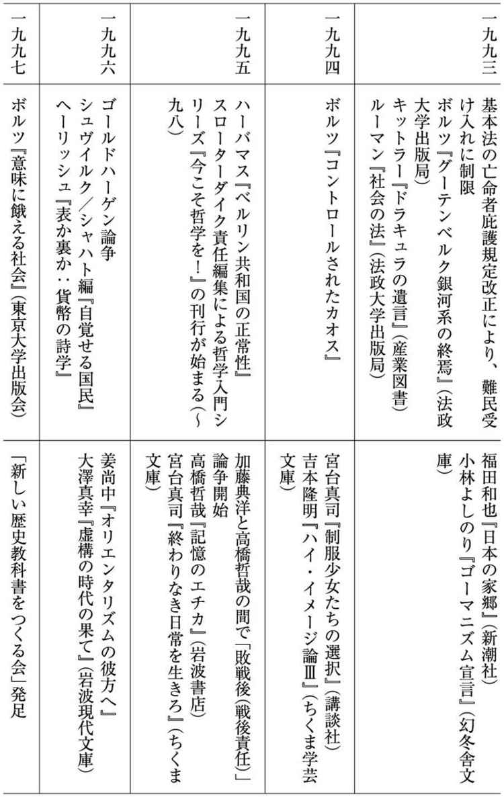

| 日本とドイツ 二つの戦後思想 | |
| 仲正 昌樹 | |
| (2005) | |
目 次
毎年のことながら、五月の終わり頃から八月十五日にかけて、「戦争と平和」をテーマにした〝恒例行事〟がいろんなところで開催され、新聞、総合雑誌、テレビなど、各種メディアが「左／右」にはっきり分かれて、源平合戦を展開し始める。
お互いにいろんなメディアに登場して、「日本は過去の侵略戦争に対してこれまで十分反省してこなかったので、またもや危険な道を行こうとしている」という反戦平和論と、「いつまでも自虐的なことを言っていたら、日本は本当の意味で自立した国家に回帰できない」という保守愛国論を展開する。普段は「もはや左右の二項対立の時代は、冷戦構造の崩壊と共に過ぎ去った。いつまで時代遅れのイデオロギー闘争をやっているんだ」などと、いかにもクールそうなコメントをしている評論家や思想家たちも、この時期だけは、それぞれの旗の下に馳せ参じて、思いっきり闘おうとする。この時期に〝やる気〟を見せておかないと、〝まじめな知識人〟として認めてもらえなくなるから、とにかくハッスルして、できる限りの戦闘的なパフォーマンスをやって見せたりする。そして、〝祭り〟が終わると、急に何もなかったかのように、クールに「左／右」の二項対立を超越したキャラに戻っている――国語の授業の復習のようだが、「政」という字を「まつりごと」と読めることに象徴されるように、「政治」と「祭り」には通底するものがあるようである。
当然、行事は年形骸化されていき、〝生き生きと闘っている人たち〟も、ロール・プレイであることをあえて隠そうとしなくなる傾向にある――つまり、全体的に『ＴＶタックル』とか『朝まで生テレビ！』のようになっていく。
しかし、今年（二〇〇五年）は、「終戦」もしくは「敗戦」から六十年という何となく節目になりそうな年であるせいか、年頭から、戦後補償をめぐる日韓の外交交渉の問題や、ＮＨＫの従軍慰安婦番組改編問題、首相の靖国参拝問題、竹島問題、中国の反日デモ、憲法改正論議......と前哨戦が続き、それなりの盛り上がりを見せている。イラクへの自衛隊派遣問題や、北朝鮮の核問題、米軍の再編問題など、「戦後六十年の分岐点における選択」と形容できそうなアクチュアル（時事的）なテーマが多かったせいもあって、久しぶりの〝熱い夏の闘い〟になっているような気がする。
そしてこの〝夏の闘い〟の一環として、例年通りの「日本とドイツの戦後の歩みの比較」についても、いくつかのメディアで六十周年記念企画が組まれているようだ。
今更言うまでもないことだが、ドイツと日本は枢軸国として同盟を組み、アメリカやイギリス、ソ連などの「連合国」と第二次大戦を戦って敗れた結果、周辺諸国から不信感を抱かれ、戦争責任を追及され続ける立場に置かれてきた――最近では、日本がアメリカと連合してドイツと戦ったと勘違いしている文系東大生も珍しくないようなので、必ずしも常識ではないのかもしれないが。
終戦からすぐに東西冷戦構造が形成されたおかげで、日独両者とも少し前まで敵であったにもかかわらず、すぐにアメリカを中心とする西側陣営に迎え入れられ、西側国家として急速な経済成長を遂げるに至った――厳密に言うと、ドイツの内、最初から西側陣営に組み込まれたのは、西ドイツ（ドイツ連邦共和国）の部分だけである。西側との同盟関係の都合で「再軍備」したにもかかわらず、様々な制約を課せられて独自行動を取れないできた点も両者で似ている。ただし、ドイツがナチス時代の戦争犯罪を徹底的に追及し、各種の戦後補償政策を実行し、「過去の克服」に積極的に取り組んでいると評価されているのに対し、日本は、過去の責任を曖昧にしてきたせいで、依然として中国や韓国から不信感を抱かれているという指摘がしばしば――日本国内で――なされる。
「過去の克服」の理想的なモデルとして、ドイツを引き合いに出す議論をリードしてきたのは、主としてドイツ史、ドイツ思想、ドイツ文学、ドイツ政治などを専門にするドイツ通のリベラル左派の知識人たちである――資本主義を全面否定するマルクス＝レーニン主義者の場合、日本やアメリカと同じように〝資本主義国〟である西ドイツをそれほど重視しない傾向があった。リベラル左派の人たちは、「ホロコースト（＝ナチスによるユダヤ人大虐殺）」の非人間性を強調したうえで、そうした過ちを二度と繰り返さないように努力してきた戦後ドイツの真摯で体系的な取り組みを紹介する。そうすることによって、近隣諸国に対する「侵略」戦争に関して「謝罪」することさえ回避しようとする日本（政府）の〝無責任さ〟を際立たせる。
当然、そうした左派的なドイツ・モデル論に対しては、右派の側から〝反論〟が出される。右派の〝反論〟は、①日本はそもそもホロコーストのような計画的な民族虐殺は行なっていないので、事情が根本的に異なる、②ドイツは純粋な道徳心から謝罪しているわけではなく、国際情勢の中での自らの国益を考えて戦略的な外交を展開しているだけである――の二点に要約することができるだろう。
こうした議論の代表選手が、もともとニーチェ研究者で、「新しい歴史教科書をつくる会」の運動の中心にもなっている西尾幹二である。ドイツ史家やドイツ文学者の中には右派の人も少なくないが、その多くは両大戦以前のドイツの「古き良き伝統」が今にも残っていることを強調して、「ドイツの負の側面」にだけ目を向けるべきではないという〝昔話〟に終始してしまって、さほどインパクトのある〝反論〟にはならない。それに対して西尾は、ドイツの文化面での「古き良き伝統」を肯定的に評価すると同時に、政治面での現実主義的な「狡猾さ」も強調するので、（日本の）左翼の観念的・理想主義的な体質を批判してきた保守論壇のメインストリームの議論に合流しやすかったと言える。ある意味では、リベラル左派と同様にドイツの対外政策の〝すぐれた特性〟を指摘しながら、それを理想主義的にではなく、現実主義的に解釈してみせるところが、西尾の〝反論〟の特徴である。
私はもともとドイツの近代思想史を専門にしているおかげで、こうした左／右双方の立場からの「戦後論」にいろんなところで出くわしてきた。私の知り合いには比較的リベラル左派の人が多いし、私自身も「過去に対する反省」は重要であると――意外と――素朴に信じているところがあるので、西尾流の〝反論〟とは一線を画しているつもりである。しかしながら、リベラル左派的なドイツ・モデル論の人たちの言っていることがあまりにも理想主義的で、このままでは受け入れがたいと感じることがある。
それは、主として「国益」に関わる問題である。左派の人たちは、戦後の（西）ドイツが西側陣営内での対外的な評価を最大限に意識しつつ、自らの担うべき補償責任の範囲を可能な限り限定しようとしてきたという、極めて明白であるはずの事実をなかなか認めようとしない。「国益」を考えないで、反省の気持ちや博愛の精神だけで外交をやっている「国家」があるはずがない。政治学を専門にしている人なら、そういうことは十分に分かっているはずなのだが、公の場では、それをストレートに口にしない傾向がある。
下手にその類のことを言うと、「あなたの言っているのは、西尾幹二と同じになるではないか」と非難されたりする。西尾も全く事実に反したことばかり言っているわけではないので、少しくらい一致してもいいではないかと私は思うのだが、左／右の二項対立図式の下では、そうした〝利敵行為〟は許されないらしい――対立し合っている二つの陣営が実は同じ前提を無自覚的に共有していることを、二項対立と言う。
私自身は、そのようにリベラル左派の硬直的な態度が窮屈でイヤだと感じたとしても、右派の人たちのように、「ドイツは日本の戦後責任論のモデルにはならない」と言い切るつもりはない。ドイツ・モデルを拒否する右派の人たちは、「歴史政策」に見られるドイツの道徳性が必ずしも高くないことを強調し、それを無理に持ち上げようとする「左派の虚妄」を叩くという戦略を取るわけだが、私に言わせれば、彼らの議論もまた暗黙の内に、左派とほぼ同じ前提の上に立っている。それは、「『過去の反省』のモデルとして採用するのなら、道徳性の極めて高い国にすべきである」という前提である。
「道徳性の高い適切なモデルがいないのなら、無理にどこかの国の真似をする必要はない」という右派の言い分は、「本当の理想的な善人などどこにもいないのだから、どこかの似非善人の真似などする必要はない」というのと同じ理屈であり、一見現実主義的に見えながら、実はかなり理想主義的に完璧さを志向しているように思われる。右派の人たちは、本当は日本自身が理想的なモデルだと言いたいが、戦後の日本の歩みを見る限りそうストレートに言い切るだけの自信はないのだろう。そのせいで、他国を理想化して、それと同化したつもりになって、自らの足場も確かでないくせに、高みから物を言っているように見える〝観念的〟な左派の態度に腹が立つのではないか、と私は思う。
私自身は、日本の「過去の清算」の参考として、ドイツのこれまでのやり方を学ぶことはそれなりに意味のあることだと思っているが、それは別に、ドイツの道徳性が日本より高いからでも、ドイツの方が過去の過ちを真摯に反省しているからでもない。日本とドイツでは、追及されている戦後責任の中身が違うだけではなく、戦後に置かれた状況もかなり異なっている。
ヨーロッパにおける東西冷戦の文字通り最前線にあり、四十年にわたって東西に分断されていたドイツには、西側諸国との関係改善に関してはほとんど選択の余地がなかった。西側の同盟の盟主であるアメリカから見れば、ドイツがフランスやオランダ、ベルギーなどの西欧の隣国や、アメリカの中東政策の要であるユダヤ人国家イスラエルとの間に、紛争の火種を抱えたままの状態であることは許されなかった。そのため、ドイツがこれらの国々と速やかに「和解」して、同盟関係に組み込まれるよう様々なお膳立てをしている。ドイツはその敷かれた路線を歩みながら、同時に自国の利益も確保しようとしてきたわけである。
それに対して日本は、やはり東アジアにおける冷戦に巻き込まれたが、中国、韓国、ヴェトナムなどとは違って、国家が引き裂かれて相互に直接的に軍事対決するということはなかった。アメリカも、東アジアには北大西洋条約機構（ＮＡＴＯ）に相当するような集団安全保障機構は設置しようとせず、各国との間に個別の安全保障条約を結んでいったので、日本を〝同盟〟の中で明確に位置付ける必要はなかった。日本と周辺諸国が和解するための枠組みを作る必要もなかった。
そうした周辺的なお膳立ての有無が、日本とドイツのそれぞれの「過去との取り組み」に大きな影響を与えていることを無視して、「ドイツは真摯に取り組んでいる」と主張するのであれば、右派の人たちから観念的であると批判されても仕方ないだろう。
このように環境の違いを強調すると、「環境が違うので参考にならない」と示唆しているように取れるかもしれないが、そうではない。ドイツが与えられた環境の中で自らの国益にとって最善と思われる選択をしてきた帰結として、「過去の清算」という点で日本よりも高い評価を受けるに至ったとすれば、その選択のパターンは結果的に妥当であったと見做してよいだろう。たとえ切羽詰まった状況の中での苦肉の策であったとしても、それが一定の成果を上げているのなら、節目節目における判断の背後にあった「ドイツ的な考え方」を学ぶことは無意味ではないと思う。
このように、「結果」を尺度にしてその国の対外政策の基本思想の妥当性を評価するのは、アメリカやイギリス、フランスなど他の西欧諸国が話題になる際には至極当然のことであるが、どうも「過去の清算」に関して日独を比較しようとすると、その当たり前の話が通用しなくなる。恐らく、日本の戦後責任問題については左右双方とも依然としてかなりのバイアスがかかっていて、なかなか本当の意味で現実主義的な見方ができないということと、カント、ゲーテ、ワーグナー、マルクス、ニーチェ、ヒトラー......など様々な意味で〝極端〟な人たちの祖国である「ドイツ」に対する「神秘的にして観念的」というステレオタイプ化されたイメージが相俟って、冷静な比較が妨げられているような気がする。
本書は、ここまで述べてきたような問題を念頭に置きながら、「過去の清算」を軸にしてドイツと日本の六十年間の「戦後思想」を比較しようとするものである。一冊の新書で二つの国の戦後思想の全体をカバーすることはできないので、当然、私にとって重要と思えるポイントに絞ったかなり恣意的な比較になってしまうし、マルクス＝レーニン主義国家であった旧東ドイツ（ドイツ民主共和国）のことも本格的に取り上げようとするとかなり複雑になるので、西ドイツ（ドイツ連邦共和国）にのみ軸を置く西側に偏った視点を取らざるを得ない。そうした制約はあるものの、限られた紙幅の中で、一応はドイツ思想史研究者である私が、学生時代からずっと感じてきた課題や疑問を、なるべく多くの読者に理解してもらえる形で呈示したいと思っている。
ドイツと日本の戦後思想は似ているように見えて、微妙なところで無視し得ない「違い」を示しているが、その違いを〝キリスト教文化〟だとか〝思想の深み〟といった抽象的な観念で強引に説明してしまうのではなく、可能な限り、歴史的・政治的な事情に即して分析することを試みるつもりである。また、そうしたドイツとの対比を通して、日本が「自らの過去」に対して曖昧な姿勢を取り続けているというのは、そもそもどういうことであるのか、できる限り具体的に描き出してみたい、と少々欲張りなことを考えている。
戦後のドイツと日本に、「戦争責任」という大きな問題を突き付ける最初の契機になったのは、連合国による国際軍事裁判である。ニュルンベルクと東京での二つの国際軍事裁判に基づいて、両国の「戦争犯罪」が裁かれ、戦争犯罪者たちが「処罰」されたわけであるが、これは従来の国際法・国際政治の世界では考えられなかった非常に〝画期的〟な出来事である。
改めて言うまでもないことだが、ある国家の領土内で、その国家が定めている「法」に反する行為をすれば、その国家から「法」に基づく制裁措置を受けることになる。逆に言えば、「国家」は、その国民及びその領土内で活動している人々に「法」を守らせるための権力の体系（＝主権）だと見ることもできる。
しかし国際関係もしくは国家間関係においては、国家主権を超えたレベルで、各国家を国際法（各種の条約や協定、あるいは国際的慣習など）に強制的に従わせることのできる絶対的な権力としての、超国家主権あるいはメタ主権と呼べるようなものはない。また国内法については、その解釈の仕方について争いが生じた場合、裁判所が「正しい解釈」の仕方を判定することになるが、国際法については、絶対的な権威を持った最終審級はない。国際連合（国連）が部分的にそうした役割を担っていると言えなくもないが、現実の国連には物理的な強制執行力も法的権威もない。しかも、終戦直後の「国連」というのは、文字通りの意味で〈United Nations〉、つまりドイツや日本などの枢軸国と戦った「諸国民連合」（＝連合国）にすぎず、超国家的な権威を持っていたわけではなかった。
当然、絶対的な主権が存在しない国際関係において紛争が生じた場合、特に国家間で戦争が起こったとしても、どちらの言い分が「正しい」か最終的に判定する審級はない。戦争の勝ち負けが事実上決まった時点で、負けた方が勝った方に対して、何らかの形で「賠償reparation」を行なうことで決着を付けるしかない。「賠償」することになる敗者の方に非があったように見えるが、それは、裁判のような法的論議の帰結ではなく、「強い者勝ち」であることを事後的に正当化したにすぎない。国家が刑法や民法に基づいて、誰のどのような行為が法律に違反したのか判定することになる、国内の紛争の「解決」とは根本的に異なる。
そのように、それまで超国家的な最終審級はなかったにもかかわらず、連合国側は「裁判所」を設置して、ドイツや日本が戦争に関連して行なった行為を、国内の刑事事件と同じような形で法的に裁こうとしたわけである。連合国側は、この国際軍事法廷が、恣意的な基準で敗者を裁くための見せかけではなく、国家主権を超えて存在する（はずの）普遍的な「法」に基づくものであることを確認すべく、裁判所で裁かれるべき犯罪行為とその審理の手続きなどを定めた「裁判所憲章」を、法廷を開く前に予め制定している。
被告が〝有罪〟になることがほぼ確定した後になって、「有罪」であることを追認するために、後から裁判所の規則を作るというのは、よく考えてみるとヘンな話ではある。近代刑法では、事件が起こった後でできた法律に基づいて罪を裁いてはならないというのが大原則（＝事後法の禁止）になっているが、それまで絶対的な法的尺度がなかったところに急遽登場してきた国際軍事法廷という存在は、それに明らかに反している。日本の超保守派の人たちが、「東京裁判というのは、普遍的な法の原則に基づいているわけではなく、勝者である連合国によって押し付けられた虚構である」、という趣旨の主張をしばしばする根拠は、ここにあるわけである。この批判には一理あると私も思う。どんな非道な相手であったとしても、〝有罪〟にするための法的根拠を事後的に作るのは、フェアではないだろう。
しかしながら、「実力行使で勝った者の論理の押し付けとしてできた法はインチキであり、認められない」という態度を徹底していくと、現存するほとんどすべての国の国家主権と法体系は、程度の差こそあれ、もともと強い者たちによる既得権益保持のために作り出されたものであるから、「国家」の存在自体がインチキだということになってしまう。
戦前の大日本帝国憲法も、明治維新の勝者たちによって勝手に作られたものであり、別に全「国民」の自発的な「合意」によって形成されたわけではない。アメリカのような共和制の国であっても、独立宣言が出された時点で、本当に全ての「国民」が独立に〝合意〟していたかどうか確認することはできない。後から、無理やり〝合意〟したことにされたのかもしれない。そもそも憲法（constitution）によって「国の形constitution」が確定される前に、その国を構成する「国民」がいるということ自体が矛盾である。いかなる「法」も、それが最初に創設されるに際しては、不可避的に「暴力」的な強制を伴うということをめぐる哲学的問題については、拙著『法の共同体』（御茶の水書房、二〇〇二年）の一章で論じたので、詳しくはそちらを参照して頂きたいが、要は、「強い者勝ちはインチキ」という理屈を貫こうとしたら、自国にもとからある法体系までも否定することになってしまうということだ。それは右派の人たちにとって、かえって都合が悪いはずである。
私の基本的な考えは、以下の通りである。
勝者が後から「法」を作るのはやはりフェアではないので、可能な限り回避すべきである。しかし、事実上の「法」の真空状態において誰もが予想しなかった大問題が生じてしまって、「何が間違って」いて、それに対して「誰に責任がある」のか確定しない限り、事態が収拾しないということがはっきりしていれば、そこに適応すべき「法」を事後的に再構成するのは仕方ないことだと思う。その際に、勝った側が自分に有利なルールを作ってしまうのも、ある程度容認せざるを得ないだろう。「法」の創設の仕方自体がアンフェアであっても、全くの無法状態のまま、強い者が、単純な暴力で自分の意向を直接的に押し付けてくるのよりはましである。そのようにして、勝者によって作為的に作られた「法」が本当に平和をもたらすのか、かえって新たなる争いの火種をもたらすことになるのか、すぐには分からない。時間をかけて、それがもたらす効果を観察するしかないだろう。
私は、連合国が日本とドイツ向けに後から作った「法」はこれまでのところ大筋において、二つの国、そしてその後それが直接的・間接的に適用されることになったいくつかの国の「民主化」と「政治的安定」という点では、ポジティヴに機能していると言ってもいいと思っている。無論、そのことと、もともとその「法」を作る中心になっていたはずのアメリカが、しばしばそれに違反すると思える行為をしており、それが最近特に顕著になってきたというのは別の問題である。
左の人たちの中で特に短慮な人たちは、「イラク戦争などで、アメリカは自分が中心になって作ったはずの国際法上のルールを自分で無視しているから、あんなものインチキで無効だ」としばしば主張するが、その理屈でいけば、与党の政治家や高級官僚などの権力者が自分たちの作った法律に違反して平然としているのであれば、その法律はインチキで無効だということになってしまい、無法状態になってしまう。強い者が自分に都合の良いように運用しているルールだからということで、そのルールが現実的には〝一定のポジティヴな効果〟をもたらしているにもかかわらず、全否定しようとするのは、東京裁判の欺瞞を弾劾する超保守と同じ発想だ。
日本では、真っ向から対立し合っているはずの反米左派と超保守派が、このような（現実主義的ではないという意味で）完全主義的な議論を通して〝ほぼ同じ結論〟に至ることがしばしばある。それこそが、二項対立である。後で見るように、ドイツでも、反米を軸として右と左が〝共同歩調〟を取ってしまう現象はしばしば見られるが、ドイツの知識人たちは自らの国家が置かれている立場をよく認識しており、かつ、これまでの歴史の中で、例えば第一次大戦敗戦後に、似たようなパターンの議論を徹底的にやった経験もあるので、日本ほど単純な展開にならないような気がする。
話を国際軍事裁判に戻すと、ドイツでの国際軍事裁判のために連合国によって作成された「国際軍事裁判所憲章」の第六条、及び、この憲章に準じて日本での裁判のために作成された「極東国際軍事裁判所憲章」の第五条では、裁かれるべき犯罪として、「平和に対する罪crimes against peace」「戦争犯罪war crimes」「人道に対する罪crimes against humanity」の三つが規定されている。
この内、「戦争犯罪」というのは、戦争当事者たちが「戦闘中」に遵守すべき戦時国際法あるいは国際人道法に違反したということであって、中身としては別に目新しいものではない――無論、もう一方の当事者が、裁判所を作ってその違反行為を〝客観的〟に裁くという形は目新しい。
「平和に対する罪」というのは、侵略戦争を起こして平和を乱したこと自体が「悪」であるのを前提として成立する概念であり、基本的に戦争しか国際紛争の最終解決手段がなかったそれまでの国際関係の常識からすれば、新しい考え方である。ただし、それまでも第一次大戦後の「不戦条約」（一九二八年）のように、国際紛争を解決する手段としての戦争を禁ずる多国間条約も〝一応〟あったので、戦争を起こした個人の責任を「犯罪」として追及するという点を除いては、「平和を乱したこと自体が罪である」という発想自体が決定的に新しいとは言い切れない。
それに対して、「人道に対する罪」というのは、それまでの国際法に全くなかった概念、更に言えば、これまで〝国際法〟と考えられてきたものの枠自体を超えた新しい概念である。これは、政治的、人種的、宗教的な理由から特定の人々に対する絶滅、奴隷化、追放などの「非人間的行為」を計画的に実行したことを、国際法上の罪と見做す考え方である。それだけを言うと、近代のヒューマニズムの精神からすれば、別に国際法で規定するまでもなく至極当然のことであるようにも思えるが、ポイントは、そのような「非人間的行為」が、たとえそれを実行した国のその当時の法律においては合法であり、実行された対象がその国の国民であったとしても、国際法的に〝犯罪〟と見做すというところにある。
従来の近代法の考え方では、一つの主権国家がその領土内で、自らの制定した法に従って、自国民をどのように扱ったとしても、それは〝合法〟であり、それに他国が干渉することを正当化する〝法〟的根拠はなかった。国際法（international law）というのは、国と国の「間のinter-」関係を調整するものであって、個々の国の内部には影響を及ぼさないのが原則である。敢えて干渉すれば、内政干渉になる。しかし、罪の適用を「国家」だけではなく「個人」に対してもできるようにしたことで、国内法に照らして合法であっても国際法で裁けるようにしたわけである。
連合国側が「人道に対する罪」で念頭に置いていたのは、当然、ナチスによるユダヤ人大量虐殺であるが、ナチスの犠牲になった人の中には、もともとドイツに居住していたユダヤ人もいる。選挙を通じて政権に就いたナチスは、各種の立法措置によって、国内のユダヤ人から各種の市民権を剝奪して、社会の中枢から隔離し、ドイツ国内では生きていけない状況を作り出した。そうした状況の中で、第二次大戦に突入して、ユダヤ人が数多く居住する東欧に進軍していき、最終的には、「ユダヤ人問題」に対する「最終解決」として「絶滅」という方針を決定するに至った。
そうした一連のナチスの「非人間的行為」の中には、ドイツの国内法的に見れば、〝合法的〟と認めざるを得ない部分もある。しかも、「最終解決」を実行した責任者たちは、当然のことながら、個人的にユダヤ人嫌いであるといった理由からやっていたわけではなく、国家の合法的な命令に従った〝だけ〟である。原則的に考えれば、直接的に個人の責任を追及する前に、「国家」そのものに責任を取らせねばならないはずであるが、その国家は敗戦の時点でほぼ解体してしまっているし、最終的な命令を出した国家元首ヒトラーと、ユダヤ人問題に関して政権内でイニシアティヴをとってきた最高幹部ヒムラーとゲッベルスは既に自殺している。そのためなおのこと、国家が計画的にやったことと、個人が自分の判断でやったことの区別が付きにくくなっていた。
そうした曖昧な状態の中で、とにかく未曾有の〝犯罪〟であるホロコーストの責任の所在を――国家の枠を超えて――確定して、問題に決着を付けるために考え出されたのが、国家主権を超えて普遍的に適用される「人道に対する罪」という概念である。ホロコーストのような非人道的な行為は、「人類humanity」の存在それ自体を脅かす深刻な〝犯罪〟であるので、実定法を制定する主体である主権国家がその行為がなされた時点でそれを合法化していると否とにかかわらず、それを実行した者に対して、（国家に対してではなく）「人類」に対して「罪」を犯した責任を追及できるようにしたわけである。
ニュルンベルク国際軍事裁判では、被告になったゲーリング、デーニッツ、カイテルなどのナチス国家の最高幹部たちが、「人道に対する罪」で有罪になった。それだけにとどまらず、必ずしも戦争それ自体にかかわらないナチスの犯罪を裁くために、国際軍事裁判の後を受ける形で設置された「ニュルンベルク継続裁判」と総称される十二の裁判でも「人道に対する罪」が追及され、医師裁判では強制収容所での人体実験や、障害者などに対する強制的な「安楽死」を実行した責任者などが有罪になった。また一九四八年には、「人道に対する罪」に対応する形で、民族的な理由などによって特定の集団の抹殺を企てることを禁止する「ジェノサイド条約」が国連総会で採択されている――「民族浄化」を行なった旧ユーゴスラヴィアのミロシェヴィッチ元大統領などに対する責任追及の根拠になっているのは、この条約である。
また手続き的には問題はあるが、イスラエルは六〇年にアルゼンチンに逃れていたアウシュヴィッツのガス室の責任者アドルフ・アイヒマンを捕えて、六一年から翌年にかけてエルサレムで裁判にかけ、「人道に対する罪」などで死刑判決を下している。ユダヤ系ドイツ人であったためアメリカに亡命し、戦後もアメリカで活動するようになった政治哲学者のハンナ・アーレント（一九〇六‐七五）は、このアイヒマン裁判を傍聴して、国家の命じるままに――良心の呵責もなく――行動してしまった〝平凡な役人〟としてのアイヒマンのキャラクターを分析した『エルサレムのアイヒマン：悪の陳腐さについての報告』（一九六三）を著して、その後の全体主義研究に大きな影響を与えることになった。
この「人道に対する罪」の概念は、一九四九年に建国されたドイツ連邦共和国の刑法に厳密な意味で引き継がれているとは言えない面もあるが（これについての詳しい説明は、石田勇治『過去の克服：ヒトラー後のドイツ』白水社、二〇〇二年、四八‐一九五頁参照）、ナチス犯罪の責任者に対する追及は続けられ、七九年には謀殺罪の時効が廃止されているし、ホロコーストの存在を否定してナチスを正当化する趣旨の、いわゆる「アウシュヴィッツの嘘」と呼ばれる言動に対しては、侮辱罪や民衆煽動罪を適用するための特別の規定がもうけられている。ホロコーストの犠牲者に対する国家補償のために五六年に制定された「連邦補償法」も、その前文で（「人道に対する罪」に対応する）「ナチスの不法」に対する償いのために制定された法律であることを明記している。ユダヤ人や反体制活動家などに対する人種、政治的信条、世界観などに基づく迫害が、たとえその当時の国家の方針であったとしても、「法」に反していたことを、新国家が明確に認めたわけである。
このように見てくると、アメリカを中心とする西側連合国の占領下で成立したドイツ連邦共和国という国家は、その成立過程の中で、自らの前身である第三帝国が「人道に対する罪」を犯したことを認めたうえで、その〝罪〟を清算することを自らの政治的・法的課題として引き受けたと見ることができる。無論、ドイツ人が「人道に対する罪」を自発的に認めたというよりは、占領下にあって仕方なく認めさせられたという見方は可能であるが、それを前提にしてドイツ連邦共和国という国家が創設されている以上、（東西冷戦下で）この国家の存在を擁護し、発展させていこうとする立場の人であれば、「人道に対する罪」を連合国によるフィクションだといって全否定することは難しい。
ドイツ連邦共和国初代首相になったコンラート・アデナウアー（一八七六‐一九六七）は、五〇年九月の連邦議会での所信表明演説で、「ナチスの不法に対する補償についての道徳上の義務」「ドイツ民族の名誉に関わる責任」に言及し、「ナチスの不法＝人道に対する罪」の犠牲者に対する補償政策の端緒を開いた。その範囲や方法をどう具体的に確定するかという政治的・法技術的問題は常にあるものの、「ナチスの過去」という負の遺産を清算すべき責任があることは、戦後西ドイツ史の節目節目において確認されてきた。保守政権であれ社会民主主義政権であれ、ナチスの過去に対して、「謝罪」する必要が〝そもそも〟あったのかという議論が本格化したことはない。
このように、「人道に対する罪」に対する国家の責任が最初から極めて明確に規定されていたドイツの状況と比べると、日本の場合、「人道に対する罪」をそもそも国家として受け入れたのかどうかが最初から曖昧である。既に言及したように、極東軍事裁判所の憲章でも三つの罪が規定されているが、日本の戦犯たちは、このそれぞれの項目に関して有罪／無罪を判定されたわけではなく、〝包括的〟に責任を問われる形になった。判決文の中でも「人道に対する罪」という言葉は使われていない。そのため戦前の日本が、そもそも「人道に対する罪」を犯したのかどうか、対外的にもはっきりしていない。
「人道に対する罪」はもともと、ナチスの「最終解決」のように、特定の集団の計画的な絶滅を想定して作られた概念なので、日本の韓国や台湾に対する植民地支配や帝国臣民への同化政策のようなものには、うまく当てはまらない。近年日本のマスメディアでしばしば取り上げられている強制連行や従軍慰安婦のような問題であれば、部分的に「奴隷化」に該当する可能性はあるが、終戦当時はそうした問題は、連合国側から提起されていなかった。七三一部隊による捕虜などに対する人体実験は、明らかに、ニュルンベルクの医師裁判で裁かれたのと同じ種類の犯罪であり、「人道に対する罪」に相当すると考えられるが、これについても連合国側は軍事裁判の俎上に載せておらず、日本の司法でも責任を追及されなかった――薬害エイズ事件で有名になった緑十字の創設者である内藤良一・元軍医中佐も七三一部隊の元幹部であった。
そのため、「人道に対する罪」に関しては、刑法の面でも国家補償の面でも特別の例外措置を取ってきたドイツに対して、日本では、後になって「人道に対する罪」に相当するかもしれない事例が指摘されても、実行者に対する責任追及も、国家補償もなされないという状態が続いている。従軍慰安婦や強制連行問題をめぐる裁判で、国側（日本政府）はしばしば、明治憲法下では「国家無答責の原則」――国家の行為は全て合法であり、従っていかなる場合も、責任を問われないこと――があったと主張し、裁判所もそれを認容しているが、「人道に対する罪」が問題になっているとすれば、このような議論は本来あり得ないはずである。原告の個々の訴えを認めるかどうかは別にして、少なくとも彼らの訴えている内容が「人道に対する罪」に関するものであるとすれば、国家主権による制約も「事後法の禁止」の原則も超えた国際法上の強行規範（jus cogens）であるので、安易に「国家無答責」を持ち出すことはできないはずである。にもかかわらず、司法の場でこの論理が通用しているということからすれば、日本の法律の世界では事実上「人道に対する罪」という考え方が受け入れられていないと考えるべきだろう。
このように「人道に対する罪」という概念が受容されていないことが、ホロコーストの罪を犯してしまったドイツと、一般的な戦争犯罪を追及されただけの日本は違う、という見方が保守系の知識人の間に生まれてくる第一の原因になっているのではないか、と私には思われる。しかし、それはかなり一面的な見方である。確かにナチス・ドイツがやったことがひどすぎたので、連合国から「人道に対する罪」を外から押し付けられたのだと否定的に評価することもできるが、同時に、その〝押し付け〟の結果として、ドイツが（ユダヤ人が多く居住する）他の西側諸国との関係改善に向けてのポジティヴな契機が生まれたと見ることもできよう。
戦後のドイツと日本の戦後責任の捉え方の違いを、左右双方から批判を受けるのを承知で非常に〝分かりやすく〟例えれば、極めてはっきりした大悪事を犯したため周りから徹底的に追及されたせいで事の善／悪をよく理解するようになった元大悪人Ａと、Ａと比べるとそれほどはっきりしない中途半端な悪事を働いたため周りから中途半端に責められて、やはり中途半端な善／悪の基準しか持っていない元中悪人Ｂという感じになるだろう。
ドイツでも日本でも国際軍事法廷で「戦犯」として直接的に裁かれたのは「個人」であるが、間接的には、戦争を引き起こした「国民」全体の責任が問われたと見ることもできる。全体主義的な「国家」が引き起こした戦争に対して、そもそも「国民」一人一人に何らかの意味で責任があるのか、あるとすれば、どのような責任であると考えるのかは、その国の政治文化を規定する重要な要因である。一般国民の戦争責任をめぐる議論の様相は、ドイツと日本ではかなり異なる。
ドイツでの国民の戦争責任をめぐる論議の先駆けとなり、現在に至るまで影響を与え続けることになる議論のための基本的枠組みを作ったのは、実存主義の哲学者・精神医学者として知られるカール・ヤスパース（一八八三‐一九六九）である。彼はその妻がユダヤ人であったため、三七年にハイデルベルク大学の哲学正教授の地位を追われ、終戦まで沈黙を強いられた。彼は、四五年の秋から準備を始め、翌四六年の初めにもとの職場であるハイデルベルク大学で行なった「罪責問題について」と題した講演で、この問題についての基本的考え方を示している。
彼は、ニュルンベルクでの国際軍事裁判などを通して国家の最高指導者たちの罪が裁かれ、「正義＝法」が実現されつつあること自体は肯定的に見ているものの、占領軍当局が、「これは君たちの罪だ」という断定的な文句を添えたプラカードをあちこちに掲げ、ドイツ国民全体に無理やり責任を感じさせようとするかのようなキャンペーンを繰り広げていることには違和感を感じていた。そうした押し付けがましいやり方は、ドイツ人一人一人が自らの「罪」について主体的に考えるうえで、かえってマイナスになると考えたようである。
その意味で彼は、ある特定の集団に属しているだけで自動的に罪があるとする「集団的罪＝連帯責任Kollektivschuld」という考え方は、認めない態度を取った。これは一見、罪はナチスの最高幹部にだけあって一般国民は関係ないという言い訳のように思えるし、そう理解してしまう人も少なくないが、彼は決して一般国民には「罪がない」と言っているわけではない。「国民」という抽象的な集合体がまとまって罪を負っているかのような語り方をすれば、国民を構成する各個人がそれぞれ異なった仕方で、異なった重さで負っているはずの罪の具体的な中身がかえって曖昧なものになってしまう。各個人が、自分の罪について主体的に考えるべきだというのが、ヤスパースの議論の大前提である。
ヤスパースは各人が負っている可能性のある「罪」の内容をはっきりさせるために、①刑法上の罪、②政治上の罪、③道徳上の罪、④形而上学的な罪――という四つの罪概念を区別している。
①は文字通り違法行為としての「罪」を指しており、当然、極めて個人的な性質のものであり、その有無は裁判所での審理を通して判定される。ニュルンベルクの国際軍事裁判で裁かれているのは、この意味での罪である。
②は、自らが所属している政治的な共同体が、何らかの過ちを犯した場合、その誤った政策を直接的あるいは間接的に支持したことから帰結する罪責である。ナチス国家が引き起こした様々な不法に関しては、この国家を支持してきたという意味で国民一人一人もその一端を担っていると考えられる。実際、敗戦によってドイツが占領された結果、それまでナチス国家の一員であった各市民の権利は、いろいろな面で制限されている。しかし、それが政治上の罪の帰結である以上、各人はそれを受け入れるべきだという。
③は、法や政治といった公共的な場において他者から追及されることはないが、自らの内面において良心の呵責を感じさせるような行為に対応する罪である。例えば、心ならずも人前でヒトラーに忠誠心を誓う身振りを示したことや、ナチズムをドイツ民族の理想だと無理に思い込もうとしたこと、上からの命令に従うのを美徳だと錯覚したことなどである。この罪は、各人が自らに対する裁判官になって、自らに問いかけるべきものだ。
④はかなり抽象的な表現であり、③とどう違うのかピンと来にくいが、ヤスパースによれば、③では、自分が別の行動を取っていれば、現実に対してポジティヴな変化を与えられる可能性があったにもかかわらず、その行動を敢えて取らなかったこと、いわば主体的行動の欠如がポイントになるのに対して、④では、人間同士の「連帯」の強さが問題になる。つまり、ユダヤ人が集団的な迫害を受けていることを一個人が知っていたとしても、ほとんどの場合、たとえ自分の命を投げ出してまで救おうとしても、何ら事態を変えることはできなかったであろうと想像できる。
国家の権力の前に、個人はあまりにも無力である。しかし、たとえ何もできないことが分かっていたとしても、自分の目の前で罪のない人々が殺害されるのを目の当たりにすると、人は時として、彼らに死の運命が訪れたのに対して、自分たちは生の側に留まっていること、何もできなかったことに対して、〝同じ人間〟として、同胞として後ろめたさを感じることがある。それが形而上学的な罪である。道徳上の罪が、個人の具体的行為に関連しているという意味で身体的（physisch）な性質を有しているのに対し、形而上学的（metaphysisch）な罪というのは、個人がどのような行動を取ったか、取り得たかに関係なく成立するという意味で、身体的な制約を超えて（meta-）いると言うことができる。日本的に言うと、「何もできなくて、同じ人間として申し訳ない」ということである。
無論、こうした意味での「形而上学的な罪」というのを哲学的に突き詰めて考えていくと、とどのつまり、「同じ人間としてこの世界に生きていながら、どこか私たちの知らないところで苦しんでいる人たちに対して、何もしてあげられないのは罪である」ということになり、最終的にキリスト教の「原罪」観に繋がっていく。キリスト教を背景にしているヤスパースは基本的には、「罪」についてそこまで深めて考えることが望ましいという立場を取っている。
しかしドイツ人が、自己の罪を相対化することを目的として、恣意的に「ホロコーストのような人類の悲劇に対して、全人類に罪の一端がある」といった語り方をすることに対しては警告を発している。道徳的な罪や形而上学的な罪は、自分自身に対して問いかけるべきものであって、他人と比較するために持ち出すべきではない。
このヤスパースの議論は、法や政治の場において公式的に清算することが可能な①②の罪と、自分自身でどこまでも追及し続けるしかない③④の罪を分けて考えることによって、具体的な〝解決〟を呈示することと、個人が自らの良心の内で自問し続けることを両立可能にするものであった。
つまり、戦争犯罪の責任者を処罰したり、被害者に対して補償を行なうことと、自らも負っている罪について道徳的・宗教的に内省するのは、別のことなのである。この点を理解することは、非常に重要である。日本の戦争責任問題をめぐる論争ではしばしば、「謝罪・反省」という個人の内面の問題と、国家全体の方針としての法的・政治的な「解決」が渾然一体とした形で語られて、左派が「日本人は、まず過去に対する反省ということを理解しなければ、隣国との政治的関係を改善できない」という主張をするのに対し、右派は「安易に反省していたら、いくら国の予算があっても足りないことをバカな左翼は分かっていない」と応酬するパターンが繰り返される。私に言わせれば、「反省」というのは個人の「心の中」の問題であり、独房に閉じ込めて洗脳でもしない限り政治的に強制して〝反省させる〟ことなどできないので、左右双方とも大前提が間違っている――無論、洗脳で〝反省〟させても意味はない。こうした不毛な混乱が未だに続いているのは、戦後日本にヤスパースのように議論の筋道を付けてくれる思想家がいなかったせいではないかと思う。
少し後でまた述べるように、ナチス国家によるユダヤ人に対する組織的迫害は、ドイツ国民の大多数の支持がなければ不可能であったことは確かだが、最終的に「絶滅」させるという意味での「最終解決」自体は、大戦の後半にヒトラーとごく一部の側近たちの間で秘密裏に決定されたものであり、一般国民はそこまでやるということは知らされていなかった。「最終計画」のためのユダヤ人の護送や収容などに関与していた軍人、警官、鉄道員なども、〝おおよそのこと〟は分かっていたかもしれないが、全体像をどこまで把握していたかは当人たちの意識の中でも明確になっていない。単に見て見ぬふりをしていた一般市民から、それを積極的に支持していた人、少しは具体的に関与した人、殺害の実行に当たった現場の兵士、中央から指令を下に伝えた司令官、最高指導者まで、様々なレベルでの関与の仕方があったので、これらを全て法的・政治的罪として一括りにしてしまったら、かえってリアリティがなくなる。ホロコーストの全体像を把握していなかった人たちが、自分たちが知らないところで最高指導者たちが下した「決定」に起因する罪までも不当に負わされないことにすると同時に、「不作為」までも含めた、自分たちの様々な関与の仕方について具体的に反省するには、罪の概念を区分しておくことが必要だったのである。
ヤスパースの四つの罪の区別は、ドイツにおける「過去の克服」論争において、戦争責任の更なる追及を主張する側（主に左派）と、もう十分償ったはずだと主張する側（主に右派）の双方から絶えず参照される。どちらの立場を取るにしても、内面的な責任と、政治的・法的責任は、別だと考えた方が論点がはっきりするからである。
一九八五年五月二十日の敗戦四十周年記念日に、当時のドイツ連邦共和国のリヒャルト・フォン・ヴァイツゼッカー大統領（一九二〇‐ ）は連邦議会で「荒れ野の四十年」と題した有名な演説を行なった――「荒れ野の四十年」というのは、『旧約聖書』で、神の戒めを忠実に守れなかったモーゼとイスラエル民族が、カナンの地に入るまで四十年の間荒れ野を放浪しなければならなかったというストーリーをもじっている。
この中で彼は、ヤスパースにならって集団的罪を否定し、罪のあるなしはあくまでも個人的問題であるという立場を表明した。そのうえで、当時生まれていなかった人たちに先人の犯した罪についての告白をするよう強いることはできないが、彼らもまた、先人の遺産、「過去からの帰結」に関わっているので、その帰結に対して「政治的責任」を負わねばならないという議論を展開している。この意味での責任は、ヤスパースの「政治上の罪」に部分的に対応していると考えられる。ドイツ人が四十年経っても依然として隣国から不信感を持たれているので積極的な外交政策を展開できず、東西分裂状態にあるのは、ナチスの過去の帰結である。ドイツ連邦共和国の下での経済的繁栄、福祉、教育、安全、自由などを享受している以上、負の遺産の方も受け入れるべきだということである。私なりに理解すると、親の遺産を相続する時に、負の遺産（借金）も一緒に相続しなければならないのと同じ理屈である。
法的・政治的罪に対する解決と、罪をめぐる個人的内省を分けて考えるヤスパース＝ヴァイツゼッカーの戦略は、キリスト教神学を思想的な背景としていながら、非常にプラグマティックでもある。日本のドイツ通の左派の中には、このプラグマティックな部分に、ドイツ的な「狡猾さ」が隠れていると指摘する人たちもいるが、私はむしろ、日本はその「狡猾さ」を学ぶべきだと思う。
繰り返しになるが、〝ヤスパース〟を欠いていた戦後の日本では、戦争責任を様々なレベルに区分けしたうえで、どこまでが天皇やＡ級戦犯などの国家の首脳の責任か、戦争犯罪に部分的に加担してしまった一般兵士にはどの程度の責任があるのか、具体的に〝犯罪〟に加担しなかったものの政府や軍の方針を黙って見ていた一般国民はどういう責任を負っているのか、といった細かい議論はほとんど行なわれていない。国民全てが悪いのか、それとも、Ａ級戦犯だけが悪いのか、という極めて単純な二項対立図式になりがちである。「国民全てが悪い」などという、集合的罪論を安易に振り回せば、ヤスパースが懸念したように、個人の責任が全体の中に埋没して曖昧になってしまう。そうした傾向を生み出すきっかけになったのは、〝日本的な反省〟のいいかげんさを表すものとして広く人口に膾炙している「一億総懺悔」というキーワードである。
この言葉の出所は、戦後最初の首相に任命された皇族出身の東久邇稔彦（一八八七‐一九九〇）が、一九四五年八月の記者会見で語ったとされる、「一億総懺悔することがわが国再建の第一歩」というフレーズである。
東久邇のこの発言は、そもそも旧植民地やアジア諸国の人々に対して損害を与えたことに対する「罪の懺悔」という文脈ではなく、どうして「敗戦」したかという文脈で出てきたものである。戦時中の「闇経済」に見られる国民の「道義の頽廃」のせいで戦意が上がらず、戦争に敗れた以上、敗戦で国民が苦労するのは仕方ないということである。つまり「懺悔」という一見宗教的な用語を使っているものの、「敗戦責任論」としての「総懺悔」であって、他者に対して犯した「罪」を悔い改めるという話では毛頭ない。戦争を始めたこと自体が悪いという議論でさえない。東久邇発言に限らず、終戦直後の「責任」論のほとんどは、「敗戦という嘆かわしい結果」に至った原因の説明に集中しており、ドイツの場合のように、国家の利害や戦争の勝敗を超えた「人道に対する罪」のようなものが議論の俎上に載せられたわけではない。
無論、一億総懺悔などで論じられた「敗戦」には、「敗戦のために悲惨な生活を強いられている国民の現状」ということが不可避的に含意されていた。ナチス・ドイツの戦争遂行過程で犠牲になったユダヤ人も一部はもともとドイツ国籍者であったので、「国民が戦争の結果受けた被害」という視点から比較すれば、日本とドイツの「責任」論が全く異質なものであった、と断定することはできない。しかし、ドイツでの議論が主として、一般国民の「外部」にいるものとして想定されているホロコーストなどの犠牲者に対する責任に向けられた――あるいは、周辺諸国からのプレッシャーを受けてそこに関心を向けざるを得なかった――のに対し、日本での議論が、主として「国民」の「内部」にいる〝犠牲者〟に対する責任に向けられたのは、大きな違いである。
しかも、その「内部」からは、旧植民地であった朝鮮半島や台湾、あるいはアメリカの占領統治下に置かれた琉球はいつのまにか除かれていた。そのため日本での「戦争責任」論は、最初から「国民国家nation-state」の枠内での、仲間内での責任追及という閉鎖的な性質を帯びていたのである。
ドイツを始めとするヨーロッパの近代史においてしばしばキーワードとして登場する「国民国家」という概念は、法的・政治的な制度としての「国家state」を構成している人民（people）と、言語・歴史・文化を共有する共同体としての「国民nation」がほぼ一致している状態を指しており、ドイツはナポレオン戦争以来、この状態を達成しようとして何度も挫折し、それが二つの世界大戦の遠因になったとさえ言われている。戦後の日本は、恐らく世界で最も国民国家度の高い国となっている――ドイツの場合、ドイツ語民族の国であるオーストリアや、スイスのドイツ語圏、旧ドイツ語圏であるフランスのアルザス・ロレーヌ地方などのことを念頭に入れると、今でも国民国家と言えるかどうか疑問である。
そうした意味で、もともと敗戦をめぐる議論の土俵が狭くて内向きになっているところで、議論をリードすべき立場にある首相が、最初に「一億総懺悔」を言い出したわけであるから、誰（加害者）が誰（被害者）に対して罪を犯した責任があるのか、という意味での責任論は極めて漠然としたものになってくる。
国家元首である天皇を中心とする国家の首脳たちに戦争を始めた主たる責任があり、末端にいる一般国民が誤った戦争遂行の犠牲になったという前提に立てば、加害／被害関係はそれなりにはっきりしたはずだが、天皇制の維持を至上命題としていた当時の政府としては、天皇が戦争を始めた責任者であり、その意味で加害者であるとあっさり認めるわけにはいかない。国家の最終的意思決定者である天皇の責任問題について敢えて触れないようにすると、敗戦をめぐる責任論の枠組み自体があやふやになり、誰が何をしたことが問題なのか確定できなくなる。そのため政府は、苦肉の策として、「戦争」の是非それ自体を論じることを回避したまま、「とにかくみんながだらしなかったので、こんなことになったのだ。だからみんなで反省しよう」という日本的な「みんな」の論理に落とし込んでしまうことを模索した。
しかし、文字通りの一般国民ではなく、「天皇」に極めて近い立場にある皇族出身の首相がそれを主張すれば、当然、人々の反発を買うことになる。一般国民は「お上」の決定によって一方的に戦争に動員されて命がけで戦わされた挙げ句、敗戦によって更に大きなダメージを受けた、という感覚を多くの人が持っていた。同年（一九四五年）の九月八日付の毎日新聞に、戦力低下に拍車をかけた官吏たちの怠慢を棚に上げて、戦死者やその遺族たちも、みな同じように反省しろとでもいうのか、という主旨の投書が掲載されたのを契機に、権力者による責任隠蔽としての「一億総懺悔」論を批判する声があちこちで上がった。しかし、そうした批判論の多くは、毎日新聞への投書と同様に、主として権力者に責任があることを強調し、間接的に一般国民を「被害者」の立場に置こうとするものであった。「一億総懺悔」はその反作用として、［一般国民＝被害者］という見方を強化するという逆説的な効果をもたらした、と見ることもできる。その際に、「日本国民」の外側にいるアジアの被害者たちのことは、ほとんど視野に入っていない。
論理的に考えれば、帝国臣民である一般国民が天皇制の下での「被害者」であると同時に、帝国の周辺部（＝植民地）あるいは外部の人に対しては加害者であるというのは、別に矛盾することではないが、いったん［一般国民＝被害者］というイメージが形成され始めると、それに対して否定的なことを言うのは難しくなる。
戦後の日本の論壇・政治思想をリードし続けた丸山眞男（一九一四‐九六）は、雑誌『世界』の一九四六年五月号に掲載された論文「超国家主義の論理と心理」で、戦前の日本を支配していた「超国家主義」を、天皇を政治的に利用して国民をコントロールしようとする為政者の論理と、それを受容してきた国民の心理の結合体として描き出したうえで、中国やフィリピンでの日本軍の暴虐な振る舞いの「直接の下手人」は、一般兵隊であることを指摘している。
陛下の赤子である兵士たちは確かに、天皇の権威を笠に着て有無を言わさず命令を押し付けてくる上官との関係では抑圧された被害者であるが、自分たちよりも弱い立場の者に対しては、自らも抑圧者となり得る（＝抑圧委譲）。この分析を更に「下＝より弱い方」に向かって延長していけば、国民の「外部」に対する加害責任にまで繋がるはずだが、丸山は論文の中でそこまで議論を進めていないし、その後もそういう方向の議論はしていない。
また、天皇を〝中心〟とする権力者たちの法的・政治的責任とは別のレベルでの、「一般国民」の責任を問題にするようなヤスパース的議論も行なっていない。一般国民が天皇制を主体＝臣民（subject）的に支えていたという事実を指摘するに留まっている。彼の論文は、「日本軍国主義に終止符が打たれた八・一五の日はまた同時に、超国家主義の全体系の基盤たる国体がその絶対性を喪失し今や始めて自由なる主体となつた日本国民にその運命を委ねた日でもあつたのである」（『増補版 現代政治の思想と行動』未来社、一九六四年、二八頁）という日本国民の未来に向けてのオプティミスティックな一文で締めくくられている。
歴史社会学者の小熊英二（一九六二‐ ）は、戦後民主主義とナショナリズムの関係を俯瞰する体系的研究書として話題になった『〈民主〉と〈愛国〉』（新曜社、二〇〇二年）の中で、「一億総懺悔」論の存在のために、特に進歩系の知識人の間での戦争責任論議にある種の制約が課せられたことを指摘している。
一般国民の責任を追及する方向の議論を行なうと、「一億総懺悔」と同じと取られてしまう恐れがあるので、それを避けようとするあまり、矛先がどうしても戦争を指導した――天皇を含まない――政治的権力者〝のみ〟に向かってしまいがちになったというのである。そのため、一般国民と超国家主義の間の共犯関係の問題が本格的に議論の俎上に載せられることはなく、被害者としての一般国民の立場を擁護する風潮が強まった。結果的に、天皇（制）を免罪にしようとする権力者側の思惑と、被害者としての一般国民を強調したい進歩的知識人の思惑が〝新たな共犯関係〟を形成して、〝戦争責任〟をめぐる論議を「内部」に限定することになった。
しかも、小熊が更に指摘しているように、一般国民の被害者性を前面に出して、為政者の責任を追及する議論は、国のために死んだ戦死者たちの犠牲的な精神を倫理的根拠として引き合いに出すことが多く、その意味でナショナリズム的な性質を帯びていた。戦争を遂行した為政者たち――その中に天皇が含まれているかどうか定かではない――の責任を追及するほど、かえって「国のために死んだ人たち」が美化されるという奇妙な「〈民主〉と〈愛国〉」の弁証法が作動したのである。「国のために戦って死んだ人たち」の名の下に、政府や保守主流派の堕落を糾弾する小林よしのり（一九五三‐ ）のゴーマニズムの淵源は、終戦直後の「一億総懺悔」の是非をめぐる国民国家内部の争いにあったと見ることができる。
戦争で「国のために死んだこと」を、「国民」の免責のための倫理的正当化の根拠にするこうしたタイプの議論は、当然のことながら、『我が闘争』で明確に反ユダヤ主義を標榜していたヒトラーを政権に就け、ホロコーストへの道を開いてしまった「国民」全体の（政治的）責任が追及されたドイツではほぼ不可能だった。反ユダヤ主義的なナチス国家のために死んだことは、悲劇ではあっても、誇るべきことではなかった。無理に誇りにしようとすれば、間接的にナチス思想まで肯定することになりかねないし、そのナチス国家自体が既に消滅していた。
これに対して日本の場合、国家の核である「天皇制」が残存していたうえ、一般国民の間でも天皇制そのものまでも否定しようとする声がそれほど大きくならなかったこともあって、〝無理な戦争をやった政府や軍閥〟などの問題を飛び越えて、「天皇＝国体への忠誠心を示すために死んだ」こと自体は貴い、という武士道的な〝倫理〟が成立する余地が多少なりとも残されていた。皮肉なことに、もともと天皇の名の下に始まった戦争に対する責任を追及していたはずのＧＨＱ（連合国最高司令官総司令部）が、日本の間接占領統治をスムーズに進めるという目的のために、旧体制の象徴である天皇を極東国際軍事法廷の戦犯から除いたことによって、こうした〝倫理観〟が間接的に裏書きされることになった。
このようにして戦犯を始めとする政府・軍首脳だけが加害者で、天皇も一般国民も、無理やり巻き込まれた被害者であるという日本的な〝戦争責任〟論が展開することになったのである。
日本の敗戦責任〝論争〟で、一般国民は被害者ではなく「共犯者」であるという言説が流通しなかった現実的な背景要因として、広島と長崎の原爆の問題に触れておく必要があるだろう。
史上初の原爆によって数十万の死者が出て、放射能の恐怖が実証されてしまったことによって、広島と長崎はアウシュヴィッツと並んで、「第二次大戦の悲劇」と「反戦・平和運動」の象徴として世界的に通用している。原爆で死んだ人の大部分は、非戦闘員であり、この犠牲者たちを戦争の「被害者」と見ることにはあまり問題はないだろう。
しかしながら、それを二つの都市での犠牲者の範囲を超えて、「国民」全体の受けた被害として捉えようとする時、話は違ってくる。ドイツ国民にとって「アウシュヴィッツ」とは、東方におけるユダヤ人絶滅計画の中心地である。国外における加害の地である。それに対して、日本国内にある広島と長崎は、日本国民が大戦の被害者であることの象徴だ。日本が東アジア諸国に与えた被害よりも、原爆によって受けた被害の方が目立ってしまうわけである。無論、日本の一般国民がアメリカの原爆投下によって受けた被害と、東アジア諸国の国民が日本の侵略によって受けた被害はそれぞれ別個のものであり、前者が大きいからといって後者が帳消しになるわけではないが、現実問題として、日本国民にとって、前者のインパクトがあまりにも強烈だったので、後者の方が視野に入りにくいという傾向が生じてきた。
日本国内の反核を軸とする反戦・平和運動の展開の仕方も、結果的に、日本の被害者性を前面に出すことに寄与してしまった面がある。左派主導のこれらの運動はほぼ一様に、「唯一の被爆国である日本から、反核の声を上げていこう」という趣旨のスローガンを掲げる。
別に間違ってはいないが、これを強調しすぎると、戦争や植民地支配という全体像の中では、日本国民はむしろ戦争の加害者であったことが見えにくくなる。「核」の問題に限定すれば、日本は被害者だからである。この被害者イメージの中で、一般国民が植民地政策や戦争遂行を支えたという事実が背景に退いていき、「無辜の民を戦争に導いてしまった権力者の暴挙を二度と許さないよう監視し続ける」ことが、日本国民にとっての過去の反省であるという内向きの目標設定に繋がる。一般国民もまた、アジアの諸国の戦争犠牲者と同様に、大日本帝国の権力者たちが始めた戦争の被害者なのである。
反核・平和運動をてこにして国民の支持を集めようとする革新政党や進歩的知識人たちは、一般国民は為政者たちの無謀な政治の被害者であると同時にアジア諸国に対しては加害者の位置に立っていることを、きちんと主張してこなかった。原爆や東京大空襲の犠牲になった民間人も、アジア諸国に対しては間接的に加害者であることを明示的に指摘したりすれば、死者を冒涜することになりかねないからである。アジア諸国に対する加害性を、〝戦争責任〟論の焦点から外してしまう傾向に関しては、国家としての戦争責任をそもそも認めたくない保守派と、一般国民の責任をあまり強調したくない革新派が密かに協働する図式が成立していたわけである。
（西）ドイツでは、自国民を被害者として位置付け、そうした主張を公式的に表明することは、左派だけでなく右派にとってもかなり困難だった。ナチス・ドイツの侵略を受けた周辺諸国がそれを許さなかったからである。ドイツも、ドレースデンに対する空爆などで多数の民間人の死傷者を出しているし、終戦直後に、シュレージア地方（現ポーランド領）やズデーテン地方（現チェコ領）に居住していたドイツ系の人たちが強制的に故郷を追われて、西ドイツに難民として移住している。ドイツ国民にも、被害者としての側面はあるわけだが、それをドイツ人自身がはっきりと主張すれば、ＮＡＴＯへの加盟や、欧州共同体（ＥＣ）の結成といった「西欧」への統合プロセスや、一九六九年のブラント社会民主党政権の誕生と共に本格化した東方外交（＝東欧諸国との関係改善）に支障を来すことになるのが分かりきっていたので、ごく最近まで自らの被害者性に言及することは政治的にタブーになっていた。
日本の場合、植民地支配や侵略戦争の被害を受けた東アジア諸国と地続きでないという地理的要因に加えて、それらの諸国が開発独裁型の権威主義的政権であるか、もしくは日本と国交のない社会主義政権であるがゆえに、反日感情が市民運動の形で盛り上がることがないという状態が続いたため、日本国内で一般国民の被害者性が強調されても、「外」からの反発はあまり伝わってこなかった。
八〇年代に入ってから、歴史教科書問題などをきっかけとして、アジア諸国に対する加害責任を認めない日本の姿勢を批判する声が韓国や中国などで強まったことによって、日本の反戦・平和運動も「自国民の受けた被害」から、「周辺諸国に与えた被害」へと焦点をシフトし、広島・長崎とアウシュヴィッツを並列的に論ずることに慎重になったが、「一般の日本国民」を戦争責任論の文脈でどのように位置付けるかという問題は、今でもあまりクリアになっていないように思われる。従軍慰安婦問題や強制連行問題で、戦前の国家のアジア諸国に対する犯罪を糾弾する声は日本の左派の間で次第に強まっているが、ヴァイツゼッカーの「荒れ野の四十年」のような形で、国民の政治的責任をきちんと定式化する言説はまだ形成されていない。
ところで少し横道にそれるが、（西）ドイツそのものでは、自己を「被害者」として位置付ける見方が定着しにくかったのに対して、東ドイツ（ドイツ民主共和国）や、一九三八年にドイツに併合されて、第三帝国の一部を形成していたオーストリアでは、事情がかなり異なっていたことを、ここで手短に指摘しておきたい。
ソ連に亡命していたドイツ共産党（ＫＰＤ）の幹部たちを中心に建国された東ドイツは、自らを、ファシズム（＝ナチス）に対する社会主義的闘争の勝利の結果として誕生したドイツ史上初の「社会主義国家」として位置付けていた。ナチスの残党が西ドイツに逃げて、資本主義的な反動国家を作ったのに対し、東ドイツの基礎を築いたのは、ナチスの迫害を受けた共産主義者や抵抗活動家たちである。その意味で、自分たちは、ユダヤ人市民と同様にナチスの被害者であるという理解であった。（旧）ソ連、ポーランド、（旧）チェコスロヴァキアなどの、ホロコーストの被害を受けた他の東欧社会主義諸国は、社会主義の大同団結のために、そうした東ドイツの立場を認めて、加害責任はもっぱら（西）ドイツにあると見做す変則的な見解を取っていた。当然のことながら九〇年のドイツ再統一をもってこの前提は崩れたので、統一ドイツ（ドイツ連邦共和国）が、これらの国々との間に個別に補償協定を結び、改めて「戦後問題」を処理することになった。
米英仏ソの四ヵ国による共同占領統治下に置かれ、五五年に「永世中立国」として独立したオーストリアは、長い間自らを、ナチスによって強制的に併合（アンシュルス）された犠牲者として位置付けてきた。西ドイツから、「ナチスによる不法」の被害者たちに対する補償金を受け取ってさえいる。オーストリアは、エーデルワイスと『サウンド・オブ・ミュージック』に象徴される自然と伝統的な文化に恵まれた平和を愛する国として自らを性格付け、戦争責任を始めとするダーティーなイメージはドイツに押し付けてきた――観光収入などの面で、経済的にはドイツにかなり依存している。しかし、ヒトラー自身やアイヒマンを始め、多くのナチス幹部がオーストリア出身であり、また、併合以前からオーストリアには、オーストリア固有のファシズム（オストロ・ファシズム）が発展し、ナチスを受け入れる素地を作っていたことを考えれば、この自己理解はかなりご都合主義的である。
この自己理解が崩れるきっかけになったのは、国連事務総長を務めて国際的にも評価が高かったクルト・ヴァルトハイム（一九一八‐ ）が八六年のオーストリア大統領選に出馬した際に、彼がナチスの突撃隊将校であったことが暴露されたことである。ホロコーストに加担していた事実だけではなく、それを隠したまま国際外交官として活動していたことに対して、アメリカやヨーロッパ諸国で非難の声が上がった。彼は大統領選には辛うじて勝利したが、アメリカ司法省は彼を入国拒否にした。アメリカが現役の国家元首を入国拒否にするというのは、かなり異例である。これを機に、主としてドイツ語圏の知識人の間で、オーストリアの「犠牲者神話」を歴史的史実に照らして批判する動きが強まった。
そうした状況の中、アンシュルスの五十周年に当たる一九八八年三月に、問題の発端となったヴァルトハイム自身がオーストリア連邦議会での演説で、ナチス体制下では、ドイツ人以上に残虐な行為を働いたオーストリア人がいたことを認め、従来の立場を修正すべきことを強調した。彼の後に大統領になったトーマス・クレスティル（一九三二‐二〇〇四）は、九四年十一月にイスラエルを訪問した際に、オーストリア国民が自らをナチスの最初の犠牲者と見做し、自らの加害責任を認めてこなかったことを謝罪した。これによって、オーストリアの「犠牲者神話」は公式的には終焉したとされている......。
その後ナチスそのものを肯定的に評価し、外国人労働者を排斥しようとするハイダー（一九四七‐ ）の率いる自由党が急速に台頭したが、ＥＵ（欧州連合）諸国からの反発もあって、ハイダーは党首を辞任し、自由党も二〇〇二年の総選挙で議席を大幅に減らしており、ネオ・ナチ的な揺り戻しは現在ではやや沈静化している。
東ドイツとオーストリアの歩みは、「一般国民の戦争責任」の問題が、国家の方針によって隠蔽され、都合の良い歴史観が作られてしまうことのいい例であると言える。しかしそのことは同時に、そのように自らの「歴史」を意図的に作り上げてきた国家を取り巻く環境が変われば、歴史観も変わらざるを得なくなることを含意しているとも言える。日本は、戦争における加害／被害をめぐる自己理解が最初から曖昧なので、国際環境が変わっても、それほどクリアな変化は見せていない。
ドイツではこれまで何回か、一般国民のホロコースト関与をめぐる議論が行なわれてきたが、その内で最も典型的な形で問題が提起されたのは、一九九六年にアメリカの政治学者ダニエル・ゴールドハーゲン（一九五九‐ ）の著書『ヒトラーの自発的執行者たち：普通のドイツ人とホロコースト』が刊行されたのを機に起こったゴールドハーゲン論争と呼ばれるものだろう。
ゴールドハーゲンの議論が反響を呼んだのは、それが極めてシンプルな主張だったからである。それは、ホロコーストを引き起こした〝本当の原因〟は、ヒトラーの世界観でも、彼の側近たちによる進言でもなく、一九世紀からドイツ文化の深層に浸透し、特に第一次大戦の敗戦以降、「普通のドイツ人」たちの間で大きな盛り上がりを見せた反ユダヤ主義であった、というのである。
「普通のドイツ人」にも加害者性があったというのは、それまでヤスパースによる四つの罪の区分を軸に戦争責任論争が展開されてきたドイツでは当たり前のことではなかったのかとも思えるが、一般国民の道徳的・宗教的な意味での責任を認めるというのと、その当時「普通の人たち」が具体的にどのように振る舞ったか歴史学的に解明し、史実として確定するのは別のことである。ホロコーストに至るまでの過程で、「普通のドイツ人」が果たした役割の問題は、それまで歴史学的にはそれほど明確になっていなかった。
主としてドイツの歴史学者たちによる従来の専門的な研究では、ナチスが大衆の間に既に浸透していた反ユダヤ主義（＝下からの反ユダヤ主義）を間接的に利用する形でユダヤ人排斥を進めたのは、一般大衆によるユダヤ人の商店やシナゴーグ（ユダヤ教教会）などに対する大規模な破壊、焼き討ちが行なわれ、大量にガラスが飛び散ったことで「水晶の夜」と呼ばれる三八年十一月九日――八九年のベルリンの壁崩壊もこの日である――くらいまでで、それ以降はドイツが大戦へと突入したのに伴って、親衛隊（ＳＳ）などによる組織化された迫害（＝上からの反ユダヤ主義）が主流になったとされている。
既に述べたように、絶滅という形での「最終解決」が決定されたのは、四二年一月のヴァンゼー会議においてである。この会議の結果は秘密裏に担当部署に伝達されたため、一般国民どころか、高位の軍人たちでさえ「最終解決」の全体像は把握していなかったと言われている。従って、［ホロコースト＝最終解決］と見做せば、ホロコーストの直接的な原因を作ったのは、ヒトラーと側近たちであるということになる。従来の歴史家たちの研究は、ヴァンゼー会議前後の政権内の力関係に集中しており、ヒトラーの反ユダヤ主義的な世界観が決定に意味を持っていたと見る立場が「意図派」と呼ばれるのに対し、最高幹部同士の主導権争いの中で方針が決まったと見る立場が「機能派」と呼ばれる。九〇年代になってから、第二次大戦開始以前に若手の官僚や学者によって立てられていたユダヤ人の強制移住計画を軸とする東欧地域の再編成の構想が、ヴァンゼー会議の下地になったとする新説も出てきたが、いずれにしても、主役として想定されているのはナチスのエリートたちである。
そうした議論が続いているところで、「最終解決」はそれを実行する「普通のドイツ人」たちの自発的な協力がなければ不可能だった、というゴールドハーゲン・テーゼが急に浮上してきたわけである。一般国民はホロコーストの全体像を知り得なかったはずであるという前提に立つ「意図派」「機能派」に対して、ゴールドハーゲンは、「水晶の夜」までナチスの反ユダヤ主義政策に自発的に参加していた一般国民が、戦時中のユダヤ人の強制収容が最終的にどこに行き着くか想像できなかったはずはないし、そうした国民の協力がなければ、何百万人も大量虐殺できるはずはないと指摘する。ゴールドハーゲンはまた、ソ連などの占領地域で捕らえたユダヤ人の収監・処刑を担当した、必ずしも確信的なナチスでない末端の兵士たちが、ユダヤ人をなぶりものにすることに快感を覚え、そのことを誇らしげに家族に報告している事例などを挙げながら、ドイツ文化に内在する反ユダヤ主義がホロコーストの実行を支えたと主張する。
このように「反ユダヤ主義」と「最終解決」を密接にリンクさせて考えるゴールドハーゲンに対して、これまでドイツのホロコースト研究をリードしてきたエーベルハルト・イェッケル（一九二九‐ ）、ハンス＝ウルリッヒ・ヴェーラー（一九三一‐ ）、ハンス・モムゼン（一九三〇‐ ）といったナチス時代に少年期を過ごした歴史家たちが、これは厳密な史料による裏付けを欠いた単なる思い付きであり、ホロコーストの原因究明をかえって曖昧にし、研究の水準を低下させると猛反発した。概してプロの歴史家たちの間では、反ゴールドハーゲンの声が強かったが、思想・哲学研究者やジャーナリストの間では、彼に共感を寄せる人たちが多かったように思われる。戦後生まれのドイツ人の中には、当時の「普通のドイツ人」が「最終解決」に気付いておらず、終戦に至って初めて真実を知らされたというそれまでの説明の仕方が不自然であると感じていた人は少なからずいたが、その違和感がゴールドハーゲンの問題提起を受けて改めてクローズアップされた。
ゴールドハーゲン論争以降、ドイツ国防軍のホロコーストへの積極関与――従来は、ユダヤ人絶滅を直接的に担当したのはナチス党が創設したＳＳであって、正規軍はそれにあまり関与していないとされてきた――をめぐる問題や、大量の労働力を必要としていたドイツ企業と強制収容所の密接な協力関係、戦後のドイツ歴史学をリードした「構造史」研究の基礎を築いた第一世代とナチスとの関係をめぐる問題など、これまでの「過去の克服」論争で積み残しになっていた問題をめぐって、何種類もの論争が続くことになった。「普通のドイツ人」が日常生活における振る舞いにおいてどの程度まで〝ナチス〟であったのかというのは、歴史学的な知識として確定できる範囲を超えた、なかなか判断しにくい難しい問題であるが、戦後一貫して、ナチス的な過去の克服を国民全体の目標として掲げてきたドイツには、これまで死角に入っていた論点が提起されると、議論を回避することはできないような政治文化がある。
日本では、こうした一般国民の〝体制への自発的加担〟の問題は全く提起されていないとは言えないが、ゴールドハーゲン論争における「一般大衆のメンタリティに浸透していた一般的な反ユダヤ主義と『最終解決』の関係」と同じレベルで決定的な焦点になるものがないこともあって、まとまった論争のようなものは起こっていない。
台湾や韓国を植民化した過程と、満州事変を機に傀儡国家としての満州国を創設した過程、日中戦争から太平洋戦争へと突入していく過程は、必ずしも直接的に繋がっているわけではなく、一般国民の加担の仕方も段階ごとにかなり異なるので、一般国民のアジア諸国に対する加害者性を歴史的に検討しようとする場合、どこまで遡って考えるべきか、かなり難しいところがある。ここ数年、日露戦争時の一般国民の熱狂、関東大震災の際の朝鮮人虐殺、満州開拓、国家総動員体制への国民の自発的参加、従軍慰安婦問題......など、個別の問題についての研究や議論はそれなりに盛んになっているが、国民が東アジアへの侵略もしくは進出にどこまで自発的に参加していたのか全体像を明らかにするような議論の枠組みは形成されていない。
こうした全体的なイメージの欠如は、必ずしも日本の批判的知識人の怠慢にのみ起因することではなく、第二次大戦で〝明らかに加害者〟の立場に立つまでの歴史のプロセスが複雑なので、分かりやすくまとめにくいということもあるわけだが、東アジア諸国との間で積み残しになっている「戦後問題」を片付けようとすれば、いずれまとまった議論をする必要は出てくるだろう。「明治維新以降、西欧列強の脅威に直面した日本は、自らも帝国主義的なナショナリズムの亡霊に取り憑かれた」、というお決まりの抽象的な議論を呪文のように繰り返すだけでは、あまり意味はないだろう。
戦後の日本とドイツは、第二次世界大戦の「敗戦国」という負のアイデンティティを背負うことになったわけであるが、両者にとってその内実はかなり異なる。ドイツの場合、ヒトラーを総統＝指導者（Führer）とする第三帝国が「国家」としては全面的に解体して、ドイツ連邦共和国という全く新しい国家が誕生したのに対し、日本では、国家の中核（＝国体）である天皇制が政治的な役割は縮小されたものの基本的に維持され、新憲法もその第一条で、天皇が国の象徴であることを明記している。「憲法」に相当する英語〈constitution〉は、より一般的には、「（国家の）体制」「国のかたち」という意味であるが、大日本帝国と日本国は、「国のかたち」の最も肝心な部分で連続していたわけである。
実際、新憲法が施行される一九四七年五月まで、大日本帝国憲法に基づいて組織される従来の政府が、ＧＨＱの監督下で国民を統治し続けた。これは、ドイツがただちに米英仏ソ四ヵ国の占領地域に分割され、四九年に米英仏の占領地区にドイツ連邦共和国、ソ連の占領地区にドイツ民主共和国が建国されるまで、それぞれの地区を担当した国の直接軍政下に置かれて、「国のかたち」が一時的に消滅していたのとは大きな違いである。無論、連合国は統治を円滑に行なうために、従来の公務員組織などを利用したが、中央政府は解体された。
少なくとも形のうえでは、国家としてゼロからの出発となったドイツ連邦共和国に比べると、天皇制の下でソフトランディングな体制の転換を通して誕生した日本国は、本当に大日本帝国とは全く別個の国家であると言えるのか疑問に思えるところが多い。
最大の疑問は、大日本帝国が天皇主権であったのに対し、日本国は国民主権であるが、この主権の移行はどのような「法的根拠」に基づいて遂行されたのか、という問題だ。「国民の総意に基づいて」と答えるのが常識的であるように思えるが、新憲法によって「主権在民」であることが確定するまでは、国民は、主体性のない天皇の「臣民」にすぎない。その直前まで臣下にすぎなかった者が、主人を差し置いて、自分こそが〝主人〟であることを定めた「憲法」を勝手に作るというのは、少しヘンな話である。従うだけの「臣民subject」から「主体subject」にいつの間に変身したのか分からない――英語の〈subject〉には、「主体」と共に、「～に従属しているbe subject to」者という意味も含まれている。
主人である天皇が、自らの意思で臣民に主権を委譲したことにすれば、何とか辻褄は合うが、それでは、現在の日本国の「国のかたち」を最初に定めたのは、「天皇」であるということになってしまう。これでは、大日本帝国とは全く別の国家とは言いにくい。連合国が、強制的に主権委譲させたのだということにしたら、外国によって「国のかたち」が定められたということになり、更におかしなことになる。
戦後の日本の憲法学を方向付けるうえで大きな役割を果たした東京帝大（東大）教授の宮沢俊義（一八九九‐一九七六）は、この論理的な矛盾を〝解決〟するために、一九四五年八月十四日のポツダム宣言受諾に際して、「革命」が起こったとする「八月革命説」を、論文「八月革命の憲法史的意味」（一九四六）で提起した。主権の移行は、国民の側からの「革命」によるという前提に立つ宮沢は、「国体」は変わったのではなく、「死滅」したとも主張している。
宮沢は、憲法を制定する権力の所在をめぐる法理論的な問題をクリアするために、八月革命説を展開したわけだが、「国体」の核であったはずの天皇制が残存しているにもかかわらず、「国体」がいったん消滅したというのは、現実離れしていて、いかにも観念的な辻褄合わせのように思われる。フランス革命のように、人民が自発的に立ち上がって王政（天皇制）を打倒したわけでもないし、自分たちの意思で無条件の降伏をしたわけではない。当然のことながら、ごく最近まで「臣民」であり、いつの間にか主権者になっていた「国民」に、そうした実感があるはずはない。八月革命説の影響は、憲法学、あるいはそれに隣接する法思想や政治思想などの限られた専門的なディシプリン（学問領域）の枠内にとどまった。
宮沢が八月革命説を提起したのとほぼ同じ頃、「国体」とはそもそも何かという議論が、「憲法改正」の草案作りにも関わった公法学者の佐々木惣一（一八七八‐一九六五）と、倫理学者の和辻哲郎（一八八九‐一九六〇）の間で戦わされた。
佐々木は、新憲法の公布によって、国体が「変更」したという立場を取るが、「国体の変更」の意味するところを明らかにするために、「国体」という概念には、政治的な様式としての「国体」と、国民の精神的・倫理的生活の面から見た「国体」の二つの位相があることを指摘する。後者の「国体」は、後に歴史小説家の司馬遼太郎（一九二三‐九六）が「国のかたち」と呼んだものに相当すると考えてよいだろう。新憲法と共に直接的に変更されたのは、前者の意味で国体である。
佐々木自身は、「国体」を根本的に変更して、国民主権にすることに関してはあまり積極的ではなく、民主的な国家を作りたいのであれば、天皇に協力する諸機関を整備する形での憲法改正を行なえば事足りると考えていた。しかし現実に政治的な「国体」は変更され、天皇は国家統治権の総攬者ではなくなった。これに連動する形で、精神的な意味での「国体」の方も変貌していかざるを得ないだろう、というのが佐々木の議論である。
これに対して、和辻は、佐々木が変更されたと言っているところの政治的な「国体」は明治維新以降に形成されたものであり、たかだか七十数年の歴史しかなく、それが変更されようとされまいと、日本の文化的伝統の総体としての「国体」から見れば、大した意味はないのではないかと示唆する。天皇が統治権の総攬者であるという明治憲法の規定が効力を失ったからといって、文化的統一体としての「国体」が揺らぐことはないというのである。
こうした和辻の文化論的な「国体」論は、政治家や法学者の間で取り沙汰されていた「国体の変更」から明らかにズレているが、終戦直後の日本の曖昧な状態にうまく対応していたのではないかと思われる。天皇を国家元首とする「国家」は法的に見ればもはや存在しないが、天皇を象徴的な中心とする文化的共同体としての「国民」は継続しており、そのことを新憲法も認めている。
しかも極めて逆説的なことに、敗戦によって植民地としての台湾と朝鮮半島を失い、沖縄が米軍による直接統治下に移されたことによって、「日本」として残された領域では、ほぼ「国民国家」と言ってよい状態が再現されることになった――北海道の先住民であるアイヌのことも考慮に入れれば、一〇〇パーセント純粋の国民国家とは言えない。日本語を母国語とし、文化的な「国体」を共有する人々が一つにまとまり、基本的に他民族を交えないで、新しい「国家」を構成することになったわけであるから、国民としてのアイデンティティはかえって強化される。この文化的純度の高まった「国民」をまとめる、まさに「象徴」としての役割を、少し前まで「国・家」の家長としての位置にあった天皇が果たすことになったわけである。
「国民国家」へと〝収縮〟した日本とは対照的に、ドイツは分割占領と国境線の大幅な変更によって、「国民」としてのまとまりを寸断されることになった。東と西に分かれて建国することになっただけでなく、オーストリア併合以前の一九三七年時点でのドイツ領の内、シュレージア地方と、カントが教鞭を執っていたケーニヒスベルクを含むバルト海沿岸の東プロイセン地方を失った。
ドイツは一八七一年にビスマルクによって「ドイツ帝国」として統一されるまで、数十の領邦国家が分立する状態が続いていた。「ドイツ帝国」の中核になったのは、ベルリンを首都とするプロイセン王国であり、我々がいかにもドイツ的とイメージする軍隊的な規律正しさや勤勉さは、プロイセン産の文化である。しかし敗戦後、プロイセン文化の中心であるベルリンは、地理的には東ドイツの中に位置することになり、政治的には西側三ヵ国によって統治される西ベルリンと、東ドイツにその首都として統合されることになる東ベルリンに分割された。プロイセンはもともと、ベルリンの周辺のブランデンブルク地方とバルト海沿岸に広がる旧ドイツ騎士団領を結ぶ、ドイツ民族の居住空間の北東部で発達した国であるので、東ドイツ、シュレージア地方、ケーニヒスベルクを欠いた西ドイツは、プロイセン文化をベースとする文化共同体とは言いにくい状態になった。ゲーテ、シラーの文化活動の拠点であり、第一次大戦後ワイマール憲法制定の地となったワイマールや、シェリング、シュレーゲル兄弟、ノヴァーリスなどによってドイツ・ロマン派の思想・文学運動の発祥地となったイエーナも東ドイツ側にある。
これらの地域を失うことを、少し無理して日本で譬えれば、関東から北海道までが日本国から分離されたような感じになるだろう。残りの部分だけでも、「日本」であると言えないことはないだろうが、明治以降の近代化の中心になった東京や横浜がなくて、近畿、中京、北九州などが主導権争いをしている状態になれば、「日本」のイメージはかなり流動化するはずである。
実際、西ドイツでは、ハンブルクやブレーメンなどの北ドイツ地方、ケルンやボンを含みフランスに近いラインラント地方、フランクフルトを核としてドイツの中央部に位置するヘッセン地方、オーストリアに文化的に近いバイエルン地方など、多くのローカルな〝中心〟が競合することになり、もともと政治的・文化的な中央集権化が進んでいなかった「ドイツ」のイメージが、更に流動化することになった。
更に言えば、近代の（オーストリアを含む）ドイツ語圏文化は、かなりの部分、ユダヤ系の文化人・知識人たちによって担われていた。日本でもよく知られている著名人として、メンデルスゾーン、ハインリッヒ・ハイネ、マルクス、ジンメル、マーラー、カフカ、フッサール、フロイト、ヴィトゲンシュタイン......などを挙げることができる。ワイマール共和国の外相になったラーテナウのように、政治の中枢に入った人も少なくない。ユダヤ系の文化は、ドイツ語圏文化の不可欠の一部となっていた。ナチズムへと結晶化したドイツの反ユダヤ主義というのは、ある意味で、ユダヤ的な要素が大きくなりすぎたことに対する反発であると見ることもできる。そうしたユダヤ的な創造性は、ナチスの反ユダヤ政策の帰結として、壊滅的な打撃を被った。
ナチス期に国外亡命したユダヤ系の知識人の中には、ハンナ・アーレントや、アメリカとドイツの学生運動に影響を与えた社会哲学者マルクーゼ（一八九八‐一九七九）、ファシズムの心理分析で有名な社会心理学者エーリッヒ・フロム（一九〇〇‐八〇）のように帰国しないで、アメリカなどの亡命先に活動の拠点を移した人が多い。ナチスに共鳴して自分たちを民族的に迫害した〝祖国〟に戻ることはできなかったのである。哲学者のエルンスト・ブロッホ（一八八五‐一九七七）や作曲家のハンス・アイスラー（一八九八‐一九六二）、作家のアンナ・ゼーガース（一九〇〇‐八三）のように、ナチスに抵抗し続けた共産主義者たちに共鳴して、東ドイツの方に〝帰国〟した人もいる――ユダヤ系以外でも、劇作家のベルトルト・ブレヒト（一八九八‐一九五六）のように、思想的・政治的な理由から東ドイツに移住した知識人は多い。
また、西ドイツに残った人々の間でも、ヒトラーの台頭を生み出してしまった自分たちの文化自体に対する不信感が広がった。カント、ゲーテ、シラーなどの古典的テクストを十分に読み込んで、自在に引用できるような高い人文主義的教養を持つ人たちもナチスになった。現代ドイツ最大の哲学者であるハイデガー（一八八九‐一九七六）が一時期ナチスに入党し、一九三三年にフライブルク大学学長に就任した時、就任演説でナチスに対する期待を表明したのは有名である。
ナチスに引き寄せられてしまうような文化はもはや信用できないという論理をどこまでも貫こうとすれば、「ドイツ文化」と思われてきたものの大部分を否定しなければならなくなり、何が「ドイツ的」であるのか誰にも分からなくなる。この点では、ドイツに残った知識人たちは、戦後日本の知識人には考えられないような突き詰め方で、自文化に潜在的に含まれる野蛮性を問題にした――日本の戦争の原因論争で、遡って問題にされるのはせいぜい明治国家の帝国主義的な富国強兵政策までで、「日本文化」それ自体が本格的に俎上に載せられることはほとんどない。
アメリカに亡命し既に市民権を取得していた、ノーベル文学賞受賞作家であるトーマス・マン（一八七五‐一九五五）は、ドイツの無条件降伏の三週間後にワシントンの国会図書館クーリッジ講堂で英語で行なった講演「ドイツとドイツ人」（一九四五）で、最も美しいドイツ人の特性、ドイツ的な内面性の発露であるドイツ・ロマン主義には、地底の世界に通じる非合理的で悪魔的（デモーニッシュ）なものが秘められており、それが西欧的な啓蒙主義や合理主義と対立する反革命の原動力を提供し続けている、と指摘した。ドイツ人の内面に蓄積されているこの悪魔的なエネルギーはうまく制御できれば、文化的な生産性にも通じるが、ドイツ人自身がその扱いを間違えて暴走を許してしまったため、ヒトラーを誕生させてしまった。
マンに言わせれば、人文主義的な教養と高い文化性を誇る「良きドイツ」と、ナチスのように野蛮な「悪しきドイツ」の二つの側面があるかのように語るのは欺瞞である。内面においては永遠なる究極の美に憧れながら、その〝美〟を手に入れるため悪魔メフィストフェレスに魂を売り、彼と共に世界を支配しようとしたファウスト博士の人格のように、ドイツの最も良き部分が、最も悪しきものに転化する可能性がある。自らを取り巻く国際環境を顧みず、自らがロマン主義的に憧れる理想の国家をいきなり実現しようとした田舎者根性が、ドイツを危うくしているのであり、ドイツがドイツである限り、この危うさから逃れることはできない。マンのこの講演は、その後、長い間、戦後ドイツの知識人たちの自文化理解の原点になったとされている。
このようにドイツでは、敗戦と共に、ヒトラーを頂点とするナチス的な「国家」が崩壊しただけでなく、文化的統一体としての〝国体〟も分断され、ドイツ国民のアイデンティティをどのように再イメージ化したらいいのか分からない状態になった。ドイツ人として誇りを持てるような「心の拠り所」を見出しにくくなったわけである。同じ敗戦国家といっても、日本のように、国民国家の枠とその統合の象徴である天皇制が現実的に保持されていることを前提としながら、「国体」が変更されたのか否かといった漠然とした議論を続けられる国とはかなり異なる。大多数の日本国民にとって、「日本人であるとはどういうことか」という問いは、ほとんどリアリティのない〝高尚な議論〟でしかなかったが、かなり不安定な政治的環境の中に置かれた〝ドイツ国民〟にとっては、「ドイツ人であるとはどういうことか」というのは、自らの政治的・文化的アイデンティティに関わるリアルな問いであった。
西ドイツの知識人たちにしてみれば、敗戦によって分断された「ドイツ」にとって、どのような状態が本来のあるべき姿であるかという政治的な問いは、文化的にも極めて重要な意味を持っていたのである。中世以来いくつもの小国家に分かれて離合集散を繰り返してきたドイツに、そしてその周辺諸国にどのようにして政治的安定をもたらすかという問題を「ドイツ問題」というが、その「ドイツ問題」の解決の仕方によっては、〝ドイツ〟ではなくなる地域もある。そうなると、〝ドイツでない地域〟に追いやられることになる人々がアイデンティティの危機に直面したり、ドイツという国の形についてそれまで〝ドイツ人たち〟が抱いてきたイメージが不安定化する可能性がある。
多くの人たちは、東ドイツとの「再統一」が「ドイツ問題」の最終解決になると考えたが、政治的に分断されたままで統一国家を持たない状態の方が、本来のドイツの在り方に近くていいという立場の人もいた。
後者の立場の代表格が、一九九九年に、ドイツ人としては三人目のノーベル文学賞受賞になったギュンター・グラス（一九二七‐ ）である。グラスの出身地であるバルト海沿岸のダンツィッヒは、第一次大戦敗戦の時点で国際連盟管理下の自由都市になり、ナチス期に一時ドイツに復帰した後、第二次大戦後はポーランドに組み込まれ、現在、グダンスクと呼ばれている。「再統一」がなされても、グラスの故郷がもはやドイツに戻ってこないことは、最初からほぼ確実であった。
西ドイツで初の社会民主党（ＳＰＤ）を中心とする政権の首相になったヴィリー・ブラント（一九一三‐九二）と親しい関係にあったグラスは、六〇年代半ばからＳＰＤを積極的に支援するようになったが、その際に「ドイツ問題」への解決策として、「再統一」の放棄を大前提としたうえで、ドイツ連邦共和国を構成する諸州と東ドイツの諸〝州〟――東ドイツの州制度は五二年に廃止されていたので、それをいったん復活させることが前提になる――が、独立戦争当時のアメリカのような極めて緩い「国家連合Konföderation」を形成し、その中で州同士の間の信頼関係を構築しながら、一八七一年以前の〝もとの状態〟へ戻していくという構想を提案した。統一国家を持たないまま、言語と文化を共有する「文化国民Kulturnation」としての在り方を模索すべきだというのである。その方が、ポーランドやフランスのような周辺諸国に脅威を与えることがないし、社会主義の州と自由主義の州が混在する「国家連合」がヨーロッパの中央部にあれば、東西の緊張緩和にも繋がるというのである。八九年から九〇年にかけて、復活させられた東ドイツの諸州のドイツ連邦共和国への加盟という形での「再統一」が急速に進行した際にも、グラスは自らの構想に固執し、「国家連合」を超えた「統一ドイツ国家」を目指すべきではないと最後まで主張し続けた。
グラスの議論は必ずしも、ＳＰＤなどのプロの政治家たちから真剣に受け止められていたわけではない。しかし彼のラディカルな「文化国民」論は、ビスマルクによって作られた「国のかたち」を完全に再現することができなくなった以上、ドイツ民族にとって政治的にも文化的にも最も安定した状態を何とか見出さねばならない、というドイツの知識人たちの焦りをよく表していたと言えよう。周知のように、「再統一」後のドイツも、オッシー（東の奴ら）と呼ばれている旧東ドイツ出身者、東欧各地に残っているドイツ語圏から移住してきたドイツ系の人々、トルコなどのイスラム圏からの移民の第二世代、第三世代など、戦後旧西ドイツで育まれた文化に完全に溶け込んでいない人々のアイデンティティの問題を抱えており、地理的に国境線が確定しても、文化的な意味での「国のかたち」は定まり切っていない。
日本もドイツも、自分たちは〝特殊〟であることを強調したがる国である。ドイツ人と会話すると、しばしば自分たちがいかに変わった国であり、他国から見ていかに分かりにくいかという話を聞かされる。自分たちがオープンで分かりやすいことを強調する傾向のあるアメリカ人やフランス人などと違って、いかにも付き合いにくいという印象を受けるが、自分たちの特殊性を強調する傾向のある日本人としては、かえって親しみを感じることもある。しかしながら、日本人とドイツ人がそれぞれイメージしている自分の国の「分かりにくさ」を、歴史的文脈に即して考えてみると、両者の〝分かりにくさ〟はかなり異なったものであることが分かる。
まず日本についてであるが、我々が通常、日本という国の対外的な「分かりにくさ」の歴史的原因として考えるのは、主に①もともと島国であるため異文化の接触が限定されていたうえに、江戸時代の二百数十年の鎖国を通して独特の島国根性が育まれたこと、②にもかかわらず、明治維新以降急速な近代化を遂げ、欧米列強の仲間入りをしたこと、③経済や科学技術の面では西欧化しても、象徴天皇制と神道の融合、その神道と仏教の混淆など、独特の政治・文化・宗教複合体を保持していること――の三点であろう。簡単に言うと、西欧にすぐに順応しているように見えて、深いところで、近代化以前の文化・社会形態を保持していることを、他の国から見た「分かりにくさ」と自己認識しているのである。東アジアの島国が、先進国として西欧諸国と同じように振る舞っているわけだから、分かりにくいのは当たり前とも言える。
これに対して、地理的にヨーロッパの中央に位置し、カール大帝のフランク王国や神聖ローマ帝国（第一帝国）を文化的に継承しているドイツは、紛れもなく「西欧」の一員である。ドイツを欠いた西ヨーロッパは考えられないからこそ、アメリカを中心とする西側連合国は、西ドイツが他の西欧諸国やイスラエルと和解するための政治的環境を整えたわけだし、西ヨーロッパ諸国も一九五二年にはドイツとフランスを中心とする欧州石炭鉄鋼共同体（ＥＣＳＣ）、五八年には欧州経済共同体（ＥＥＣ）を発足させて、経済的な面からのドイツ取り込みを図っている。そのような立場にあるドイツが、「自分たちは特別である」と言う場合には、当然、「西欧」でありながら、イギリスやフランスのような他の西欧諸国とは異質な近代化の道を歩んできた、ということが含意されている。
西欧における「近代化」は、政治的には、自由と平等を求める市民たちによる「市民革命」の勝利によって始動したということがしばしば言われているが、統一国家の形成が遅かったドイツの場合、市民社会の発展が遅く、明確な市民革命の勝利と言えるものがない。フランスの二月革命の影響を受けてドイツ諸邦の民衆が自由と統一を求めて立ち上がった一八四八年の三月革命の際には、プロイセンなどで一定の民主化がもたらされたが、王政を根本から揺るがすには至らなかった。その二十三年後に「統一」を成し遂げたプロイセン主導の「上からの革命」によって、市場の統一、工業の育成、科学技術の振興といった近代化が進められることになった。「自立した市民」が主人公になれなかったにもかかわらず、国家主導の遅ればせの近代化が急速に進展した点が、日本と似ている。ドイツの知識人の間にはもともと、そうした「市民革命」を欠いた近代化を、自分たちの政治的後進性と理解する傾向があったが、敗戦後はそれがナチスの問題と絡むようになった。
つまり、先にグラスの再統一反対論に即して見たように、フランスやデンマークなどの周辺諸国と摩擦を起こしながら強引に「統一国家」を作り出し、市民社会が十分に育っていないところで膨張的ナショナリズムを醸成したことが、ナチズムの温床になったという見方が出てきたわけである。
この議論は、「特有の道Sonderweg」論と呼ばれる。歴史学的なレベルでこの議論の最初の切っ掛けを作ったのは、六〇年代初めにハンブルク大学教授フリッツ・フィッシャー（一九〇八‐九九）の「第一次大戦」に関する問題提起で始まったフィッシャー論争である。それまでのドイツの歴史学では、ホロコーストを引き起こしてしまった第二次世界大戦については、ドイツ側に言い訳の余地はないとされてきたが、第一次世界大戦については必ずしもそうではなかった。オーストリアとセルビア・ロシアの争いに、巻き込まれてしまって仕方なく参戦しただけであり、正当防衛であると主張することは可能であった。
しかしフィッシャーは、サラエボでのオーストリア皇太子暗殺事件以前から、世界強国としての地位を確保することを目指していたドイツ帝国が密かに戦争準備を進めていたことを明らかにした。当時のドイツ帝国は、ベルギー、オランダから東欧、バルカン半島にまで及ぶ広大な地域をドイツの勢力圏に組み込む「中欧構想」を立てており、この構想は官僚、軍人だけでなく、知識人や社会民主党員などにも支持されていた。そしてこの思想は、ヒトラーのヨーロッパ征服計画にまで引き継がれたという。
この見方を更に発展させて、一八七一年から一九三三年のヒトラーの政権獲得に至るまでの六十二年間のドイツ史を連続的に捉えて、その間のドイツの歩みは他の西欧諸国のそれとは異なる「特有の道」であるというテーゼを立てたのが、統計学や経済学、社会学などの方法を取り入れた「社会史」と呼ばれる新しい歴史研究の方法を確立したことで知られる――後のゴールドハーゲン論争では、「下からの反ユダヤ主義」を過大に評価するゴールドハーゲンの見解に否定的な態度を取った――ハンス＝ウルリッヒ・ヴェーラーである。七〇年代後半から八〇年代初頭にかけてヴェーラーは、市民革命を経ないで経済発展を遂げたドイツでは、伝統的なエリート層による旧来の支配体制が温存され、下からの改革運動を抑圧し続けたという議論を展開した。政治文化が極めて権威主義的で、市民の主体性が育っていなかったせいで、大衆の間にナチズムが浸透していくのを食い止められなかったというのである。これは、経済発展や科学・技術の発展に伴って民主化も進み、市民たちが安易にナショナリズムに共鳴しなくなった英仏との大きな違いである。第二帝国（一八七一‐一九一九）、ワイマール共和国（一九一九‐三三）、ナチス、第三帝国（一九三三‐四五）は、政治制度の面から見れば全く異なった体制であるが、「特有の道」を経由しての〝近代化〟という社会発展の基本的なメカニズムは変わっていなかったというのである。
ヴェーラーの議論は、ドイツの「特有の道」をかなり図式的に捉えているところがあるので、歴史家の間でも評価が分かれたが、少なくとも彼の問題提起を機に、ドイツにおける近代化とナショナリズムの関係を他の西欧諸国のそれと比較しながら、ナチズムが形成されるメカニズムを理解しようとする各種の研究や論争が盛んになった。その際に大きな焦点になったのは、①ナチズムは「特有の道」論で言われているように、ドイツの近代化過程の中で連続的に生じてきたのか、それともドイツ近代史における例外的な一時期の現象だったのか、②仮にこれまで「特有の道」を歩んできたとして、敗戦後のドイツは、他の西欧諸国と同じ〝正常な道〟を歩むことができるのか、それとも特殊であり続けねばならないのか――の二点である。
この二つの論点は、政治的にかなり問題含みである。まず「特有の道」論を否定して、ナチズムは一時的な現象であり、ドイツにも市民社会が育っていたという前提に立てば、敗戦によって、民主的な「基本法」――東西分裂した状態にあったドイツは、自らの〝憲法〟はあくまでも暫定的なものであるとして、「基本法」という名称を採用した――を持つ国家として再スタートしたことで、ドイツは本来の正常な状態に戻ったことになる。元に戻って、西側の陣営にしっかり組み込まれているので、ナチズム復活の脅威はほとんどないということにもなる。「過去の克服」の問題に早く決着を付けたい保守主流派の人たちは、この前提に立とうとするが、ナショナリズムの復活に警鐘を鳴らし続けるギュンター・グラスのようなリベラル左派の人たちは、当然、「特有の道」論的な立場を取ることになる。
しかし、左派の人々が「特有の道」をあまりにも強調しすぎると、②のレベルで、別の問題が生じてくる。ドイツがそれほど特別な国であるとすれば、そもそも他の西欧諸国と同じような道を行こうと努力すること自体が空しいではないか、徹底して〝ドイツ特有の道〟を模索した方がいいのではないか、という議論も成立する。そのような形で〝特有の道〟論を展開された場合、左派の人々としては説得力のある形で反論しにくい。
実際、後でまた見るように、八〇年代後半から次第に台頭してきた新保守主義の論客たちは、「脱西欧化」と「中欧への復帰」という文脈で、それまで左派の専売特許と思われた「特有の道」論を逆に利用するようになった。この立場の人たちは、「中欧」に位置するドイツが、英仏のような「西欧」とは異なる近代化の道を歩んだのは当然のことであって、それを、西欧を尺度にして、「特有の道」と呼ぶこと自体がおかしいと主張する。「特有の道」論は、西ドイツにおいて、ナチズムのような全体主義の脅威に対して免疫のある「健全な市民社会」を育成しようとするリベラル左派の人たちにとっては、諸刃の剣である。
因みに、正統マルクス主義の階級闘争史観（唯物史観）の立場を取れば、多少地域ごとの時間差はあれ、歴史は必然的に［封建制社会→資本主義社会→社会主義社会］と段階的に発展していくはずなので、ドイツのローカルな特殊性などあまり気にせず「革命」に向けて邁進すればいいということになりそうだが、西ドイツにおいては、マルクス主義国家である東ドイツとの対抗関係や、ホロコーストを相対化してはならないという意識が左派知識人の間に強かったこともあって、「ナチズムへの道」を唯物史観〝だけ〟で機械的に説明しようとする議論はあまり見受けられない――この点は、安易に唯物史観を持ち出すことができた日本の左派のナショナリズム論とはかなり異なる。
戦争を引き起こした膨張主義的ナショナリズムの原因を、特殊な形での「近代化」に求める議論は日本にもある。というよりも、第二次大戦前の日本は、非西欧世界では唯一西欧的な意味での近代化を成し遂げ、自らも帝国主義政策に参入した特殊な国であったわけであるから、明治維新から太平洋戦争に至るまでの七十三年間にわたる「国のかたち」の変遷を包括的に説明しようとすれば、植民地支配・戦争を批判する反戦・平和の立場であれ、日本の選択を擁護する保守の立場であれ、いずれにしても「特殊な近代化」と「ナショナリズム」の関係を問題にせざるを得ない。
しかし、ドイツの場合と決定的に異なるのは、もともと「西欧」ではないので、〝特殊〟ではない〝正常な近代化〟をイメージするのが難しいことである。英仏を〝標準〟と見做して、それとの距離で自分たちの歩みを逸脱と考えるドイツのような議論を、日本でやってもあまり意味はない。他の東アジア諸国が近代化し始めるのは、日本の敗戦以降であるから、〝アジア独自の正常な近代化〟のようなものを意味のある形で論ずることはできない。
戦前の日本の［近代化‐ナショナリズム］の道を正当化しようとする人たちは、しばしば、「日本が大陸進出していなかったら、場合によっては日本自身を含めて、中国や朝鮮も西欧列強の植民地になっていたはずだ。その方が良かったというのか」と主張するが、それが全面的に間違っているとは言い切れない。左派の人々は、これに対して通常、「歴史のイフを持ち出して、侵略の歴史を正当化するのは、けしからん」と〝反論〟するというお決まりのパターンがあるが、このやりとりを繰り返している限り、「どういう近代化であれば良かったのか」という問いに対する答えは出てこない。
そうやって、議論が行き詰まった場合、よく引き合いに出されるのは、四八年から五〇年代初頭にかけて、西欧化とは異なる独自の近代化の道を模索し続ける中国の〝主体性〟を評価する議論を展開した中国文学者・竹内好（一九一〇‐七七）である。竹内は現在でも、左派系の文芸評論家の間では人気が高いが、日本が中国の〝主体性〟に学んで具体的にどのような道を歩むべきだったのか、あるいはこれからどう歩んでいくべきか、具体的な見取り図を示しているわけではないので、その影響はかなり限定されている。中国をモデルにした竹内の「アジア主義」は、近代化に向けての積極的なヴィジョンであるというよりは、西欧化＝近代化に対する「抵抗」の姿勢としての性格が強いので、政治思想として敷衍していくことにはどうしても無理がある。
日本の左派知識人たちによる「戦前のナショナリズム」批判の文脈において長い間支配的だったのは、マルクス主義の階級闘争史観と、丸山眞男や、経済史家の大塚久雄（一九〇七‐九六）による「近代化」論である。
既に述べたように、正統派の階級闘争史観の立場を取れば、戦前の日本に見られるようなファシズムは、歴史の鉄の法則に従って、資本主義から社会主義へと必然的に移行していく「世界史」の普遍的な流れの中で現れてくる過渡的な現象であるので、プロレタリアート（労働者階級）による「革命」が勝利しさえすれば、自然と克服されるはずである、ということになる。日本が、階級闘争のどの段階にあり、プロレタリアート――実際には、彼らを代弁する左翼勢力――がどのような戦略を取るべきかについては、マルクス主義的左派の間でも見解が分かれるが、いずれ到来するはずのプロレタリアート「革命」の最終的な勝利によって、ファシズムの危険が除去されるという前提は共有されている。
こうした唯物史観的な理解は、日本の大多数の民衆（＝プロレタリアート）も、東アジア諸国の民衆と同様に、戦前の日本を支配していた軍閥・財閥中心の国家体制の犠牲者であるという、日本的な〝戦争責任〟論と組み合わせやすいので、「一般国民」を敵に回したくない左翼勢力にとっては便利である。当然、あらゆる問題は、プロレタリアートとブルジョワジー（資本家階級）の間の世界史的対決という一般的な図式の中で説明できてしまうので、日本やアジアの特殊性に拘る必要はない。
これに対して、丸山や大塚の「近代化」論というのは、封建制社会から資本主義への移行過程の分析について唯物史観的な見方を取り入れているものの、階級闘争が歴史発展の絶対的な原動力であるとは考えず、近代化に向けての「市民」たちの主体的な努力を重視する考え方である。従って、「市民社会」は、プロレタリアートによって最終的に打倒されるべきことが運命付けられた――マルクス主義的な意味での――ブルジョワ社会などではなく、自立した市民たちが自らの力で達成した合理的な社会関係のネットワークであり、市民たち自身の努力によって守っていくべきものである。
そうした前提に立つ丸山や大塚は、「下からの革命」を経なかったがゆえの日本の「市民社会」の未成熟が、戦前の超国家主義的ナショナリズムの温床になったと考える。彼らに言わせれば、たとえ「市民社会」が西欧産の人為的な構築物であり、従来の日本的な経済・社会体制と折り合いが悪いとしても、とにかく定着させるしかないのである。敗戦は、ある意味で、それまでのアジア的な停滞を脱して真の近代化を成し遂げ、本来の市民社会を構築するための良い機会である、ということになる。
大塚は、終戦後の比較的早い時期に執筆した論文「現代日本の経済史的考察」（一九四七）で、「敗戦と降伏を画期として、世界史的過程が国内史的必然を圧伏し、新しい上向的な展望（＝可能性）をひろびろと切り拓き始めたのである。こうして今までわれわれを取巻いていた古い秩序は日々に崩れてゆく」（『大塚久雄著作集』第六巻、岩波書店、一九六九年、三〇四頁）と、戦後の日本が「市民社会」化していくことに対する期待を表明している。
丸山は、「日本におけるナショナリズム」（一九五一）で、西欧諸国のナショナリズムが民主化と結び付いて健全な発展を遂げたのに対して、「富国強兵」を至上目的とする「上」からの近代化が一方的に進行した日本では、「国民大衆の生活基盤の近代化」が、そのテンポにおいても、その程度においてもいちじるしく立ち遅れているとして、政治的な責任の主体としての近代的公民（シトワイヤン）を育成することによるナショナリズムの合理化の必要性を強調している。彼らは、正統マルクス主義者のように、日本と西欧を貫く普遍的な歴史発展の法則のようなものをはっきりと想定しているわけではないものの、西欧近代を標準にして、日本の近代化とナショナリズムの歪みを指摘する姿勢では一貫している。
こうした丸山・大塚的な議論の立て方は、「市民派」と呼ばれる非マルクス主義的な左派による「戦前のナショナリズム批判」の一般的な図式として次第に定着するようになる。マルクス主義的左派が死滅しつつある現在、市民派的な議論が、日本の左派のナショナリズム批判論――そういうものが依然として成立しているとしての話であるが――の一応の〝主流〟になっていると見ていいだろう。市民派的な問題設定は、一見ドイツと似ているように見えるが、既に述べたように、西欧の中心部、あるいは少なくともその周辺部に位置していたドイツでは、標準的な近代化からの逸脱としての「特有の道」という形で議論が立てられるのに対し、日本は明治維新になって急に「西欧」に接してしまったので、〝特殊〟でしかありようがないというところが決定的に違う。
ドイツのリベラル左派にとって、西欧的な「市民社会」が、決して単なる観念ではなく、欧州統合プロセス等を通して、自分たちにも具体的に選択可能な道であったのに対して、日本の市民派にとっては、いろいろ努力してみても自分たちにはなかなか手の届かない、純粋に「外」から与えられた「理想型」であり続けたのである。
私としては別に、ドイツの方が西欧的な市民社会に近いから「まだまし」であるという従来型の安易な議論をするつもりはないが、少なくとも、理念型としての「市民社会」に対する距離感の違いが、戦後責任問題や、「国のかたち」をめぐる議論など、戦後思想の他の論点にも反映していることだけは指摘しておきたい。
市民派の元祖とも言うべき丸山自身がしばしば認めているように、日本で、西欧的な「市民社会」がモデルとして持ち出されると、どうしても話が抽象的で、民衆の生活基盤と関係のない高邁なものになってしまう傾向がある。無論、具体性があるにしろ観念であるにしろ西欧産の「市民社会」をそもそも無条件に肯定していいのかという問題があり、近年、ドイツでも日本でもポストモダン的な議論の文脈で、「市民社会＝近代化」論批判がしきりと提起されている。
しかし、「市民社会」のモデルを隣国や〝自らの歴史のある局面〟の内に持っていて、それとの同化の可能性を一応具体的な政治・経済の問題に即して考えてきたドイツと、もともとあまり具体性がないユートピア――〈utopia〉の語源になったギリシア語の〈utopos〉は、特定の「場所 topos」がない（u-）ことを意味する――的な観念でしかなかった日本では、同じような論旨の批判でもリアリティはかなり異なるように思われる。
ドイツでは一九八六年夏から八七年末にかけて、日本でもよく知られている「歴史家論争」と呼ばれる大論争が起こった。「歴史家」という名称は付いているが、論争の中身は歴史学の方法論とか、歴史的事実の認定方法についてのテクニカルな論議ではなく、むしろ、既に判明している史実に基づいて、自国の歴史をどのように捉えるべきかという「歴史観」をめぐるものである。登場人物も、狭義の歴史学者に限らず、哲学者、政治学者、ジャーナリストなど、かなり多岐にわたる。
論争のきっかけは、八六年六月に『フランクフルター・アルゲマイネ』紙に掲載された、保守系の歴史学者エルンスト・ノルテ（一九二三‐ ）の論文「過ぎ去ろうとしない過去」である。この論文でノルテは、ドイツの左派知識人たちが「ナチズムの過去」をあまりにも特別視し、ドイツは決してこの過去の呪縛から解き放たれることがないかのような語り方をすることを皮肉り、「ナチズムの過去」も他の歴史的過去と同じレベルで客観的に語れるようにすべきだと主張している。
彼は、ナチズムによる「最終解決」が実行される少し前に、スターリンが率いるソ連のボルシェビキ政権が、〝ブルジョワジー〟――とレッテル貼りされた人々――の階級的殺戮という「アジア的蛮行」を開始したことに言及し、ナチスが絶滅という考えに至ったのは、これに遭遇して衝撃を受けたからではないかと示唆する。自分たちドイツ人も、いつの日にかそうした「アジア的蛮行」の犠牲者になるかもしれないという恐れから、自分たちの安全のために、ドイツ民族にとって脅威になりそうな、東欧のユダヤ人の抹殺へと走ったというのである。ソ連の指導部は別にユダヤ人を中心に構成されているわけではないので、この理屈は少し奇妙に思えるが、ヒトラーたちの頭の中でソ連の「アジア的蛮行」と、ユダヤ人の脅威が結び付いたということであれば、理解できないこともない。
ノルテは、ソ連による殺戮の衝撃を持ち出すことでナチズムの犯罪を正当化しようとしたわけではないが、少なくとも、それと対比することで、歴史的に相対化しようとしたのは間違いない。これは、ホロコーストだけは歴史的に一回的な出来事であり、少なくともドイツ人自身がこれを他の事例と比較するのは許されないという雰囲気のあった当時のドイツの政治文化では、タブーに挑戦する言動だった。これに対して、現代ドイツで最も影響力のある哲学者で、リベラル左派の代表的な論客でもあるユルゲン・ハーバマス（一九二九‐ ）は、七月十一日付の週刊『ツァイト』紙に掲載された論文「一種の損害補償：ドイツにおける現代史記述の弁護論的傾向」で、近年ドイツの現代史研究の領域において、ノルテ以外にも、アンドレアス・ヒルグルーバー（一九二五‐八九）、ミヒャエル・シュテュルマー（一九三八‐ ）、クラウス・ヒルデブラント（一九四一‐ ）といった新保守主義的な歴史家が台頭しており、彼らはあたかもホロコーストが歴史の流れの中で不可避的に生じてきたものであり、それに関わった個々の主体にはどうしようもなかったかのような印象を与える修正主義的歴史記述を試みていると批判した。これに刺激される形で、それまでのナチズム研究で中心的な役割を果たしていた――その何人かは、十年後のゴールドハーゲン論争では、むしろドイツの反ユダヤ主義の過大評価を否定することになる――イエッケル、ハンス・モムゼン、ユルゲン・コッカ（一九四一‐ ）といった歴史家たちが連携して、新保守・修正主義的な歴史記述を批判する論陣を張るようになった。批判された側からも、ハーバマスたちは、ナチズムを悪の権化のようなものとして神話的なまでに誇張して捉える特殊な歴史観を前提にしており、その〝正しい歴史観〟からの一切の逸脱を許さない政治的態度を取っている、という反論が出された。
この論争にはいくつかの争点があったが、歴史家同士の間では、主として、ホロコーストとスターリンの大粛清を比較して叙述することの妥当性が論じられたのに対して、ハーバマスはむしろ、ノルテたちの修正主義の背後にある〝隠された意図〟を問題にしようとした。それは、ホロコーストという〝唯一的な出来事〟のために中断されてしまったとされている、ドイツ国民の歴史的アイデンティティを復活させようとする〝意図〟である。国民のアイデンティティが中断されたとか、それを復活させるとかいうのは、国民国家としての存続を比較的簡単に許された日本の国民にとって、抽象的で分かりにくい感じがするが、アイデンティティの拠り所となる国民国家が解体してしまったドイツ人にとっては、それなりにリアルな問題である。
これまで述べてきたように、ドイツ連邦共和国は、ホロコーストの原因となった一切のナチス的なものと縁を切り、絶対に復活させないという大前提で成立しており、フランスやアメリカからもその点でしっかりと監視を受けているので、戦前の政治的な伝統や文化の中にドイツ国民として誇るべきものがあったとしても、そこにナチスと繋がりそうな要素が少しでも垣間見えれば、大っぴらに評価できないという状況があった。
例えば、一八四八年の三月革命の前後には、統一国家の建設と市民にとっての政治的自由を求めた一般民衆による「下からの」市民社会的な動きもあったわけであり、これをドイツに固有の自由主義の伝統と呼んでもよさそうであるが、下手にそういうことを言い出せば、第二帝政を支え、最終的にナチズムの温床となった大衆のナショナリズムを肯定するつもりか、と非難されかねない雰囲気があった。他の西欧諸国とは明らかに異なるドイツ固有の政治文化らしきものを引き合いに出せば、リベラル左派の知識人たちから、ナチズム肯定の疑いをかけられてしまう。独自の国民的な伝統をアイデンティティの根拠として引き合いに出せない重苦しさを払拭するために、ノルテたちは重苦しさの大本になっているホロコーストの「歴史化」を図っているのではないか、というのがハーバマスの理解である。
ホロコーストさえ、他の国の歴史にも似たような事例を見出すことのできる「歴史上の一つの出来事」として相対化できたとすれば、ドイツ近代史の中のポジティヴな要素を掬い出し、それをもとにして、ドイツ国民のアイデンティティを再確立することが可能になるかもしれない。そうしたナショナリスティックな期待が、修正主義の背後に働いているとハーバマスは見たわけである。ただしノルテたち自身は、そうした政治的意図を前面に出すのは不利と見て、ナショナル・アイデンティティをめぐる真っ正面からの議論は巧みに回避しているので、論争の字面だけからでは、彼らとハーバマスの間の対立軸はやや見えにくくなっている。
国民的アイデンティティの歴史的形態へとドイツが回帰することに対して警戒感を抱くハーバマスは、国民の政治的アイデンティティに関する自らの立場を「憲法愛国主義」と呼ぶ。憲法愛国主義というのは、その名の通り、「国（家）を愛する」ことを奨励する思想であるが、「愛する」根拠になるのは、文化的・言語的共同体としての「国民」が共有する歴史や伝統、慣習などではない。そのような政治〝以前〟の要因ではなくて、自らが現に属している「国家」の政治的な体制を定めている「憲法」の基本的理念に対する同意と忠誠心こそが、「国を愛する」根拠になるべきである、という考え方である。
何故「憲法」が重要かといえば、「憲法＝国家体制Verfassung」は、少なくとも形式的には、それを選んだ人民（国民）の政治的「合意」に基づいているからである。自分たちが自覚的に選んだ自分たちのルールに対しては忠実でなければならないが、明確に選択したわけでもない、単なる慣習に縛られるいわれはない。
ドイツ連邦共和国の「基本法」には、市民の政治的・経済的な自由の他に、抵抗権の明記、難民に対する庇護、憲法裁判所の設置、小政党の分立による政局の不安定化を防ぐための内閣不信任案提出の条件......などの特徴がある。それらの基本的な法規範は、「共和国」を構成する政治的共同体としての「国民」が、自らの意思で選択したものである。それまでの伝統から独立に、自らが主体的に選んだ「国家の在り方」に対する愛着を基礎として芽生えてくるアイデンティティを、ハーバマスはポスト伝統的アイデンティティと呼ぶ。
ドイツの「国民」論の原型を作った歴史学者のマイネッケ（一八六二‐一九五四）は、『世界市民主義と国民国家』（一九〇七）の中で、ヨーロッパの「国民Nation」という概念には、文化・歴史・言語を共有する共同体であることに基づく「文化国民」と、一つの国家を共有し、その法・政治制度に従っている共同体であることを指す「国家国民」の二つの意味が含まれていると論じているが、ハーバマスは前者の意味を全面的に切り捨てる形で、それまでの伝統に拘束されない純粋な「国家国民」としての在り方を模索していると言える。「国家国民」の結束力を維持していくための原動力になるのが、自らの「憲法」に対する誇りに基づく「憲法愛国主義」の思想と考えればいいだろう。
無論、「（国家）国民」としての政治的なアイデンティティから伝統的な要素を切り離すというのは、それほどやさしいことではない。そもそも「伝統」というのは、切り離そうと決意したからといって、すぐに分離できるわけではない。
マイネッケが「国家国民」の典型として挙げているフランスは、一七八九年の革命以来、何度か「憲法＝国家体制」を変更しており、その都度、新たな政治文化が形成され、国家と国民の関係も変化してきた。しかし、たとえそうだとしても、フランス語・フランス文化に対する愛着、カトリック教会に対する信仰、フランク王国以来の歴史的伝統を継承しているという自負心などの伝統的な要因がなければ、あれだけの「国民」としての団結を示すことはできないはずである。
アメリカのようにもともと植民地にできた多民族国家であっても、一つの土地に定着し、共同体を作って一緒に生活している内に、様々な――必ずしも明確にルール化されていない――伝統・慣習が育成され、それが公式的な政治や法に一定の制約を与えるようになる。「国家国民」の「文化国民」化が起こってくるわけである。日本のように、天皇制という伝統的な要素を、新しく制定した「憲法」に取り入れている国家もある。ほとんどの実在する国家にとって、純粋に「憲法愛国主義」だけで成立する国民的アイデンティティというのは、想像しにくい。政治と文化を、明確に分けることはできない。
しかし、ナチズムに繋がる一切の過去の伝統を断ち切ることを、国家創設に際しての目標として掲げた西ドイツの場合、前政治的な伝統に依拠できる〝普通の国〟とは事情が異なる。これまで述べてきたように、西ドイツの建国は、「ホロコーストに対する反省」と不可分である。ナチズムが復活しないように、その源泉になりそうなドイツ的なナショナリズムへの道を封じてしまうために、新しい枠組みとして「基本法」を採択したと見ることさえできる。
文化的に見れば、ドイツ国民は依然として、ドイツ語を話し、ゲーテの文学、カントの哲学、ベートーヴェンの音楽に対して愛着を持つ人々の共同体であるが、（そうした国民的文化とどこかで結び付いているかもしれない）民族イデオロギー的な要素を、連邦共和国の「政治」の舞台に持ち込んではならないという〝コンセンサス〟が長年にわたって成立していたと見ることができる。
無論、現実の政治制度では、官僚機構などの面で戦前と継続している部分は少なからず残されていたが、少なくとも理念的には、「非ナチ化」が戦後ドイツ政治の一貫した課題になっていた。保守系の政治家や知識人でさえ、ナチス時代の政治文化を部分的にでも肯定するかのような言動は回避してきた。ナチス＝第三帝国のモデルになったとされるビスマルクの第二帝国についてさえ、肯定的に語るのは難しかった。ホロコーストという歴史的事実の重みがあるがゆえに、ナチズムを排するものとしての、現在の「憲法＝国家体制」を愛し守っていこうとする論理が成立していたのである。
ハーバマスがノルテたちの修正主義を危険視するのは、これまで憲法愛国主義を機能させてきた、ホロコーストの重みを軽くして、戦争前の伝統的なアイデンティティを復活させようとしているように見えたからである。ハーバマスの憲法愛国主義にとって、ホロコーストの過去を歴史的に唯一的な出来事として記憶し続けることは、道徳的・倫理的な次元の問題にとどまらず、共和国の「憲法＝国家体制」を防衛するという極めて政治的な意味を持っていたのである。こうした彼の考え方は、非ナチ化された国家の下で育ってきた（西欧型の）市民社会を守っていこうとするドイツのリベラル左派の信条を、哲学的に定式化し直したものと見ることができる。
このように、国民自身が選んだ――ということに少なくとも、形式的にはなっている――憲法を守ることをアイデンティティの基礎にしようとしている点に注目すれば、ハーバマスに代表されるドイツのリベラル左派の憲法愛国主義は、日本の革新勢力、社会党（現、社民党）や共産党などが掲げてきた「護憲平和主義」と似ているようにも見える。確かに、憲法を基点にして左の側からの愛国心を立ち上げようとしている点は共通しているのだが、両者の間には大きな違いがある。それは、憲法愛国主義が、ナチズムの過去との決別に重点を置いているのに対して、護憲平和主義は、大日本帝国との決別よりも、むしろ憲法九条の戦争放棄に重点を置いていることである――ドイツの基本法では、国防軍の役割が明記されている。侵略戦争を引き起こした体制の復活に反対するのと、侵略戦争自体に反対するのは、〝結果〟的に同じことのようにも思えるが、その〝結果〟の背後にある思想はかなり異なっているように私には思われる。
既に述べたように、日本国憲法では、戦前の「国のかたち」の最も核心的な部分としての天皇制が維持されており、日本の革新勢力が「護憲」を主張すれば、不可避的に、旧体制の痕跡をも保護する立場になってしまう。特に共産党は明確に天皇制に反対しているので、これは明らかに矛盾である。無論、革新政党の側には、そうせざるを得ない理由はある。少しでも「改憲」の可能性を示唆すれば、政権を握っている保守与党の側に、日本国憲法を平和憲法たらしめている九条を改正することを主目的とする「改憲」論議を開始するための口実を与えてしまうので、天皇制のことを黙認するという戦略を取るしかない、と彼らは一貫して主張してきた。彼らの価値判断として、九条を守ることが、天皇制を廃止して、過去と完全に決別することよりも重要だったのである。
それだけではない。九条改正へと発展することを恐れる革新勢力は、あらゆる憲法条文の改正の可能性を拒絶するという態度を取ってきた。吉田茂（一八七八‐一九六七）の流れを汲む保守主流派の間にも、自ら軍事力を行使して国の威信を示すよりも、アメリカの傘の下で経済成長に専念した方が得策であるという考え方が強かったせいで、左右同床異夢の「九条を最優先しての護憲」という図式が今日に至るまで続いている。ドイツの場合、「基本法」の骨格は守りながらも内外の情勢に対応して部分的な改憲を何度も行なっているので、特定の条文を神聖視するあまり、他の部分についても一言一句たりともいじってはならない、という意味での〝護憲〟はあり得ない。
こうした日本独自の文脈で形成されてきた「護憲」の思想は、良く言えば、絶対的に「平和」に徹しているが、悪く言えば、一国平和主義である。たとえ日本の伝統的な「国のかたち」を温存することになったとしても、結果的に戦争に巻き込まれなかったら、それでいいわけである。韓国や中国が、日本における軍国主義の復活を警戒しているせいもあって、これまでは、一国平和主義がうまく機能してきた。四十年にわたって東西対立の最前線にあり、周辺で戦争が起これば絶対に巻き込まれてしまう位置にあったドイツでは、たとえ左派でも、一国平和主義的な立場を取るのは困難だった。
実際、ドイツ連邦共和国は、自らの国防軍をＮＡＴＯの枠内に全面的に組み込むことによって、周辺諸国の警戒感を解きながら、集団安全保障活動にも参加してきた。反戦平和運動をするにしても、欧州全体を横断する反戦平和の構想がなければ意味がないので、自国の非武装〝のみ〟を目指す、日本のように純粋に「内向き」の議論はあまり起こらなかった。東西緊張が続いている中で、ドイツ連邦軍をＮＡＴＯから脱退させて、〝ドイツだけの平和〟を模索したりすれば、かえって〝危険な事態〟に陥りかねない。ドイツのリベラル左派は、自分たちが軍事的・外交的に「西側」の一員になっているという事実をはっきりと認めたうえで、他の西欧諸国のそれと水平的に繋がっている――はずの――「市民社会」をベースにしながら、国内の政治文化が、膨張的なナショナリズムに再び傾斜するのを阻止するという戦略を取ってきた、と言うことができる。
ハーバマスの憲法愛国主義論は、直接的には、ナチズムの封じ込めに焦点を当てる議論であるが、それだけにとどまらず、「ポスト伝統的なアイデンティティ」を創出するというよりポジティヴな側面も持っている。彼がそのポジティヴな部分を展開するのは、ベルリンの壁の崩壊（一九八九）と連動してドイツ再統一が急速に浮上してきた九〇年のことである。この時、ドイツの知識人たちは、ギュンター・グラスのように、再統一は膨張的ナショナリズムを復活させる危険があるとする反対派（＝主に左派）と、再統一をきっかけに「普通の国民国家」に回帰すべきだとする賛成派（＝主に右派）にはっきり分かれて論争した。
後者の代表的な論客は、トーマス・マンによる批判の呪縛を脱して、ドイツ・ロマン派をドイツ固有の思想・文学の伝統として復権させるべきことを主張していた文芸評論家のカール＝ハインツ・ボーラー（一九三二‐ ）であった。
ボーラーは九〇年一月十三日付の『フランクフルター・アルゲマイネ』紙に掲載された論文「何故、我々は国民ではないのか：何故、我々は一つの国民になるべきだというのか」で、〝資本主義に汚染されていないユートピア〟としての東ドイツにノスタルジックに拘り続ける西ドイツ左派知識人の態度は、都会の現実についていけなくなって現実回避しようとする、ドイツの田舎者根性の現れだとして痛烈に批判する。左翼連中は、これまでロマン派のユートピア的な現実逃避を批判してきたくせに、「再統一」という現実を前にして、自分たちこそユートピア的に現実逃避していると皮肉る。
統一国家を形成したら、第二帝政からナチスへと通じるかつて来た道を再び歩むことになる、という左派のお決まりの議論に対して、ボーラーは、①ビスマルクの帝国の外交戦略は、当初は外交を通じての安定を志向する防衛的な性格の強いものであり、統一国家が形成されたからといってただちに膨張的になったわけではない、②ビスマルクの退陣以降、膨張的な傾向が生じてきた背景には、ドイツを取り巻く欧州の政治環境や、ドイツ民族自身の後進国としてのコンプレックスが複雑に働いていたのであり、ドイツが欧州統合の要となっている現在の状況とは全然異なる、③第二帝政下のドイツだけが膨張主義的ナショナリズムに走ったわけではなく、一九世紀は英仏やロシアでも、帝国主義的と結び付いたナショナリズムが台頭している――といった論拠を挙げて反論している。
ボーラーは歴史家論争の時の修正主義者と違って、ホロコーストを歴史的に相対化しようとはしていないし、また「再統一」によって、かつてのように強力な国民的アイデンティティが復活すると思っているわけでもない。彼はむしろ、いかにもドイツの文芸批評家らしい醒めた態度で〝統一ドイツ〟を見ており、ナチズムに通じるナショナリズムの台頭を妄想する〝左翼のロマン主義的体質〟を皮肉っているのである。ただしその一方で、現在のドイツ連邦共和国に新しい政治的アイデンティティが育っているかのように見做して、それに期待を寄せているハーバマスの「憲法愛国主義」も、理念としては間違っていないであろうが、ドイツの現実に対応していないと批判している。文化的・歴史的要因を、狭義の「政治」から排除することは不可能だというのである。
こうした〝批判〟に応える形でハーバマスは、九〇年に出版した論文集『遅ればせの革命』に収録した「今一度、ドイツ人のアイデンティティについて」という文章の中で、自らの「憲法愛国主義」の視点から、東西統一についての基本的見解を示している。ハーバマスは、経済的な利害関係（ドイツマルク・ナショナリズム）を優先して統一プロセスがなし崩し的に進行することによって、ナチス的なものと闘ってきた「連邦共和国」の四十年の伝統が掘り崩されてしまうことに対しては警戒感を示しているものの、グラスのような絶対反対論ではなかった。
彼が主として問題にしたのは、「再統一」に向けての政治的意思決定の手続きが、（「国民」の合意によって制定されたはずの）「基本法」の理念通りに進められていないということである。もともと東西分裂状態が克服されるまでの暫定的な〝憲法〟として自己規定していた「基本法」の一四六条には、「この基本法はドイツ民族が自由な決定によって定めた憲法が発効したその日に効力を失う」と書かれている。つまり、〝再統一〟に際しては、旧西ドイツの市民だけでなく、旧東ドイツの市民も一緒になって、正式の「憲法」を〝国民〟全体で選び直すことになっていたのである。ハーバマスの「憲法愛国主義」の中核は、「私たち＝国民」の合意に基づいて制定された「憲法＝国家体制」に対して「私たち＝国民」が忠誠心を尽くすことにあるわけであるから、旧東ドイツ市民の意思が反映していない「基本法」がそのまま統一ドイツの〝憲法〟として通用するのはおかしいことになる。
しかし、現実の政治プロセスでは、連邦を構成する州の「加入」について定めた二三条を利用する形で、東ドイツで州制度を急遽復活させたうえで、新しくできた五つの州に個別に加入させるという方式を取った。新しい「憲法＝国家体制」の下での出直しではなく、単なる〝併合〟という形を取ったわけである。
ハーバマスがそうした新しい「国のかたち」をめぐる手続きに拘るのは、国家を構成する市民自身が実質的に「憲法」を作っていくという形式を整えていく必要があると考えているからである。日本には、憲法の条文に「国民主権」について一言明記されていれば、それだけで、国民主権の原理が確立されているかのように見做してしまう傾向があるが、民主的なワイマール憲法を持っていながら、その憲法の定める〝ルール〟――何がルールであるか曖昧なところもあったわけであるが――に従ってナチズムへと移行してしまった過去を持つドイツの場合、そのような抽象的な規定だけでは不十分である。国民が「憲法＝国家体制」を自らの意思で作り直し、自ら運営することを可能にするための様々な制度を設けて、国民主権をただの観念に終わらせないようにする必要がある。
実際、基本法自体の中に、連邦領域の再編成についての住民表決及びアンケートについての規定、個人が憲法裁判所に対して直接的に訴えを起こすことができる権利、抵抗権、そして、憲法そのものの再構成の可能性を示唆する一四六条などが書き込まれているわけである――一四六条は、現在でも削除されていない。こうした基本法自体に書き込まれている国民主権を実質化するための仕組みと、各政党の政策形成過程の中に部分的に取り入れられている市民参加的な要素、そして、連邦共和国の開かれた憲法の下で自発的に形成されてきた各種の市民運動などを繋ぐ形で、憲法をめぐる包括的な討論の場が形成されていることが、「憲法」を中心にした「国民」の形成にとって本質的に重要である。
ハーバマスはそうした、様々な憲法的な対話プロセスを通してダイナミックな性質を獲得している国民主権の形態を、「コミュニケーション的に流動化した主権」と呼ぶ。ハーバマスが、東西統一に批判的だったのは、強引に二三条を適用することで、連邦共和国の憲法愛国主義を支える一つの柱であった一四六条が空洞化される恐れがあったからである。
論文の中でハーバマスは更に、従来の国民国家的な発想は、欧州統合の推進や、外国人労働者及び移民などの増加によって国家の枠組みが変貌しつつある現状にそぐわないとも指摘している。経済的にも政治的にも国民国家としての枠組みが次第に相対化され、不可避的に、ドイツ人のアイデンティティが多様化しつつあるというのに、それに逆行するように、文化国民的な考え方を復活させたりすれば、「ドイツ人／非ドイツ人」という対立構造が鮮明になってしまい、排他的なナショナリズムに繋がる恐れがある。「憲法愛国主義」に基づくポスト伝統的なアイデンティティは、ドイツが直面している政治・経済・文化の――国民国家の枠を超えた――多元化に対応する考え方であるというわけだ。
統一後、ハーバマスの懸念を証明するように、旧東ドイツ地域を中心に、欧州統合を優先する政府の経済・財政政策に不満を持つ若者たちがネオ・ナチ化して、排外的ナショナリズムを主張する現象が広がっている。なかなか埋まらない統一ドイツ国家内部の東／西格差に加えて、財政の圧迫による年金政策の見直し、労働市場のグローバル化に伴う国内雇用の空洞化などによって、「ドイツ人であれば、国民国家によって守られる」という安心感が崩壊し、不安が拡大している中で、その反動として、非ドイツ的なものを排除して、〝ドイツ的アイデンティティ〟をたとえヴァーチャルにであれ再生させようとする動きが強まっているのである。
九〇年代にはナショナリズムに向かいがちな国民の不満を吸収する形で、新保守主義・修正主義陣営が勢いを増すことになった。その中心になったのは、「八九年世代」と呼ばれる比較的若手――五〇年代後半以降の生まれ――の論客たちである。彼らは、一九六八年の学生運動に刺激を受けて左傾化した「六八年世代」とは対照的に、八九年のベルリンの壁の崩壊から統一国家復活に至るまでの一連の動きに刺激を受けて「国民的な自覚」を持つに至ったと〝告白〟する。
彼らは、国民国家として再生したドイツはナチスの過去の重みを乗り越えて、本来の姿に回帰すべきだと主張する。「八九年世代」の急先鋒と見做されている現代史家のライナー・ツィーテルマン（一九五七‐ ）とカール＝ハインツ・ヴァイスマン（一九五九‐ ）が中心になって編集した論集『西側結合：ドイツにとってのチャンスとリスク』（一九九二）では、ドイツを西欧の中に統合することを統一の回復よりも優先させたアデナウアー外交と、その結果としてもたらされたドイツ文化の「西欧」化が批判の俎上に載せられ、「中欧」に位置する国民国家としての――東欧と西欧を仲介する――本来のポジションを取り戻すべきだという主張が展開されている。中間に位置するドイツがあまりにも西欧寄りになって、独自の政治文化的な伝統を喪失すれば、東欧を含んだ全欧的なレベルでの統合にかえって支障を来すことになる、というのである。
彼らは、排外的ナショナリズムやネオ・ナチとは一線を画しているものの、西欧型市民社会を普遍的なモデルにしようとするハーバマス的な議論はユートピア的だとして否定する。彼らに言わせれば、伝統やエスニックな要素を拭い去って、純粋に憲法愛国の精神だけに基づくアイデンティティを作り出すのは不可能である。
ハーバマスたちリベラル左派陣営の憲法愛国主義に基づくポスト伝統的アイデンティティ論と、新保守主義・修正主義陣営の掲げる国民国家的な伝統的アイデンティティ復活論の争いは、今に至るまで様々な形を取りながら断続的に続いている。ドイツが従来的な意味での国民国家に完全復帰することはほぼ不可能になっているものの、それでもなお、ドイツ語を話すドイツ民族が多数派を形成する国家であり続けることは間違いないため、なかなか決着が付かない。ポストモダン思想の文脈で、英仏を基準にした西欧型の市民社会を普遍化することに対する批判が強まっていることもあって、市民社会的な理性によって、伝統的なアイデンティティに潜む野蛮への可能性を押さえ込んでしまおうとするハーバマス的な議論だけでは、収まりがつかないのである。
ハーバマスの憲法愛国主義を軸に展開した八〇年代後半からのドイツにおけるドイツのアイデンティティ論争は、ドイツという「国のかたち」が定まりきっておらず、変動の余地を含んでいるがゆえに、起こるべくして起こったものと見ることができる。何がドイツにとって、「普通の状態」なのかはっきりしなくなっているのである。
日本でも九〇年代初めに、冷戦構造の崩壊に対応する形で、小沢一郎（一九四二‐ ）等の保守政治家による「普通の国」論が一時的に流行ったが、言葉だけがひとり歩きした観があり、あまり実のある議論にはならなかった。「普通の国」というのはもともと、新世界秩序構築に向けたアメリカの戦略に積極的に協力するために、憲法九条による制約を弱めることに主眼を置いた安全保障政策上の主張の延長線上で出てきた言葉であり、文化的・歴史的な意味での「国のかたち」を直接的に問題にしていたわけではないので、哲学的な深みを持った本格的な議論へと発展しにくかったのは当然とも言える――現実に、軍事的に〝普通の国〟への道を歩み始めているので、保守の政治家にとっては敢えて強調する必要がなくなったのかもしれないが、本書の主題ではないので立ち入らないことにする。
ここまで繰り返し述べてきたように、日本では戦後一貫して、（天皇制を含む）「国民国家」の枠が維持されてきたので、国民のアイデンティティが「憲法」との関連で改めて論じられることはほとんどない。九〇年代になって、沖縄やアイヌ、在日韓国・朝鮮人の問題をめぐって、日本をそもそも「国民国家」と見做していいのかという議論が提起されるようになったが、それらの議論が「憲法」の枠組みと関連付けられて展開されることはあまりないように思われる。戦前からの伝統の延長線上にある「国民国家」ではなくて、「憲法」のみをアイデンティティの基礎にしようとするような議論は、日本ではあまりリアリティがない。戦後も、「国民」の境界線がかなり変動したドイツと違って、「憲法」の存在を特に意識しなくても、「日本国民」という集合体の存在は揺るがない、と大多数の日本人が何となく思っている。
社会学者の宮台真司（一九五九‐ ）は九〇年代後半から、「国粋」と「愛国」を素朴に同一視してきた明治以来の日本のナショナリズムに固有のローカルなメンタリティを、「田吾作」的なものと呼んで批判し、自由主義の精神に基づく、憲法愛国的なナショナリズムを提唱しているが、今のところ具体的な中身が示されておらず、批判的なスローガンの域を出ていないように思われる。
九〇年代以降、日本の思想界でも様々なレベルで、ナショナリズムや国民国家、単一民族神話などについての議論が行なわれるようになったが、その多くは、西欧での議論を紹介するものや、個別の歴史的事象や人物の解釈をめぐる射程の短いものであって、ドイツの歴史家論争や再統一論争、ゴールドハーゲン論争などのように、様々な領域の知識人を巻き込んで、国民のアイデンティティを歴史的に遡って根本的に問い直すようなものはあまり見当たらない。特筆に値するものを敢えて挙げるとすれば、ドイツ文学者の西尾幹二（一九三五‐ ）、教育学者の藤岡信勝（一九四三‐ ）、政治学者の坂本多加雄（一九五〇‐二〇〇二）らによって九七年に創設された「新しい歴史教科書をつくる会」の運動が引き金になった一連の教科書問題・愛国教育論争、そして、九五年から二〇世紀末にかけて哲学者の高橋哲哉（一九五六‐ ）と文芸評論家の加藤典洋（一九五〇‐ ）の間で断続的に続けられた「敗戦後論争」もしくは「戦後責任論争」の二つであろう。
前者の〝論争〟で、西尾や藤岡たちは、戦後の日本の歴史教育、特に現代史の部分は、占領軍によって押し付けられた、植民地支配と侵略戦争という負の側面だけを強調する「自虐史観」だとして、占領軍の呪縛から解放された「自由主義史観」を確立すべきことを提唱した。彼らは、従軍慰安婦や南京大虐殺といった〝自虐〟的な要素を除いて、日本近代史のプラスの面に光を当てる教科書を作り、学校教育の現場で採択させることを目標として掲げ、その準備のための学習会などを各地で開き、国民的運動として盛り上げることを狙った。それに対して、慰安婦問題などを重視するようになった左派の側から「歴史を直視していない」「戦前のナショナリズムの復活に繋がる」といった批判の声が上がり、かなり話題になった。結果的に、「つくる会」による中学の歴史と公民の教科書は、二〇〇一年と二〇〇五年に検定を合格した。二〇〇一年の検定を通ったヴァージョンは、かなり限定的ではあるものの、既に現場で使用されている。この「つくる会」の教科書をめぐる騒動と、教育基本法を改正して「国を愛する」ことを学校で教えるようにすべきかをめぐる、いわゆる「愛国心教育」問題とが相俟った形で、右と左が正面対決する形での〝論争〟が続いている。
これはある意味で、国民のアイデンティティに関わる論争ではあるが、〝論争〟を仕掛けた西尾や藤岡たちも、別に従来のものとは全く異なるアイデンティティ論を示しているわけではない。彼らはもっぱら、子供向けのための教科書の記述の仕方を、日本に対して好意的なものにしようとしている〝だけ〟であって、記述を変えることを通して、新たな包括的歴史観を――大人に対しても――呈示しているわけではないように、私には思われる。検定の対象となる中学校教科書の書き方の問題が中心になっているので、仕方のない面はあるが、幕末以降の近代化と大陸進出（植民地政策）の全体像は、〝自虐史観〟のものとほとんど変わらず、記述されている自国の歴史のコースに対して子供たちが共感を持つように書くべきかどうかという、ある意味、かなりトリヴィアルな次元の話になっている。
教科書の背景にある「つくる会」の〝歴史観〟の集大成とされている西尾幹二の『国民の歴史』（産経新聞ニュースサービス、一九九九年）も、従来のアカデミックな歴史学において、古代の日本が中国の漢字文化を無抵抗に受け入れてしまったかのような書き方がなされているのはおかしいとか、江戸時代の鎖国を文字通りの意味で受け止めすぎているのではないかといった疑問を、歴史学の素人の視点から投げかけているだけである。日本史を根本的に書き替えてしまうような新たな史実が紹介されているわけではない。ほとんど同じ中身の〝歴史〟に対して、いい印象を持つかどうかは、価値観の問題であって、それは教育を通して無理やり〝教える〟ことではない、と私は思う。無論、同じことは、「つくる会」と全面対決している多くの左派の歴史学者、教育評論家たちが前提にしている、子供たちに教えるべき「正しい歴史」観についても言える。
ドイツでの憲法愛国主義と国民国家、あるいは西欧型市民社会と中欧としての独自の道をめぐる論争のような、「歴史と国民のアイデンティティ」に関する明確な対立軸があって、お互いがそれに基づいて、教科書の記述を問題にしているという形にはなっていないので、同じことを良く言うか悪く言うか、というような啓蒙主義的で押し付けがましい話になってしまっているきらいがある。ドイツには全国統一基準での教科書検定制度はないので、（大人にとっての）国民的アイデンティティに根差した歴史観の問題を素通りしたまま、教科書を舞台にして表現技術上の〝代理戦争〟――〝戦争〟の本体があるかどうかがそもそもはっきりしないので、〝代理〟とは言えないかもしれないが――に一生懸命になるという構図はあまり考えられない。
皇国史観と唯物史観が、戦争と国民のアイデンティティをめぐって対決しているのであれば、はっきりした歴史観の対立になりそうだが、いずれの陣営も昔ながらのイデオロギーに直接的に訴えかけにくくなっているので、取りあえず、まだ価値観の定まっていない子供を取り合っているのではないかという気がする。
「敗戦後論争」の場合、出だしにおいては、「歴史と国民のアイデンティティ」に関する重要な問題が提起されていたように思えるが、すぐに論点がずれて、話が矮小化されてしまった観がある。きっかけになったのは、『群像』一九九五年一月号に掲載された加藤典洋の論文「敗戦後論」である。
この中で加藤は、敗戦五十年経ってもなお、日本は人格分裂状態に起因する「ねじれ」から解放されていないと主張する。人格分裂というのは具体的には、保守＝改憲／革新＝護憲の対立構造を指しているが、単純な右／左の分裂であれば、別に戦後日本に特有の現象ではない。加藤が問題にしているのは、改憲派も護憲派も、自己自身の主張の内に矛盾を抱えており、自らの議論を徹底することができないことである。
改憲派は、アメリカによって押し付けられた占領憲法を改正して、自主的な憲法を持つことを主張しているが、その一方で、日米安保体制の枠組みから離脱しようとはせず、むしろ日米関係を強化しようとしており、その意味では〝自主的〟であると言えない。逆に護憲派は、対外的には憲法九条を根拠にして、日米安保体制からの離脱を目指しているものの、その守るべき憲法を自分たち国民の手で勝ち取ったものとして誇ることはできない。つまり、内向きには対米自主性を強調し、外向きには対米依存的な改憲派と、内向きには対米依存的で、外向きには対米自主性を強調する護憲派という形での「ねじれ」が生じているのである。いずれの側も、内向きの態度と外向きの態度が矛盾しており、日本という政治的共同体を包括的にイメージすることができない。このような人格分裂が生じているおかげで、日本は、過去の問題に対して明確に謝罪することも、国際関係において主体性を発揮することもできない。
加藤は、こうした人格分裂の原因を、現在の日本が、戦前との関係を清算し切れていないことにあると見る。戦争責任について謝罪すべきだと主張する護憲派は、現在の自分たちのアイデンティティを、大日本帝国と切り離してイメージしており、そのため彼らが謝罪するといっても、日本国民を代表して謝罪することにはならない。戦前からの伝統との継続性を主張する改憲派は、植民地統治を歴史の必然と見做しているので、謝罪するつもりはない。
そこで加藤は、まず右と左の双方が一緒になって日本の戦死者たちを弔って、彼らと現在の私たちとの関係をはっきりさせ、その共通の土俵の上で、「日本国民」としてアジアの戦死者たちに哀悼の意を捧げるべきではないかと提案する。日本の三百万人の死者に対する哀悼を、アジアの二千万人の死者に対する哀悼の「先に置く」わけである。その場合の「自国の死者を先に弔う」というのが、戦前との関係を政治的に清算することを文学的に表現しているだけなのか、それとも「靖国の英霊たちを国民的に祭る」というような具体的な宗教儀礼を指しているのかはっきりせず、どちらとも読めるが、私としては、前者の意味で言っているのなら、「ホロコーストと憲法愛国主義」をめぐるハーバマスの議論のような形で生産的に展開できる余地はあると思う。
しかし、高橋哲哉はそれを後者の意味で、〝文字通り〟に理解した。彼は同じ『群像』の三月号に掲載された論文「汚辱の記憶をめぐって」で、加藤の論法は結局のところ、アジアの死者に対する哀悼を口実にして、自国の戦死者たちを美化し、彼らを死に至らしめたナショナリズムまでも正当化しようとしている、として、加藤の隠されたナショナリズムを批判した。高橋は、たとえ哀悼のための共同体としてであれ、ナショナルな意識を復活させようとしたりすべきではなく、我々は「汚辱の記憶を保持し、それに恥じ入り続ける」しかないと主張する。
そのように批判された加藤は、『中央公論』の九七年二月号に掲載された「語り口の問題」で、ナショナルなものを否定しているはずの高橋が、「恥じ入る」と言うのはおかしい、「恥じ」というのは共同性の言語、つまり、身内のやったことだから恥ずかしいという意識を表明する言葉である、という趣旨の反論を行なっている。このため、その後の両者のやり取りは、加藤の本音は靖国参拝を正当化するナショナリズムか、共同性意識がより強いのはどっちか、といったかなり瑣末なレベルで展開していくことになった。
その後高橋は、国文学者の小森陽一（一九五三‐ ）、フランス文学者の鵜飼哲（一九五五‐ ）と石田英敬（一九五三‐ ）の三人と連名で、『世界』の二〇〇〇年八月号に、「二一世紀のマニフェスト・脱『パラサイト・ナショナリズム』！」という文章を発表した。マニフェストは、九〇年代以降日本で台頭してきた、アメリカに寄生（パラサイト）した形で――中途半端に――自己主張しようとする「上からのナショナリズム」（＝保守政治家たちの「普通の国」論）と、「つくる会」や小林よしのりなどによる「下からのナショナリズム」の双方に対抗すべく、アメリカに従属することなく、かといって国民国家の言説へと後退することのない、世界に対して開かれた二一世紀の国家戦略の必要性をアピールしている。
対米従属でも、ナショナリズムでもない独自の国家戦略というのは、恐らく、憲法愛国主義のように、ポスト伝統的なアイデンティティに根差したものになると思われるが、彼ら自身はそれがどのようなアイデンティティになるのか語っていない。また、彼らはマニフェストの中で、侵略戦争や従軍慰安婦問題などの過去に対する責任を認めるべきことを強調しているが、それを、彼らの目指す新たな「国のかたち」とどう関係付けるのかもはっきりしない。伝統的な「国民国家」の言説に〝回帰〟すべきでないと言い切るのであれば、大日本帝国の犯した罪に対する責任を引き受けるべき法的・政治的「主体」は、一体、誰なのかという加藤の疑問が再浮上してくる。どちらを先に哀悼するかという問題は別にしても、何らかの形で、現在の日本国家の構成員である我々が、戦前の責任を引き継いでいるという論理がなければ、東アジア諸国に謝罪するにしても、誰が何の資格で謝罪しているのか分からなくなってしまう。
その後、私の知る限り、日本の現代思想の四人の論客たちは、加藤の問いに対して明快に答えるような論理は提示していないように思われる。その加藤の方は、『群像』の九八年八月号から九九年六月号にかけて隔月連載した「戦後的思考」で、ドイツの歴史家論争も引き合いに出しながら、再び「ねじれ」の問題に言及しているが、今度は、日本の戦後思想の様々な局面に「ねじれ」があることを指摘することに終始して、具体的な「ねじれ」の解消策は示していない。最終的には、戦前と戦後の「つながらなさ」を自覚することを通して初めて、（私たちにとっては、意味付けることが不可能な存在である）「戦争の死者」と私たちとの「つながり」が見えてくる、という禅問答めいた〝結論〟に至っている。「つながらないこと＝断絶」を明確に意識化することを起点として、新しいアイデンティティを立ち上げるべきだと言いたいのであれば、彼の考え方もまた憲法帝国主義的なものであり、高橋と大差ないということになりそうだが、そうだとすると、今度は彼が「戦争の死者」に拘る理由が説明できなくなる。ハーバマスたち、ドイツのリベラル左派は、「自国の戦争の死者」たちを哀悼することには拘らず、むしろ、「唯一的な出来事としてのホロコースト（の犠牲者たち）」を記憶することに重点を置く。
「戦後的思考」の中で加藤は、三島由紀夫（一九二五‐七〇）の小説『英霊の聲』（一九六六）で問題にされている「人間宣言してしまった天皇の裏切り」に言及しながら、戦前の天皇制は単なる統治のためのシステムではなく、戦死者たちを英霊として祭る神道的な祖先崇拝のシステムでもあったことを指摘している。そうした意味での天皇制を中心とする「文化的な国体」が中途半端に存続し、それが依然としてナショナリズムの象徴になり得ることが、加藤自身を含めて、日本の知識人たちの「国民的アイデンティティ」をめぐる言説が「ねじれ」てしまう原因なのかもしれない。
大日本帝国の「国体」は公式的にはいったん解体されたものの、天皇制を核として文化的・宗教的なレベルでは生き残り、それが「国民国家」としての日本国の統合の象徴として――政治的にも――機能しているので、右にとっても左にとっても、自分たちの立っている足場が見えにくくなっているのである。日本を国民国家たらしめてきた〝中心〟が生きているのか死んでいるのか分からない中途半端な状態にあるので、何を基準にして「日本国民」という共同体について語っているのかはっきりしなくなるのだ。
戦後の日本とドイツの社会・政治思想の最大の共通項は、間違いなく「マルクス主義」であろう。マルクス＝レーニン主義に基づいて建国された、ソ連を筆頭とする社会主義ブロックが九〇年代に入るまで存在し、それを背景として、アメリカを除く西欧諸国でも――革命の実現を目指す実践の哲学としての「＝レーニン主義」の部分を必ずしも含まない、広い意味での――マルクス主義が強い影響を及ぼし続けたので、共通項になるのは、ある意味で当然のことではあるが、敗戦国であるドイツと日本には、他の西側の先進諸国とは少し異なった事情があった。
西ドイツと日本を占領したアメリカを中心とする西側諸国は、二つの国から全体主義の温床になった従来の権威主義的な政治文化を一掃すべく、徹底した「民主化」政策を進め、西欧に「統合」することを図ったが、そうした西欧統合＝民主化プロセスの帰結として、皮肉なことに、ファシズムを「批判」するための思想的武器としてマルクス主義の影響が拡大することになった。日本共産党が「マッカーサー万歳！」を叫んだのは、有名な話であるが、〝同じような状況〟――〝同じ状況〟ではない――が西ドイツにもあった。
全体主義の拡大を食い止められなかった従来のメインストリームの思想に対する信用が失墜した分だけ、全体主義に対して抵抗の姿勢を貫き、なおかつ、全体主義発生のメカニズムを唯物論的に分析する装置を持っているマルクス主義の株が相対的に上がったわけである。
マルクス主義による「批判」の矛先は、当然のことながら、現代資本主義・物質文明の権化であるアメリカにも向かっていく。アメリカによるドイツや日本の西欧化政策は、マルクス主義を核とする反米思想をも拡大させるという逆説を伴っていたのである。
とは言っても、西ドイツと日本のマルクス主義には決定的な違いがある。それは、四ヵ国による分割占領統治の結果、マルクス＝レーニン主義国家である東ドイツと直接的に対峙することになった西ドイツの緊張感が、アメリカに安全保障面で完全に依存することによって社会主義陣営との直接的な対決を避けることができた日本にはなかったということである。
先に述べたように、ドイツの体制批判的な知識人たちの内、計画経済の下での社会主義建設の道を選択した人たちは、東ドイツに移住しているので、西側に残った人たちは立場上、東の人たちと同じ意味でのマルクス＝レーニン主義を標榜するわけにはいかない。加えて西ドイツでは、基本法二一条二項の「政党の内で、その目的またはその党員の行動からして、自由で民主的な基本秩序を侵害もしくは除去し、またはドイツ連邦共和国の存立を危うくすることを目指すものは、違憲である」という規定に基づいて、一九五六年に連邦憲法裁判所がドイツ共産党（ＫＰＤ）の解散を命じている――同じ規定に基づいて、五二年にネオ・ナチ政党が解散を命じられている。少なくとも、資本主義打倒のための暴力革命や、共産党の指導の下での社会主義建設といった現実政治的な主張は取りあえず括弧に入れておいて、資本主義を機能させているメカニズムの分析に特化した「マルクス主義理論」を発展させていくしかなかったわけである。西ドイツは、マルクス出生の地であり、彼の初期の活動拠点でもあったにもかかわらず、あるいは、そうだったからこそ、「マルクス主義」の扱いには慎重にならざるを得なかったのである。
「マルクス＝レーニン主義」との違いを鮮明にしながら、西欧的市民社会の内部における批判的社会理論としての「マルクス主義」を確立することにおいて一定の成功を収め、西ドイツの批判的知識人たちの間で哲学的に指導的役割を果たしたのが、アメリカに亡命していたユダヤ系哲学者・社会学者のホルクハイマー（一八九五‐一九七三）とアドルノ（一九〇三‐六九）を中心に形成されたフランクフルト学派である。
フランクフルト学派のもとになったのは、一九二三年にフランクフルト大学に設立された「社会研究所」である。この研究所に集まった主としてユダヤ系の社会科学者たちは、マルクスをベースとしながら、哲学と社会学、歴史学、心理学といった隣接し合う学問分野を繋ぐ学際的な社会研究を行なった。「土台（＝経済的生産）」の発展段階によって、政治や文化といった「上部構造」が規定されているという――単純な――下部構造決定論を信奉していた従来のマルクス主義とは異なる、狭義の「経済」に還元されない複合的なアプローチを試みたという意味で、彼らのマルクス主義は「ネオ・マルクス主義」と呼ばれる。特に、資本主義社会において、学問の諸領域で支配的な「理論」が形成されてくる過程自体をイデオロギー批判的に分析し、それらの「理論」を成り立たしめている社会的・歴史的条件を明らかにする〝理論〟という意味での「批判理論」――現代風に言えば、メタ理論――と呼ばれる領域を切り開いたことで知られている。戦前の有力メンバーには、ホルクハイマーとアドルノの他、フロムやマルクーゼなどがいた。
三三年のナチスの政権掌握後、研究所はロンドン、ジュネーヴ、パリ、ニューヨークと拠点を移しながら研究・出版活動を続けたが、一九四九年にホルクハイマーとアドルノがフランクフルト大学の教授として呼び戻されたのに伴い、五〇年に再建されることになった。彼らは戦前から、共産党の指導の下でのプロレタリアート（労働者階級）の〝革命的蜂起〟によって一挙に権力を取ることを目指すソ連型の粗雑なマルクス主義に対して批判的であり、大衆化したプロレタリアートや左翼政党までも自らの支配のメカニズムに組み込んでしまう現代の国家資本主義に対抗するにはもっと綿密な分析が必要であるとの立場を取っていた。アメリカでの研究生活を経て、西側陣営の一員として出発した西ドイツに〝帰国〟し、大学教授として活動するようになったこともあって、彼らのそうした傾向は更に強まった。西ドイツの新しい市民社会を転覆するための革命理論を提起するようなことはせず、「批判理論」としての役割に徹することになったわけである。歴史家論争の際に、憲法愛国主義によって修正主義に対抗したハーバマスは、ホルクハイマー／アドルノの弟子であり、七〇年代以降、二人に代わって学派を率いることになる。
日本には、アメリカに残ったマルクーゼたちの文明批判論が文化の面からの〝革命〟を標榜した日本の新左翼の一部に影響を与えたことをもって、単純に［フランクフルト学派≒アナーキズム的に暴力を志向する極左］と見る向きもあるが、少なくとも西ドイツで再出発したフランクフルト学派は、普通の意味での〝暴力革命〟からは距離を取っている。彼らはむしろ、自らも現代資本主義の機構の中に取り込まれていることを意識し、社会の至るところに複雑に張りめぐらされ、自分たちの意識の「内部」にまで入り込んでいる資本主義の支配のメカニズムを反省的に捉え直す作業に集中した。悪く言えば、内向きで、あまりポジティヴなものが出てこないネガティヴな思考回路ではあるが、良く言えば、なかなか革命的〝実践〟へと踏み切れない自らの限界性をよくわきまえていたのである。そうした意味での「批判理論」的な傾向が、戦後西ドイツにおける体制批判的な社会思想を長年にわたってリードすることになる――ホルクハイマーとアドルノの弟子筋という意味での狭義のフランクフルト学派の影響はそれほど大きいわけではない。
フランクフルト学派に代表される西ドイツの左派的な社会理論家たちは、「マルクス主義」を、あくまでも社会を批判的に分析するための装置として扱い、マルクスやレーニンの名前を安易に持ち出して、社会主義革命を〝予見〟したり、そのための〝方法論〟を打ち上げて、ラディカルさを競ったりすることはあまりない。そうした彼らの自己制約は、それほどの緊張感なしにマルクス（＝レーニン）主義について希望的に語ることのできる環境にあった日本の知識人には、なかなかピンと来ないようである。
ドイツの左派知識人たちのマルクス主義に対する慎重姿勢と比べると、日本の左派知識人の間では、「理論としてのマルクス主義」はほぼ全面解禁状態であった。私はしばしば、（元）マルクス主義学者と一緒に仕事をすることがあるが、彼らはよく、「日本のマルクス主義は、実践面では全然ダメだったけど、アカデミックな研究の蓄積では世界で最高水準だ」という言い方をする――マルクス主義者がそんなことを自慢してはダメだと思うのだが。実際にレベルが高いかどうかは別として、戦後の日本のアカデミズムや思想ジャーナリズムにおいて「マルクス主義」的言説が極めて多様な形で発展し、様々な流派が乱立し、九〇年代まで百家争鳴状態が続いたことは間違いない。それをマルクス主義思想の〝自由な展開〟と見ることもできるし、〝まとまりのなさ〟と見ることもできる――まとまりがないせいで、思想史的に要約するのが結構難しい。
日本の「マルクス主義」が多様に発展したのは、革命理論としてのマルクス＝レーニン主義に対して〝適当な距離〟を置くことができる特殊な環境があったからではないかと思われる。第二次大戦後、いくつかの西欧諸国、特にイタリアやフランスで、マルクス主義の影響が一挙に拡大したが、これらの国では、戦前からマルクス主義がある程度国民の間に浸透していたことや、ソ連・東欧ブロックと軍事的に対決していることがあって、マルクス＝レーニン主義を受け入れるか否かというのは、かなりリアルな問題であった。それに比べて、戦前におけるマルクス主義の影響がごく一部の知的エリートに限られていたうえ、戦後において、実在する社会主義諸国と直接的に対峙することを免れた日本では、マルクス主義思想に対する〝免疫〟がない状態で、あまりリアリティのないまま、マルクス主義が観念的に拡大していく傾向が特に強かったと言える。別の言い方をすれば、自分たちがアメリカを盟主とする西側の自由主義（もしくは資本主義）陣営の中に組み込まれたことによって、現在の自由を享受しているという「現実」についての明確な認識がないままに、これまで触れることが許されなかった禁断の果実であるマルクス主義に対する幻想的で漠然とした期待が広がったということである。それまでほとんど左翼的な思想に触れたことも、社会運動に関わったこともない、自然科学とか〝純粋哲学〟を専門にしている大学教員が、何かのきっかけで反体制的意識に目覚めると、もとから左翼だった人たちから見ても、現実離れの理想主義としか思えないような、極端に美化された〝ラディカルな左翼思想〟の権化のようになってしまうことがよくあるが、戦後の日本の思想界は、全体としてそういう雰囲気になっていたのではなかろうか。
戦前の日本のマルクス主義運動史では、当時の日本が唯物史観的な歴史発展のどの段階に位置するかをめぐって、「日本資本主義論争」が展開され、直接的に社会主義を実現することを標榜した労農派と呼ばれるグループと、社会主義革命は時期尚早であり、まずはブルジョワ（市民）革命の成功を支援すべきだという二段階革命論を提唱した講座派という理論的な対立構図が生まれていた。戦争中の弾圧を経て復活した両派は、それぞれ社会党、共産党と結び付いて、勢力を拡大するようになる。労農派の中心的思想家で日本の労働者の組織化について「山川イズム」と呼ばれる独自の理論を持っていた山川均（一八八〇‐一九五八）は、経済学者である東大教授の大内兵衛（一八八八‐一九八〇）や九大教授の向坂逸郎（一八九七‐一九八五）と共に、後に社会党左派の最大の理論集団となる社会主義協会を一九五一年に結成する。元は労農派であった経済学者の宇野弘蔵（一八九七‐一九七七）は戦後東大の社会科学研究所の教授に就任し、原理論、段階論、現状分析の三段階からなる独自の――マルクス＝レーニン主義とは異なる――マルクス主義経済学を体系化して、現在でもそれなりの勢力を保っている宇野学派と呼ばれるグループを形成することになる。最初から共産党と結び付きの強かった講座派の人脈では、経済学者の山田盛太郎（一八九七‐一九八〇）や法学者の平野義太郎（一八九七‐一九八〇）、歴史学者の羽仁五郎（一九〇一‐八三）などが、戦後それぞれの分野で影響力を拡大した。
狭義の「マルクス主義哲学」の領域では、共産党系の科学者団体である民主主義科学者協会（民科）の設立（一九四六年）にも参加した東大教授の古在由重（一九〇一‐九〇）が、アカデミズムにおける唯物論哲学を定着させるうえで大きな役割を果たした。その民科の哲学部会を舞台にして正統派の唯物論哲学者である松村一人（一九〇五‐七七）と、西田幾多郎の影響を受けてマルクス主義的な主体性論を提唱した梅本克己（一九一二‐七四）の間で「主体性」論争が展開された。また、戦前から正統派マルクス主義とは一線を画しながら、西田哲学における「場」の論理とマルクス主義の疎外論を架橋して、マルクス主義的経済哲学を構築することを試みた梯明秀（一九〇二‐九六）や、西田哲学から出発してフォイエルバッハをベースにした人間学的唯物論を確立した舩山信一（一九〇七‐九六）も、立命館大学の教授となり、アカデミズムに一定の影響を残している。
これらの正統派・非正統派のマルクス主義陣営から少し離れたところに、市民派もしくは進歩派と呼ばれる、丸山や大塚、日本人の法意識の研究で有名な民法・法社会学者の川島武宜（一九〇九‐九二）、アメリカのプラグマティズムの影響を受けて雑誌『思想の科学』を主宰した鶴見俊輔（一九二二‐ ）などがいた。既に述べたように、市民派というのは、ブルジョワ（市民）革命の次の段階として社会主義革命を標榜するマルクス＝レーニン主義と違って、市民運動などを活性化して、市民社会を充実させることを目指す非マルクス主義的な左派の総称であって、別にまとまったイデオロギーを持っていたわけではない。
初期の丸山や川島のように、マルクス主義的な分析装置を部分的に取り込んでいた人たちもいるので理論的な境界線はそれほど鮮明ではないし、反戦・平和のような体制批判的なテーマになると、市民派とマルクス主義系の諸派とが共同戦線を張ることもしばしばある。更に言えば、経済・社会思想史家の高島善哉（一九〇四‐九〇）や内田義彦（一九一三‐八九）のように、戦前自由にマルクス研究ができなかったので、ホッブズ、ロック、スミスなどのイギリスの自由主義思想を当面の研究対象とし、戦後それをマルクス研究に繋げて、スミス‐マルクス研究とも言うべき独特の研究領域を開拓した中間的な人々もいる。
六〇年代になると、独占資本体制の――革命による転覆ではなく――構造改革を通じての社会主義への道を標榜したイタリア共産党書記長トリアッティ（一八九三‐一九六四）の構造改革路線の影響を受けた「構改派」の流れが共産党や社会党の周辺で形成された。社会党の書記長だった江田三郎（一九〇七‐七七）が、構造改革を積み重ねて漸進的に社会主義に近付いていく穏健路線としての江田ヴィジョンを発表したこともあって、一時期ブームになったが、社会党の左派（社会主義協会派）や共産党主流派から、マルクス主義の本義から外れる「修正主義」として強い批判を受けることになり、マルクス主義左派の中では少数派にとどまった。戦前のイタリア共産党の理論家グラムシの研究者として知られる石堂清倫（一九〇四‐二〇〇一）や経済学者で神奈川県知事を務めた長洲一二（一九一九‐九九）なども構改派の知識人である。
六〇年の安保闘争の前後に、社会党や共産党の主流派よりも過激な革命路線を提唱して、新しい党派を形成するようになった新左翼は、平和路線のイメージの強い構改派のことを、「市民派」と呼ぶようになった。西欧諸国の共産党として最大の勢力を誇るイタリア共産党と同じ路線を取ろうとする人々を、非マルクス主義派という意味で「市民派」と呼ぶのは奇妙な話ではあるが、左翼業界の〝内部〟では、ラディカルな革命を標榜しないグループを、〝市民派〟と呼ぶことについてあまり疑問は感じられていないようである。最近では、体制適応型の中途半端な左翼というかなり漠然とした意味で、［市民派＝構改派］という言い方がなされている。
こうした「マルクス主義」をめぐる込み入った状況を、あえておおまかに――ポジティヴな視点から――要約すると、「マルクス」をキーワードとして、〝非マルクス主義派〟を含む批判的知識人たちの総合的な議論の場が形成されていた、と言うことになるだろう。マルクス主義の言語を使うことで、哲学、歴史学、経済学、政治学、法学、社会学といったかなり違う分野に属する、考え方のかなり異なる人々が共通の土俵で討論することが可能になっていたわけである。しかし、その裏を返して穿った見方をすれば、「マルクス主義」の定義が曖昧なまま、その時々の情勢によって、マルクス派／市民派を使い分けるご都合主義的な風潮があり、先に「マルクス」と言った者勝ちになっていたということでもある。［構改派＝市民派（？）］の問題に象徴されるように、そもそも暴力革命を直接的に標榜しない左派を、非マルクス主義という意味で〝市民派〟と呼ぶことにするのであれば、〝ブルジョワ社会〟の中で大学教授の職にある人や、著述業によって安定した収入を得ている人たちは、少なくとも当面は〝革命〟を前提にしないで生きているわけであるから、〝市民派〟である。左翼政党の議員や党職員、左翼系の組合に加盟する一般労働者なども、社会での安定した生活を志向する〝市民派〟ということになるかもしれない。
ラディカルな行動に訴える新左翼の間には、なかなか実践に踏み切らないマルクス主義系の学者のことを、講座マルクス主義者――別に、戦前の講座派とは関係ない――と呼び、似非左翼扱いする傾向があったが、終戦直後はともかくとして、安定した資本主義社会になった日本において、革命的〝実践〟の有無によって、真のマルクス主義／似非マルクス主義を区別しようとしても、基準がかなり曖昧になる。無理にはっきりした基準を作ろうとすれば、暴力の有無を尺度にするしかない、ということになってくる。そのため左翼セクトの間で、機動隊との衝突経験の回数を武勇伝的に競ったり、内ゲバを激化させる、といった不毛なやり取りがなされるようになった――無論、左翼団体の構成員が、身体的に暴力をふるったからといって、革命的「実践」を行なったことになるはずはない。
そうした日本におけるマルクス主義の概念的な曖昧さを利用する形で、自分の取り組んでいる研究テーマが〝革命思想としてのマルクス主義の本義〟に沿っていたものであるかのように装って、左翼からの糾弾を避けようとする、自称〝マルクス主義学者〟も多数現れてくる。それによって、〝マルクス主義〟のインフレ状態に更に拍車がかかる。
経済的自由主義の思想家であるアダム・スミスや、禅の思想に繋がる「無」の哲学者である西田幾多郎でさえも、ちょっとした用語の操作によってマルクスと繋がってしまうわけだから、戦後の日本では、大抵の思想はマルクス主義と〝接続可能〟であった――ちゃんと接続していたかどうかは分からないが。
すぐに実現する見込みがあるとは思えない「革命」を強引に〝実践〟的な目標に掲げてきたおかげで、日本の〝マルクス主義思想〟は、日本における資本主義が次第に発展し、社会が複雑になっているという現状を明確に踏まえないまま、社会的〝現実〟とは関係ないユートピア思想と化していった。〝実践〟という概念自体が、かなり観念的なものになっていたので、現実離れしていることを自覚しにくくなっていたのである。西欧諸国の思想家たちにとって、マルクス主義はもともと自分たちが生きている社会を批判的に分析した理論であるので、マルクス主義が想定している〝市民社会〟と、現代における市民社会の現状とが明らかにズレていることが分かりやすかった、と言える。それに対し、そうした西欧のモデルを無理に導入した日本の〝マルクス主義者〟たちにとっては、最初からズレていたので、資本主義経済が安定化したことによって余計にズレが大きくなっていることがピンと来にくかったのかもしれない。
そのためフランクフルト学派の批判理論のように、社会を分析している自分たちの立場自体を分析するメタ理論的な視点を持たないまま、日本の現状とは関係なく、西欧諸国で発達した――サルトル（一九〇五‐八〇）の実存主義のように必ずしもマルクス主義とは言えないものも含めて――各種の左翼思想を輸入し続け、それらをまた内外の非マルクス主義思想と併用したり、融合させたりしながら、左翼思想のデパートを形成することになった。日本の〝マルクス主義〟は、あらゆる批判的種類の社会思想を緩くくっつけて、同じバケツの中に入れてしまうマジック・ワードの役割を果たしていたような気がする。
〝現実〟とは関係なく概念的にインフレ状態になっていた日本のマルクス主義とは対照的に、〝現実〟によって様々な制約を受けていたドイツ・フランクフルト学派の批判理論にとっての当面の課題は、実在する資本主義体制をいかにして〝克服〟するのかといった派手なものではなく、むしろ①「（西欧）近代」それ自体に潜在的に含まれているナチズムの温床になりかねない根本的な矛盾の指摘、②（特にドイツの）伝統的哲学に内在する政治的に保守的な体質との批判的な対決、③「近代」的思考の矛盾を〝克服〟しようとする反近代の思想自体が近代の矛盾を反復してしまう逆説の解明――といった、かなり哲学的なところに設定された。
そうした彼らの基本的な考え方がはっきりと示されているのは、戦争中に書き上げられ、一九四七年にオランダの出版社から刊行されたホルクハイマーとアドルノの共著『啓蒙の弁証法』である。この著書で彼らは、人類の文明の歴史全体を、人間たちを――暗い母胎の中のような――［自／他未分化＝主／客合一］の状態に引き留めておこうとする（母なる）自然と、自然の呪縛から離脱して自立しようとする「主体」との闘いとして捉えている。突如として猛威をふるう大いなる自然を恐れ、アニミズム的に神聖視し、一方的に従属している状態の中で生活していた人間たちの間で、「理性ratio」――「理性」を意味するラテン語の〈ratio〉は、もともと「計算」という意味である――が芽生え次第に発達してくると、理性の主体となった人間たちは、経験に基づく各種の「計算」を通して自然の動きを予測し、それによって危険を回避するようになる。
彼らは最終的には、自分たちの生活を豊かにするために自然を利用すること、つまり「自然支配」を企てるに至る。自然の混沌とした〝闇〟の中に理性の〝光〟をもたらして、「人間」を自然から解放し、逆に自然の主人にしようとする営みが、「啓蒙＝（理性の）光によって明るくする作用Aufklärung」である。『啓蒙の弁証法』では、そうした啓蒙的な理性の歩みが、大自然の力を象徴する様々な怪物たちの妨害を退けながら、故郷（＝ユートピア）への航海を続けて、最終的に領主＝主体としての位置を（再）確立するギリシア神話の英雄オデュッセウスの旅路になぞらえて描写されている。
啓蒙的理性としてのオデュッセウスは、野蛮な怪物たちを退治しているという面から見れば文明をもたらす英雄であるが、その過程で彼は、狡智＝計算的理性を駆使し、敵も味方も欺くかなり汚い手を使っている。例えば、一つ目の巨人キクロプスに捕まった時には、自分の部下たちを生け贄として捧げることによって自分は生き延び、巨人に取り入って油断させた隙にその目を潰して逃げている。荒れ狂う自然を象徴する野蛮な怪物たちから自立しようとするオデュッセウスは、怪物たち以上に野蛮で暴力的な手段を使うことになり、結果的に、自らの内なる野蛮性を証明することになる。これは、〝文明化〟された西欧人が、依然として〝未開〟の世界に生きている〝野蛮人〟たちを〝啓蒙〟化すべく、暴力的な手段によって介入することを寓話的に表現していると解釈することができる。
〝未開人〟の内に、〝かつての自分〟の野蛮さの鏡像を見てしまい、自分もまたそこに引き戻されるのではないかという不安に襲われる〝文明人〟は、彼らを放っておくことができない。しかし、野蛮な暴力に満ちている世界を、軍事力や警察力によって強制的に文明化し、暴力を一掃しようとすれば、不可避的にその〝野蛮な相手〟よりも〝更に野蛮な暴力〟を発揮しなければならなくなる。
野蛮な暴力を行使するギャングやテロリストを武力で制圧しようとすれば、彼らを圧倒する〝暴力〟をたとえ瞬間的にでも使わざるを得なくなるが、一度、より強力な暴力によって暴力を抑えるという手法をあからさまに用いると、相手の恨みを買い、第三者までも巻き込んだ暴力の相互連鎖を引き起こしてしまうかもしれない――九・一一以降のアメリカは、その悪循環にはまっているように見える。西欧文明は、その始まり以来、この逆説に取り憑かれているのである。
このように文明と野蛮が表裏一体となって相乗作用を起こしながら次第にエスカレートしていく「啓蒙の弁証法」は決して解消されることがない。文明を推進している人間自体が身体的なレベルでは依然として「自然」の一部であるため、「主体」が自らの内にある欲望を完全にコントロールし切れないからである。文明化された世界は、自らの環境を清潔にし、秩序化しようとするが、そのためには逸脱行動しようとする人間の身体をきちんと管理しなければならない。しかし、当然のことながら管理しすぎると、自由が利かなくなるし、欲望の充足が抑えられるので、誰のどういう利益のために文明化するのか分からなくなる。
オデュッセウスは、歌声で船人たちを招き寄せる半女半鳥の妖怪セイレーンのいる岬を通過する時、船を漕ぐ部下には耳栓をさせ、自分自身の身体をマストにくくりつけて、なんとか難を避けたが、そうした彼らの不自由さと、頭（＝オデュッセウス）と体（＝部下）が分離している不自然さは、何の制約もなかった〝自然〟へと回帰しようとする傾向を示す自らの欲望を絶えず抑えねばならない啓蒙的理性の自縄自縛状態を象徴していると読める。
身体的欲望を全面的に管理し続けるのは無理であり、無理な努力を続けると、無意識的に抑圧されていたものがどこかで爆発してしまう。ナチス体制は、「内部」に生きている市民たちに対しては身体管理の徹底による秩序化を図ったが、「外部」に対しては、抑圧されてきた欲望を解き放ち、暴力的な破壊行為を行なったと言える。それがホロコーストである。ナチスは「啓蒙の弁証法」の矛盾を非常に分かりやすい形で現象化したが、西欧文明の高度に発展した発展形態である西欧の資本主義陣営も、東欧の社会主義陣営も、抑圧された野蛮な暴力を内に抱えている。
ホルクハイマーとアドルノは、マルクス＝レーニン主義に基づく社会主義国家も、資本主義国家以上に無理をして人々の欲望を抑え付け、管理された生産システムへと強引に組み込んでいるせいで、暴力のポテンシャルを高めていると見ている。そうした自らの暴力性を自覚しないで、普遍的な人間「理性」なるものに根差した理論による「人間解放」を無邪気に追求し続けたら、ナチスよりも更にひどい野蛮な暴力の暴発を引き起こしかねない。
「我々」が自分では啓蒙化されて〝理性的〟になったつもりでも、身体には秩序から逸脱しようとする欲望が常に潜んでいるので、「啓蒙の弁証法」の矛盾から〝解放〟されることはない。それどころか「理性」自体が欲望を抑圧して野蛮な暴力を生み出す原因であるので、「理性」によって近代市民社会の矛盾を〝最終的〟に克服しようとする壮大な〝啓蒙〟のプロジェクトは、不可避的により大きな破局への道を開いてしまう――ナチスの「最終解決」のようなことになる。しかし、かといって、近代合理主義を暴力によって破壊しようとする非合理主義あるいは、前近代に回帰しようとする政治的ロマン主義に走ると、ますますナチスのようになってしまう。まさにメッシナ海峡で、女怪スキュラと、大渦カリュブディスに挟まれて、どっちに寄っても多大な犠牲を出さざるを得ないオデュッセウスの船のような状態に、啓蒙的理性の主体は置かれているのである。
ホルクハイマー／アドルノに言わせれば、文明化された社会の中での計算的理性に根差した形で発達してきた「哲学」は、「暴力を抑圧する暴力」の逆説を増幅させることに少なからず貢献してきた。プラトンの哲人王の議論以来、西欧の哲学は、自己啓蒙化し続ける理性が到達すべき最終的理想としてのユートピアを描き、そこに人々を誘導してきた。
正統派のマルクス＝レーニン主義の哲学史の教科書では、あらゆる哲学を、支配階級に奉仕する観念論と、被支配階級の解放の武器となる唯物論の二つの陣営に分けたうえで、前者を支配の暴力を継続させる悪玉、後者を暴力革命によってその悪玉を打破する善玉として描写する単純な二項対立図式が見受けられるが、ホルクハイマー／アドルノの「啓蒙的理性批判」にはこうした区別はない。観念論であろうと唯物論であろうと、それぞれに固有の仕方で、「野蛮を殲滅する野蛮」という啓蒙の矛盾の拡大再生産に関与している。観念論か唯物論かという選択肢は、スキュラとカリュブディスではどちらが当面の被害が少ないかというネガティヴな選択肢にすぎない。ソ連・東欧諸国の唯物論哲学は、スターリン主義的な重工業中心の生産管理体制（＝唯物論的な理性による支配）を正当化する役割を果たしている。哲学自体が、暴力の源泉である「計算的理性の狡智」と共犯関係にあることが分かっている以上、フランクフルト学派の〝哲学〟は、自らも属する哲学の伝統の中に潜んでいる野蛮と批判的に向き合う「批判理論」にならざるを得ないのである。
その意味で、彼らにとっては、これまでの哲学史を批判的に捉え返す営みは、伝統的なマルクス主義においてそうであるよりも、遥かに重要な意味を持つ。特にアドルノは、戦前からかなり一貫して、カント、ヘーゲル、フッサールなどのドイツ近代の代表的な哲学者たちの思考が、あらゆる事物を市場での「交換価値」へと換算したうえで価値のヒエラルキー＝世界秩序の中に暴力的に組み込もうとする計算的理性の作用に浸透されていることを暴露することを試みている。
啓蒙的理性が、自然の不規則性（＝野生）を嫌って、全て自分が設定した規範の中に組み込もうとするのとパラレルに、哲学は正常性からの逸脱を許さず、全てに共通の尺度に当てはめて認識しようとする。計算的理性の尺度に当てはまらないものは、認識の枠の外に強制的に押し出されてしまうが、哲学する理性自身はそのことを必ずしも自覚していない。自覚していないので、自らの価値の体系に当てはまらないものを排除して、自分に都合の良い〝きれいな世界秩序〟を構築したことを、「真理」に近付いたことだと〝錯覚〟しがちである。
アドルノは、計算的理性が自らが人為的に構築したものを〝真理〟と取り違えてしまうことを、マルクスの『資本論』の用語を用いて「物象化」と呼ぶ。ただしマルクスや、『歴史と階級意識』（一九二三）の著者でフランクフルト学派と親しい関係にあったハンガリーのマルクス主義哲学者ルカーチ（一八八五‐一九七一）の言う「物象化」が、高度に発達した資本主義社会に特有の現象であるのに対し、アドルノにとっての「物象化」は、文明と共に生まれてきた「啓蒙的理性」の宿命である。啓蒙的理性の申し子である哲学は、どこまで行っても、物象化ゆえの錯覚から逃れることはできない。
そうした立場を取るアドルノの批判の最大のターゲットになったのは、戦後もドイツの最高の哲学者として権威を保っていたハイデガーである。
ハイデガーは、『存在と時間』（一九二七）の著者として戦間期のドイツの若者に大きな影響を与えていたが、既に述べたように、ナチスの到来を自らの哲学によって正当化する態度を取ったため、終戦直後は公に発言しにくい立場に置かれていたが、サルトルを始めとするフランスの哲学者たちから「実存主義の哲学者」――ハイデガー哲学を実存主義とするのは誤りであるという見方が最近では定着しつつあるが、かつてはそう理解されていた――として高く評価されたこともあって、徐々に復活を遂げた。
一九五三年には、彼が三五年に行なった講義『形而上学入門』が公刊されたが、この中で明らかにナチスを念頭に置いた「この運動の内的真理と偉大さ」という表現がそのまま残っていたことが物議を醸した。フランクフルト学派やギュンター・グラスのような戦後の批判的知識人から見て、ハイデガーは、自らの過去について本気で反省しようとしないで、そのまま平然と哲学をやっていられる鈍感な旧世代の知識人の代表格だったのである。
アドルノは六四年に著した『本来性という隠語：ドイツ・イデオロギーについて』で、「本来」とか「もともと」「そもそも」ということを意味する形容詞〈eigentlich〉を多用するハイデガー哲学の用語は、結局のところ、計算的合理性に支配される「近代」を嫌って、故郷に逃げ込もうとするドイツ的な田舎根性の現れであるとして揶揄している。
ハイデガー思想の原点は、大いなる自然から自立して、逆に自然を支配しようとしてきたデカルト以降の理性中心主義的な哲学の限界を見据えたうえで、全てを交換価値に還元して、価値のヒエラルキーから逸脱するものを切り捨ててしまう近代合理性の罠をいかにして回避するかということにあった。その点では、アドルノたちと問題意識を共有していた。しかしハイデガーは、近代合理性という偽りの背後に、何らかの形で「真なるもの」を求めようとした。
マルクス＝レーニン主義にとって、資本主義的近代の向こうにある「真なるもの」は、社会主義革命の後に到来する搾取のない労働者のユートピアであり、ナチスにとってのそれは、英雄ジークフリートが活躍していたような古代ゲルマンの神話的共同体である。
しかし、いずれも、現実の中に「場所を持ちえないもの＝ユートピア」を、強引に実現しようとしたがゆえに、かえって、啓蒙的理性の暴力を発動させることになってしまった。カリュブディスの吸引力から離脱したところにユートピアがあるという幻想を抱くと、今度はスキュラに捕まってしまう。
ハイデガーのユートピアについては、彼自身がそれほどはっきりと語っているわけではないが、アドルノに言わせれば、あまり意味がないようなところでもすぐに「本来的には......」というフレーズを使いたがるのは、前近代の牧歌的な状態を「ドイツ民族の魂の本来の故郷」として志向していることの証左である。そのせいでハイデガーは、英仏主導の西欧近代に浸透される以前の民族共同体の復活を標榜するナチスのイデオロギーに引き寄せられていき、ヘルダリンの詩の解釈を通して、ドイツ的な人間が本来帰属すべき「祖国的な存在」を実体化することを試みるようになった――ハイデガーのヘルダリン解釈の問題については、拙著『〈隠れたる神〉の痕跡』（世界書院、二〇〇〇年）参照。言わば、資本による直接的な物象化から逃れようとするあまり、避難所としての「祖国」の方を物象化して、それを「真なるもの」として賛美するという屈折した「取り違え」をしてしまったのである。その「本来的なもの」としての「祖国」というのは、現実には、英仏などの西欧近代の先進諸国に対抗すべく、近代的な生産システム、軍事技術、民族浄化のためのテクノロジーなどで武装した人為的構築物であった。啓蒙的理性から解放された安息を求めるドイツ・イデオロギーは、余計に啓蒙の弁証法の罠にはまっていく。
未来に向けての更なる進歩を目指しても、ロマン主義的に過去に遡ろうとしても、「物象化」から逃れることはできないと〝悟った〟アドルノは、あらゆる意味における〝ユートピア〟を実体的にイメージすることをひたすら回避する戦略を取るようになる。〝ユートピア〟というのは、計算的理性によって既に回復しがたいまでに汚染されてしまった我々の「精神」が紡ぎ出した幻影にすぎない。その幻影を「本来的なもの」と信じてコミットしていくのは、覚醒剤によって〝覚醒〟された状態で見るものを、〝生き生きとした現実〟と信じて追求するようなものである。
アドルノは特定の足場を持たないで、啓蒙の弁証法の罠に完全にはまってしまわないように、〝計算的理性〟によって打ち立てられた秩序を――いきなり全否定しようとしないで――少しずつ批判しながら徐々に思考を進めていく自らの哲学の〝方法〟を「否定の弁証法」と呼んでいる。
アドルノに代表される初期フランクフルト学派は、ハイデガーに顕著に現れているようなドイツ思想の田舎根性（＝「祖国的なもの」に回帰しようとする傾向）を批判しながら、同時に、そうした田舎根性を生み出してしまう元凶としての「西欧近代」それ自体に対しても批判のまなざしを向けている。彼らに言わせれば、資本主義社会における「物象化」という現象を発見して告発してきたマルクス主義も、そして彼ら自身の批判理論も、より深いレベルで進行している「理性の物象化」を全面的に克服することはできないのである。これまで啓蒙的理性に根差した「進歩」の道を邁進してきた「近代」が突き当たってしまった限界を視野に入れながら、非ユートピア的な思考の道を模索していたという意味では、ポストモダン的であるとさえ言える。
そうした彼らの「近代的合理性」に対する根深い懐疑と比較した場合、マルクス主義を中心とした左派の思想がインフレぎみになっていた戦後の日本において、「近代」そのものを問題にする議論が本格的に行なわれるようになるのは、フランスのポストモダン系の現代思想が輸入されてきた八〇年代以降のことである――今では逆に、「近代」批判の言説が流布しすぎて、ほとんど中身のない水増しされた「近代の限界」論議がいろんなところで行なわれているわけだが。
市民派もしくは進歩派は、日本社会が本当の意味で西欧的な市民社会へと〝本格的に進歩〟することに期待を寄せていたし、マルクス主義派は、二段階革命、もしくは直接的な社会主義革命を通して、〝真の進歩〟を遂げることを目標としていた。いずれの場合も、自分たちのモデルである「西欧近代」そのものが、フランクフルト学派の指摘しているような問題に突き当たっているかもしれないことは、正面からテーマ化されなかった。
戦争中に西田幾多郎の弟子に当たる高山岩男（一九〇五‐九三）や高坂正顕（一九〇〇‐六九）といった京都学派の哲学者や、亀井勝一郎（一九〇七‐六六）などの日本浪曼派の文学者たちが、マルクス主義の「疎外」論的な視点も交えながら、人間を無視した機械的合理化が行きすぎてしまった西欧近代の「超克」の可能性について論じ、結果的に、大東亜共栄圏の構想を支持し、同調するに至ったということもあって、「近代」の「限界」とか「克服」について語ることは、日本の体制批判的知識人の間では長い間タブー視されていたきらいがある。
そうした風潮の中で、西欧近代をある程度「批判」的に見る視点を提供していたのは、恐らく丸山眞男であろう。基本的には、西欧の市民社会をモデルとしての近代化を提唱する立場を取っていた丸山ではあるが、彼は西欧近代が、機械的に画一化された合理化を進めすぎたため、社会全体の秩序・効率性と個々の人間の感性や身体性の間に齟齬が生じているという疎外論的な問題系にも関心を持っており、それを克服しようとしたマルクス主義がかえって問題を大きくしていることも認識していた。
しかし、彼の全般的な問題意識は、西欧近代それ自体に内在している矛盾よりも、（マルクス主義を含めた）西欧近代という理念と、それを受け入れる土壌としての日本文化の間の矛盾に向けられていた。そのため彼の著作のいくつかには、西欧近代の限界を暗示しながら、日本人に対してはそれへの適応を説くという屈折が見うけられる――マルクス主義的な立場から見ると、それは、旧講座派の二段階革命論の変形ヴァージョンのようにも思える。丸山思想のエッセンスを凝縮した名著として今でも教養書としてよく読まれている『日本の思想』（岩波書店、一九六一年）には、そうした意味で屈折した近代主義がはっきりと現れている。
この本に収められている第一論文「日本の思想」の冒頭で丸山は、①日本には西欧の「インテレクチュアル・ヒストリィ」の伝統がなく、そのため日本人は、自分たちの思想がこれまで辿ってきた変遷の過程を体系・歴史的に語るのが苦手であること、②そのため西欧の思想を輸入するに当たっても、その思想が形成された歴史的文脈を無視して、自分に理解しやすいところだけ、つまみ食い的に取り入れる傾向があったこと、③その延長で、西欧近代を根本的に批判するようなニーチェの（積極的）ニヒリズムのような〝危険思想〟まで無害な体制順応的な観念に変貌してしまうこと――を指摘している。〝日本の思想〟は、本来的に「無構造」であり、何でもかんでもぶつ切りにして取り込んでしまうので、近代／反近代の深刻な葛藤も、インパクトがなくなってしまうのだ。
マルクス主義は、無構造のまま雑多なものが同居していた〝日本的な思想〟の中に、社会科学に必要な体系的で批判的な思考を持ち込んだという点で、大きな役割を果たしたと言える。しかし、丸山に言わせれば、日本にはもともと、マルクス主義が根本的に対立すべき、近世合理主義の論理、キリスト教の良心、近代科学の実験操作の精神に相当するものが不在であったので、マルクス主義がひとり相撲するような格好になってしまった。結果として、マルクス主義は、人々の生活実感とかけ離れた抽象的な理念を「公式主義」的に振り回しているというイメージのみが強くなった、というのである。
そのようなイメージで見られていた日本のマルクス主義者たちの側も、「理論」というのがそもそも、「現実」からの――一定の手続きの下での――抽象化を通して生まれてくる「虚構」であるという最も肝心な点を理解しないまま、「現実」と「理論」の間のギャップを、もっぱら「理論」の側から説明しようとしたため理論信仰に陥っていった。
唯物史観の歴史発展理論の公式的な法則通りに、革命が起こらなければ、それは「理論」そのものに問題があるのではなく、「現実」が理論で予見していた段階までに達していなかったのだという前提に立ったうえで、その〝遅れ〟を同じ「理論」で説明しようとする。そのおかげで、なかなか革命が起こらない日本社会の現状についての唯物史観による「分析」はどんどん複雑になっていくが、「現実」と「理論」の距離が縮まっているという実感は得られない。
丸山はそれを「理論の物神化」と呼ぶ――「物神化」というのもマルクス主義の用語で、資本のようにもともと実体を持たない〝物〟があたかも意思をもって動いているかのように見え、それを人間の方も恐れ崇めてしまう現象だ。このように奇妙な仕方で〝理論〟と〝現実〟が〝予定調和〟し続けているのは、社会科学的な「理論」が常に、複雑多様で一義的には捉え切れない「現実」との緊張関係を孕んでいることが十分に自覚されていないからである、というわけだ。
「資本」に対する物神崇拝に陥っているブルジョワ（市民）社会を批判しているつもりのマルクス主義自体が、「理論の物神化」に陥っていることを的確に指摘している点は、アドルノの「物象化」論とよく似た発想をしているように思われるが、丸山はその主たる原因を、日本における近代的な思考の未成熟に見ている。
様々な思想や理論を体系的に捉える「座標軸」をいったん確立しない限り、自分の主張していることが全体の配置の中でどのような意味を持つか分からないまま、地に足がつかない空論をひとり歩きさせることになる。「西欧近代」というものを最後まで信用し切れる否か分からないが、ともかく、近代的な意味での思想の構造化を経ない限り、先に進めないというのが、丸山の基本的スタンスである。
論文「日本の思想」は、いかにも近代化論者らしい言葉で締めくくられている。「雑居を雑種にまで高めるエネルギーは認識としても実践としてもやはり強靭な自己制御力を具した主体なしには生まれない。その主体を私達がうみだすことが、とりもなおさず私達の『革命』の課題である」（『日本の思想』六六頁、傍点原文）。
「我々は取りあえず、真の意味で近代化しなければならない」という丸山式の思考法は、左右を問わず日本の知識人の間にかなり浸透しているように思われる。現在でも、ポストモダンの思想をどのように受け止めるべきかという議論があると、必ずと言っていいほど、「ポストモダンというのは、確立された近代を解体しようとする議論でしょう。日本はその前にまずちゃんと近代化しなければ、何も解体するものがないじゃないですか」と言いたがる年配の〝物分かりのいい人〟が出てくる。そういうことを言う人は、大抵、かつての丸山ファンである。こういうのこそ、極めて日本的なアバウトな言い方だと私は思うのだが、大筋においては間違っていないような気もしているので、私自身に対して面と向かって言われた場合、どう切り返していいのか困ってしまう――私自身も広い意味での丸山的近代化論者なのかもしれない。
一九六八年五月に始まったパリの学生運動は、一般の労働者層まで巻き込んでフランス全土に影響を及ぼし、最終的にはド＝ゴール政権を退陣にまで追い込んだ。これとほぼ同時期に西欧諸国でラディカルな学生蜂起が相次ぎ、ドイツと日本でも六八年から六九年にかけて、新左翼を中心とする大学紛争が繰り広げられ、思想状況に大きな変化をもたらした。ただし日本とドイツでは、そこに至るまでの事情は若干異なる。
思想としてのマルクス主義がほぼ全面的に解禁になっていた日本では、一九五五年の六全協で共産党が議会活動に軸足を置く穏健路線に転換した頃から、それに反発した共産同、革共同など、直接的な行動による革命の実現を標榜する新左翼組織が形成されるようになった。六八年に日大や東大等で、大学管理問題を起点として全共闘運動が始まった頃には既に、社学同（共産同の学生組織）、中核派、革マル派、解放派、第四インター、ＭＬ派......といった複数の新左翼セクトが、学生の間に浸透し、競合する状態になっていた。
これらの新左翼セクトやノンセクト・ラディカルの学生たちが、当局に対してだけでなく、それまで多くの大学自治会を支配していた共産党、民青に対しても闘争を挑み、更には、新左翼同士での抗争も始めたために、大学界はかなり混沌とした状況になった。これら新旧左翼セクトの学生たちの過激な行動が本当にマルクス＝レーニン主義に根差していたと言えるのかよく考えてみると疑問に思えるところもあるが、少なくとも彼らの各々は自分たちこそがマルクス＝レーニンの正嫡だと自負していた。
それに対して、西ドイツの学生運動は、必ずしも最初から明確にマルクス＝レーニン主義を標榜していたわけではない。もともと議会制を前提とした社会民主主義政党であるＳＰＤの学生組織として結成されたドイツ社会主義学生同盟（ＳＤＳ）は、ＳＰＤ本体が五九年に採択したバートゴーデスベルク綱領で、労働者階級の政党としての従来のアイデンティティを放棄して、国民政党へと路線転換したのに反発して、六一年に同党を離脱し、議会外野党（ＡＰＯ）として自らを位置付けるようになった。
ＳＰＤが六六年に、保守系のキリスト教民主同盟・社会同盟（ＣＤＵ・ＣＳＵ）と大連立政権を形成したこともあって、ドイツ政府によるヴェトナム戦争支持や非常事態法の制定に対して断固反対の立場を鮮明にし、それらを阻止するための大規模デモやストライキを呼びかけるＳＤＳに、ＳＰＤの中道左派路線に飽き足らず、ラディカルな変化を求める学生たちの支持が集まった。
こうしたＳＤＳを中心とするＡＰＯの活動に刺激されて、六八年には、五六年に憲法裁判所によって解散を命じられていたＫＰＤの流れを汲むＤＫＰ――いずれも日本語訳すると、ドイツ共産党である――が〝再結成〟された。ＤＫＰは、東ドイツの政権党である社会主義統一党（ＳＥＤ）に対して同志としての忠誠を誓いながら、議会選挙を通じて社会主義への平和な移行を目指すという折衷的な路線を標榜する。この他にも六八年から七〇年にかけて、同じＫＰＤ系でも毛沢東主義を信奉して、議会主義を否定するドイツ共産党建設組織（ＫＰＤ／ＡＯ）、ドイツ共産党マルクス＝レーニン主義派（ＫＰＤ／ＭＬ）、ＳＤＳハイデルベルク支部の活動家を中心に結成された共産主義者グループ・新フォーラム（ＫＧ／ＮＲＦ）、トロツキー主義の国際マルクス主義者グループ（ＧＩＭ）など、様々な傾向の新左翼セクトが形成されている。
ＳＤＳの中には、ＳＰＤの路線に比較的近い社会民主主義路線から、正統派のマルクス＝レーニン主義、世界同時革命を標榜するトロツキー主義、第一次大戦直後の、挫折に終わったドイツ革命の理想を追求しようとするローザ・ルクセンブルク主義に至るまで、様々な傾向の左翼思想が同居していたが、六八年革命で指導的な役割を果たしたルディ・ドゥチュケ（一九四〇‐七五）やハンス＝ユルゲン・クラール（一九四三‐七〇）は、フランクフルト学派からも強い影響を受けていた。クラールは、直接的にアドルノの指導を受けて、マルクスの階級理論の研究に携わっている。六八年に至るまでの過程で、フランクフルト学派の思想は、左翼的な傾向を持つ学生たちをラディカルな行動へと刺激する媒介項的な役割を果たしていたと見ることもできる。
既に見たように、ホルクハイマーやアドルノは、体制転換のための暴力革命やラディカルな破壊活動を称揚したことはないし、むしろそうした単純な暴力への誘惑も、啓蒙的理性によるもう一つの罠であるとして警告を発していたが、人間の「内なる自然＝身体性」の抑圧を指摘する彼らの議論は、極めて単純に理解すれば、〝理性に囚われない直接的なアクション〟を解放に至る道として称揚しているように取れなくもない。特に、戦前の学派のメンバーでアメリカに留まって教鞭を執っていたマルクーゼの言動が、〝学派全体〟に対するそうした〝誤解〟を助長することになった。
フロイトの精神分析を社会理論に追応用することを得意としていたマルクーゼは、「文明」を、人間に本来的に備わっているリビドー（性的衝動）を抑圧してその充足を先送りにし、社会を維持していくための仕組みとして捉えている。そうした文明の抑圧的な側面を強調する見方は、ホルクハイマー／アドルノとも共通している。しかし、彼らにとって、我々が「人間」でいる限り文明の抑圧からの最終的な解放はあり得ない。それに対してマルクーゼは、少なくとも現在の科学技術のような人間に極度の抑圧を強いる文明が、未来においては、リビドーを無理に抑圧しなくても人間関係を築くことのできるより解放的なものへと変容するのではないかとの希望的な観測を示してもいる。ホルクハイマー／アドルノが、反政府・平和運動に積極的にコミットして過激な暴力行動を取ることに慎重だったのに対して、マルクーゼは、暴力の発動をリビドーの解放と見做して、肯定的に評価しているふしがある。
そうした彼の考え方が本格的に展開されている主著『エロス的文明』（一九五五）が、六五年に『衝動の構造と社会』というタイトルでドイツ語訳されると、彼はドイツの学生の間で絶大な人気を博するようになった。彼はドイツに戻った折には、大学で教えるだけではなく、ヴェトナム反戦問題で学生たちと長時間にわたる討論会を開くなど、かなり政治的な動きを見せている。
この当時、資本主義社会を深い所で支えてきた核家族の小市民的な生活形態に反発して、複数の男女が共同生活を送りながら、フリー・セックス、裸体での生活、麻薬などを享楽する快楽主義的なコムーネ（共同体）の〝運動〟が学生たちの間で注目を集めており、それにＳＤＳの一部も合流していた。「リビドーの解放」と「政治的解放」をリンクしているように見えた［マルクーゼ≒フランクフルト学派］は、そうした傾向を〝哲学〟的に正当化するうえで好都合だった。マルクーゼ自身は、暴力とセックスによってすぐに抑圧から〝解放〟されるというような単純な議論はしていないが、ラディカルな行動に走っていた学生たちは、自分にとって都合の良いように理解しようとしたわけである。
精神分析的な視点から、資本主義的社会における物象化を論じるホルクハイマー／アドルノの議論も、同じような理解のされ方をした。精神分析や大衆心理学、ウェーバー社会学の合理化論などの知見を取り入れて、正統派のマルクス主義から距離を取っていたはずのフランクフルトの議論が、皮肉なことに、ドイツの若者たちをマルクス主義的な「革命」のイメージへと再接近させる橋渡しの役割を果たすことになった。
日本でもドイツでも六八年の「学生蜂起」の前後に、様々な主張を掲げる新左翼セクトがいくつも生まれ、その各々が、自分たちこそが、（思想ではなく）行動において最もラディカルであることを証明すべく、必要以上に過激な行動に走り、暴力を次第にエスカレートさせていくという、今から考えてみるとかなり奇妙な事態が生じた――ただし、権力との闘いよりも、いわゆる内ゲバの方が目立ってしまうというのは、特殊日本的な現象のようである。そして、いずれの場合も、セクトがあまりにも過激な行動に走りすぎたため、かえって、それまでシンパ的な態度を取っていた左翼系の知識人からも反発を受けることになった。
アドルノも丸山も、学生たちによる暴力的な大学の占拠や、授業妨害に対しては極めて否定的な態度を取ったことが知られている。セクト化した学生たちの方も、自分たちの行動を支持しない左翼教授たちに対して失望し、離れていった。
七〇年代に入ると、両国とも、最も過激化したセクトが、爆弾テロ、強盗、ハイジャック、誘拐といったテロ活動を開始したせいで、〝一般国民〟の間に反共的な雰囲気が強まった。日本の左翼テロリズムで最も目立ったのは、共産同から分派した（旧）赤軍派のグループであるが、ドイツの場合も、弁護士のアンドレアス・バーダー（一九四三‐七七）と、ジャーナリストのウルリケ・マインホーフ（一九三四‐七六）が中心になって、南米のゲリラ運動をモデルに組織化した赤軍派（ＲＡＦ）と呼ばれるセクトがその役割を担った。
ただし、学生蜂起がいったんピークを越えて、左派的な社会思想の再編が本格化し始めると、日本とドイツは再び微妙に異なった道を歩むことになる。
日本では、全共闘新左翼の過激な行動に対する反発が強まることによって、それに続くポスト全共闘世代――五一年から五八年くらいの間に生まれて、全共闘の雰囲気が若干残っている大学で学んだ世代――の学生たちのノンポリ化が急速に進んだと言われているが、ドイツの場合、旧左翼であるＳＰＤが彼らの受け皿の役割を果たすことになる。一九四七年前後にデビューしたため「グループ四七」と呼ばれていた、反権威主義的な戦後派作家グループの中でも最も目立つ存在であったギュンター・グラスは、既に述べたように、六〇年代半ばからヴィリー・ブラントとの親交を深めて、ＳＰＤを応援する運動を続けていたが、彼はＡＰＯの学生たちに対しても、ＳＰＤを通して政権に参加し、議会の「内」から改革した方がより建設的ではないか、とのメッセージを送っている。
六九年の総選挙で、それまで大連立政権のジュニア・パートナーであったＳＰＤが躍進して、中道の自由民主党（ＦＤＰ）と共にブラントを首班とする中道左派政権を発足させた。それをきっかけに、六八年の運動から離脱したり、距離を置くようになっていた学生たちが、ＳＰＤの新たな支持層として吸収されることになった。運動の挫折を体験した「六八年世代」――日本の全共闘世代に相当する――には、ＳＰＤを中心とする穏健なリベラル左派陣営に軟着陸した人も少なくない。
こうした六八年以降のＳＰＤと結び付いたリベラル左派的な政治文化の中で、ホルクハイマー／アドルノに代わって、新たに影響力を発揮するようになったのが、彼らの弟子に当たるハーバマスである。物象化された計算的な理性の支配下にある「ブルジョワ社会」に対して懐疑的であった二人の師と比べると、ハーバマスは「市民社会」が持っている現実政治を変えていくポテンシャルにかなり期待を寄せており、彼の思想は、ＳＰＤを通して建設的に政治に関与していこうとした六八年・ポスト六八年世代にとって受け入れやすかった。彼の教授資格論文で、英語圏でも市民社会論、公共圏論のスタンダードなテクストとして広く読まれている『公共性の構造転換：市民社会の一カテゴリーについての探究』（一九六二）では、市民たちの意見交換の場としての市民的公共圏が形成されてくる過程が歴史的に記述されている。
古代ギリシアのポリスのように小規模な政治共同体とは違って、近代国家においては、市民全てが一堂に会して議論するというのは物理的に不可能であるが、新聞などの公共のメディアの発達によって、人々に政治の情報が伝わるようになると、世論＝公論（public opinion）という形で、国家の政治の在り方についての一つのまとまった意見（opinion）が形成されるようになり、それが議会などの代表制の仕組みを通じて、公権力（国家）の横暴を牽制するようになる。
市場の自由なプレイヤーである各市民は、基本的に私利私欲を追求する存在であり、必ずしも最初から相互に連帯意識を持っているわけではない。しかしメディアでの情報を共有することを通して、自分たちが公権力との対抗関係において、例えば、営業の自由、意見表明の自由、法の下での平等などの要求に関して利害を共有していることを理解し、要求実現のために、ある程度自らのエゴイスティックな願望を抑えて、協調行動を取るようになる。それが近代市民社会における公共性である。
ハーバマスは、国家機構からも市場からも相対的に自立して、市民共通の利害をめぐってコミュニケーションする市民的公共圏の存在によって、計算的合理性による一元的支配に対して一定の歯止めがかかっていると考える。
彼の哲学の中核にあるのは、それぞれの主体の内に、物質的な利害関係を超えて、［相互了解→合意］を目指してコミュニケーションしようとする「コミュニケーション的理性」が潜在的に宿っているという大前提だ。ただし、そうしたコミュニケーション的理性の作用は、通常は、歴史的・文化的文脈に根差した各種のイデオロギーによって妨げられている。コミュニケーション的理性が志向する究極のゴールとしての「理想的対話状況」にできる限り接近すべく、「対話」のための基本的なルールや手続きを整備化していくことが、現代における社会理論の使命である、ということになる。
まだ学生運動が盛んだった六〇年代末から七〇年代初めにかけて、間主体的なコミュニケーションの重要性を基礎にした新たな社会理論を体系化しようとした彼は、主体の意図とは関係なく法、経済、政治などの各システムが自動的に循環運動を反復していると見るシステム理論を提起した――宮台真司らにも影響を与えた――社会学者のニクラス・ルーマン（一九二七‐九八）との間で、論争を繰り広げた。
対話の哲学者のイメージを獲得したハーバマスの影響は、教育政策にも及び、ＳＰＤが政権を取っているいくつかの州では、従来の人文主義的教養に重きを置いたやり方から、コミュニケーション能力を重視する路線への転換が試みられている。コミュニケーション能力を社会的正義の基礎にしようとする彼の理論は、各種の市民運動のエネルギーを取り込んで、政権への求心力を高めようとしていたＳＰＤにとって好都合だった。
市民社会に対して好意的で、対話を重視するハーバマスの理論が支配的になった七〇年代のドイツに対して、全共闘運動後の日本ではむしろ、一般大衆が革命運動に合流することを妨げている社会的な関係性の問題を、ネオ・マルクス主義的な視点から分析・解明しようとする思想の影響が強まった。下部構造（経済）だけを見ていても、社会の現実は見えてこないという初期フランクフルト学派的な問題意識がようやく芽生えてきたとも言える。中心的な思想家は、文芸批評家の吉本隆明（一九二四‐ ）と、マルクス主義哲学者の廣松渉（一九三三‐九四）である。二人とも全共闘に参加した新左翼の学生たちから強く支持され、七〇年代に入ってからもその人気を保持した。
吉本の共同幻想論は、敢えて下部構造の問題を度外視したうえで、神話や民間伝承の内に現れている人々の「共同幻想」を媒介にして、日本という「国家」を成り立たしめている関係性を分析しようとする試みである。一見すると西欧の影響を受けて近代化・合理化しているように見える我々の社会的関係性が、実はかなり深いところで日本的な共同幻想に根差していることを示唆することを通して、吉本は、「（自分たち知識人も含めて）日本の大衆が大きな変化を望まないのは何故か？」というそれまで本格的に論じられてこなかった問題を提起した。それによって彼は、正統派マルクス主義者たちの教条主義的態度にも、丸山式のあまりにも整然と定式化された近代化論にも飽き足らなかった人たちの注目を集めることになった。
従来はマルクス主義者にしろ市民派にしろ、人間には本来、「お上」による介入を排除して自分自身の意思で物事を決定したいという欲求が備わっており、人々が自らの内なる欲求に〝目覚める〟よう援助することに知識人の使命がある、という啓蒙主義的な前提を共有していたので、日本の大衆があまり変化を求めない理由について本気で論じる必要性など認知されていなかった。変化を求めていないように見えるのは、まだ虚偽意識（イデオロギー）に囚われているのだから、可能な限り早く目覚めさせてやらねばならない、それこそが善である、と考えられていたわけである。
吉本は、共同幻想というのは、そうした表面的な啓蒙活動で除去できるものではなく、もっと根深いものであることを暗示して、大衆から浮いている知識人に対して、自らの社会的存在意義についての根本的な自己反省を促したわけである。ただし吉本自身は、自らの問いに対するポジティヴな解答を用意していたわけではないので、〝吉本主義者〟の中には、「大衆の共同幻想」の根深さを理由にして、現状肯定へと傾いてしまった者が少なくない。今頃になって、「吉本は、実際にはただのマイホーム主義者ではなかったのか」、とかつてのカリスマを非難している元新左翼あるいは左翼シンパはかなり多い――そういうのは、吉本のせいではなくて、自己責任だと私は思う。
吉本とは違ってあくまでもマルクス主義者であることに拘った廣松は、ルカーチやアドルノらと同様に、マルクスの「物象化」概念に注目して、これを後期フッサール現象学における「共同主観性」（もしくは「間主観性」）の概念と結び付けて、哲学的に深めていくというアプローチを試みた。極めて単純化して説明すると、広松にとっての「物象化」とは、単に、資本に対する個人の物神崇拝的な欲望によって引き起こされる過渡的な現象ではなく、「１＋１＝２」とか「人間には、精神と身体がある」「私のものは、あなたのものではない」......といった事物の認識についての根本的枠組みをめぐる一連の――無意識レベルで成立している――社会的な決まりごとに由来する根源的事象である。
人間は、五感を通して入ってくる知覚的データをそのまま活用しているわけではなく、かなりの程度、各人の属する社会ごとに異なった形式を持つ認識枠組みに合わせてデータを情報へと加工し、自分にとって認識可能な「客体」を構成する。つまり、「私」は、「私」の周りの「他者」たちが認識するように、自分の目の前にある〝もの〟を認識しているのである。
無論、一番基本的な認識はほぼ無意識的に作動しているので、「私」はそのことを意識しておらず、それが〝自然〟だと思っている。例えば、日本人の多くは物心がつくと、太陽は赤色だと思っているが、それは万国共通の認識ではない。そうした根源的なレベルでの「物象化」によって「私たち」という共同主観性が成立して、それに上乗せしていく形で、様々なレベルでの［物象化‐共同主観性］が成立している。物象化によって成立している仮のイメージを、究極の実体と誤認することによって、イデオロギーが生じてくる。「資本」をめぐる様々な共同主観的な錯視の複雑な絡み合いの中で、現代資本主義は成立している。廣松にとってのマルクス主義というのは、それらのイデオロギーを解きほぐし、「物象化」の構造を明らかにすることによって、社会的関係性を組み替えていくための武器である。
物象化論を軸として、それまで〝純粋にアカデミックな哲学〟とは異質なものと思われていたマルクス主義を、ドイツ観念論や現象学などの言語と接続可能にした点で廣松の業績は大きい。彼が開拓したアプローチのおかげで、必ずしも政治的行動を好まないアカデミックな哲学を志向する人たちも、認識論や行為論のテクストとしてマルクスを読むという傾向が生まれてきた。その意味でもアドルノ的な役割を果たしたわけである――廣松自身は、どういうわけかアドルノについてはあまり語っていない。彼の影響は、直接の哲学的な弟子である倫理学者の大庭健（一九四六‐ ）や熊野純彦（一九五八‐ ）だけでなく、社会学の代表的な論客である大澤真幸（一九五八‐ ）や宮台真司にも及んでいる。
しかし、物象化の問題を哲学的に掘り下げすぎたため、マルクス主義的な実践によって除去すべき〝悪しき物象化〟と、人間が言語・記号を操る社会的存在である限り除去しようがない〝根源的なレベルでの物象化〟の間の境界線をどこで引くのかという問題が出てきてしまい、彼と弟子たちは理論的に袋小路に入っていく。民族や言語ごとに、あるいはジェンダーやセクシュアリティによって異なる物象化の諸形態を均して、より普遍的な文化を実現することができる〝ポジティヴな物象化〟へと転換することは可能か、といった問いに対してははっきりと解答することができない。
結果的に、吉本も廣松も、「自立した理性の主体」を前提とする近代合理主義の思想ではなかなか割り切れない共同主観的な「関係性」をめぐるやっかいな問題があることを示唆することによって、八〇年代のポストモダン・ブームへのきっかけを作ったと言える。この点は、近代合理主義の最後の砦とも言うべき「コミュニケーション的理性」にあくまで拘り、自分の師であるホルクハイマー／アドルノの意向に反してまで、ポストモダン的な言説に対して徹底抗戦する構えを見せているハーバマスを筆頭とするフランクフルト学派第二世代とは対照的だと言えるかもしれない。廣松は、八〇年になって、戦前の京都学派や日本浪曼派による「近代の超克」論を現代的な視点から振り返る『〈近代の超克〉論――昭和思想史への一断想』を著している。この著書は出版された当時はそれほど注目されなかったが、今から考えると、「脱西欧近代」が本格的にテーマ化されることになる八〇年代、九〇年代の思想傾向を先取りしていたようにも見える。
日本でもドイツでも、一般的に「ポストモダン」と呼ばれているのは、フランスで七〇年代以降に台頭してきたポスト構造主義思想のことである。両国とも、八〇年代にポストモダン・ブームが起こり、知の状況を大きく変動させた。新規参入してきた「ポストモダン思想」自体は、それぞれの思想の市場の中で確固とした位置を確保したわけではなく、九〇年代半ばになると、思想のグローバリゼーションの影響で、英米のリベラリズムや分析哲学のブームに取って代わられることになる。
しかし、ポストモダンの攻勢によって、広い意味での「マルクス主義」を軸に形成されていた従来の「批判的知性」の権威が失墜することになったのは間違いない。年配の左翼知識人が、あまり中身を知りもしないで、「ポストモダンには政治性がなくて、どっちに流されるか分からない」と生理的に反発したがるところも、日独共通である――ドイツの方が、自前の思想にプライドを持っている分、日本よりも抵抗の仕方が頑固であるような気がする。
日独の左翼知識人たちの反発の理由を分かりやすくするために、ごく大雑把に、ポスト構造主義とはそもそもどういうものなのかまとめておこう。
ポスト構造主義にも様々な傾向があるが、その最大公約数はやはり、六〇年代に一大ブームになった「構造主義」によって提起された知的な課題を引き受け、更に発展させたことであろう。文化人類学、精神分析、哲学、社会学、言語学・記号学といった異なった学問領域を横断する新しい知の在り方として登場した構造主義というのは、従来の「人間」に関わる諸科学のように「主体」である人間の意図を問題にするのではなく、「主体」自身の知らないところ、つまり無意識レベルで、主体の振る舞いを規定し、社会を形成している不可視の「構造」を解明することを目指した。
文化人類学の研究で、文明化される〝以前〟の社会で伝承されている――啓蒙化された西欧近代人の目から見て――いかなる合理性も規則性もない、カオス状態としか見えない神話や儀礼、慣習などの内に、当事者たちもほとんど意識していない秩序立った意味の体系が見出されることがある。強迫神経症患者の――正常な人から見て――何の脈絡もなさそうな、ナンセンスな言葉の連なりを分析することを通して、無意識の領域が言語的に構造化されているのを知ることができる。また、詩や小説の中に、作者（主体）も意図していなかった意味の連関が読み取れることがある。
構造主義者たちは、そうした無意識レベルで形成されている「構造」の存在を指摘することを通して、意識の表面に出ている「理性」のみを絶対視しようとする近代合理主義者・啓蒙主義者を批判する。構造主義の視点から見れば、我々が「主体性」と呼んで、信頼しているものは、広大な無意識の海の水面に出ている氷山の一角のようにちっぽけなものでしかない。そうした構造主義の挑戦に対して、社会を啓蒙化して、合理的なものに変えていく理性の力に依然として期待を寄せていた左翼知識人たちは反発した。
戦後フランスの最も代表的な批判的知識人とされる実存主義者のサルトルは、構造主義は社会の現状を肯定しようとするブルジョワジーのイデオロギーだとして拒絶する立場を表明し、構造主義の急先鋒になっていた文化人類学者のレヴィ＝ストロース（一九〇八‐ ）との間で、六〇年代前半に、激しい論争を展開することになる。レヴィ＝ストロースに言わせれば、サルトルのように、西欧文化の産物にすぎない「理性」を全ての尺度として絶対視しようとする態度こそ、西欧人の傲慢の象徴である。
そして六〇年代後半になると、構造主義の陣営の中から、「構造」というのは絶対不変なものと見るべきではなく、むしろ、時代や状況、あるいは、主体との相関関係で〝変動〟するものではないかという見方が出てきた。たとえ真の「構造」と言うべきものが実在するとしても、それを（その〝構造〟によって無意識レベルで規定されているはずの）〝主体〟である〝我々〟が〝発見〟し、〝構造〟として〝再現〟しようとすれば、必ずオリジナルな「構造」との間にズレが生じる。このことは、自分自身の深層心理を自分で正確に分析することができるか、という問題として考えれば分かりやすいだろう。更に言えば、何らかの新しい要因が「外部」から付け加わって、〝主体〟の振る舞い方が変化すれば、〝主体〟自身が知らない内に、〝構造〟が変化しているかもしれない。
そうした意味での〝変動〟の余地を認めている点で、ポスト構造主義は、主体による「存在」の変革を標榜するサルトルの実存主義や、マルクス主義に再び接近しているようにも見えるが、ポスト構造主義の論者の多くは、いわゆる「主体的実践」によって、「主体」が設定した目標通りの変化が成し遂げられるとは考えない。〝主体〟も、〝主体〟を規定している〝構造〟にも不確定要素が多く含まれているので、どう変化するか確実に予測することはできない。偶然性に左右される部分が多いのである。社会を「良い」方に変革しようとして立ち上がった主体（たち）の行動が、結果的に余計に「悪い」方に向かわせてしまうかもしれない。
それまでの構造主義であれば、「構造」を正確に把握して、「主体」にとっての本来の〝在り方〟を明らかにするという戦略も考えられるが、ポスト構造主義では変動要因が多くて、「正常／異常」の境界線さえもあやふやになる。
こうした「構造」と「主体」双方の不確定性ゆえに、極めて流動性の高いポスト構造主義的な世界観は、一九六八年の学生運動（五月革命）前後のフランスの不透明でアナーキーな政治文化と雰囲気的に奇妙にマッチしており、次第に若者たちの間に浸透していった。
初めは構造主義の一角を担う哲学者と見做され、途中から〝ポスト構造主義の旗手〟になったフーコー（一九二六‐八四）――彼自身は、自分を構造主義者ともポスト構造主義者とも規定していない――は、その主著『言葉と物』（一九六六）で、西欧近代と共に誕生した「人間」という概念は今やその役割を終え、「終焉」の時を迎えようとしているというショッキングな宣言を行なっている。「理性」の主体である「人間」の標準イメージを作り上げ、その実現を追求してきた近代のプロジェクトは、同時に、その人間性から逸脱するもの、例えば、精神病患者や同性愛者などを抑圧し、そうした「理性の他者」たちを強引に「正常＝規範性normalité」の枠の中に押し込もうとしてきた。フーコーに言わせれば、我々を一つの型に押し込めてきた「人間」という統一的な概念が終焉するのは、歓迎すべきことである。
フーコーに続いてフランスの論壇に登場してきたドゥルーズ（一九二五‐九五）、ガタリ（一九三〇‐九二）、デリダ（一九三〇‐二〇〇四）、リオタール（一九二四‐九八）らも、異なった仕方ではあるが、これまで動かし難いと思われてきた「人間」「主体」「自由」「歴史」といった哲学・倫理学の基本概念が流動化し、「世界」が揺らいでいるというイメージを描き出した。批判的知識人が〝革命的実践〟に〝主体〟的に従事する以前に、世界は既に溶解し始めていたのである。
こうしたポスト構造主義の思想は、フランス共産党に代表される正統派マルクス主義やサルトルのように、デカルト以来の合理主義的で明晰な哲学の伝統を継承する批判的知性たちとの対決を経て形成されてきたものであり、決して、いきなり突飛なことを言い出したわけではないが、ドイツや日本では、六〇年代から七〇年代にかけてのそうした中間過程をスキップする形で、八〇年代に急にその〝成果〟だけが導入されることになったせいで、とにかく変わったことを言って目立ちたがる思想というイメージが際立つことになった。
単に変わったパフォーマンスをするだけでなく、「人間」という概念の破壊を目指しているという単純化されたイメージが先行したせいで、両国の正統な批判的知性であったマルクス主義派も市民社会擁護派も、ポスト構造主義を、政治的変革の可能性を否定するけしからぬ危険思想と決め付けて頭から否定するサルトル的な拒否反応を示した。
また両国とも、ポスト構造主義を最初に受容したのが、純粋哲学者や政治思想家でなく、主として文芸批評家・文学者たちであったこともあり、文学的なレトリックで政治を茶化しているというイメージが余計に増幅されることになった。
無論、ドイツではグラス、日本では大江健三郎（一九三五‐ ）というように、政治的な発言をして大きな影響力を発揮する文学者・評論家は多数いるので、単純に［文学＝非政治］ということになるわけではないが、日独の文学者の政治的な発言は通常、グラスや大江のそれに代表されるように、非常に「分かりやすい」。マルクス主義的に言えば、党派性がはっきりしている。
それに対して、近代的に「主体」概念を自己解体に追い込んでいく構造主義／ポスト構造主義の言説はそれ自体として複雑で理解しにくいので、そこから政治的意味合いを読み取るのはかなり困難である。その「もともと分かりにくい思想」が、分かりやすい解説抜きに、かなり専門化した文芸批評の言葉で表現されると、ほとんどアクセス不可能になる。「分からないもの」が、文芸雑誌で、新しい政治・社会思想の可能性としてもてはやされているのを目の当たりにしていく内に、グラスや大江のような単純な〝政治性〟に慣れていた左翼的インテリたちは、「ふざけている」という印象を持ってしまうのである。
日本の場合、吉本の共同幻想論のように、文芸批評的な視点から西欧近代を相対化する言説がある程度浸透していたこともあって、ワン・クッション置かれていたような感じはあったが、近代合理主義の最後の巨頭とも言うべきハーバマスが圧倒的な影響力を発揮していたドイツには、文学や芸術論を介して入ってきたポスト構造主義に対する緩衝材がほとんどなかった。更に言えば、フランスのポスト構造主義者たちが、ドイツではナチスに通じる危険な思想と見做されて敬遠されがちだったニーチェやハイデガーを好意的に評価していたことも、ドイツの批判的知識人の不興を買う理由になった。
ドイツにおいて――主として文芸批評を通しての――「ポストモダニズム」導入の推進役になったのは、ハーバマスと統一ドイツのナショナル・アイデンティティをめぐって論争したボーラーや、構造主義／ポスト構造主義の手法を応用して近代ドイツの思想史・文学史を全般的に再構成することを試みているマンフレート・フランク（一九四五‐ ）、ヨッヘン・ヘーリッシュ（一九五一‐ ）、ヴィンフリート・メニングハウス（一九五二‐ ）といった戦後生まれの理論家たちである。
彼らは、これまでドイツ的な非合理性の権化と見做されてきた「ドイツ・ロマン派」の思想・文学・美学を、［カント→フィヒテ→ヘーゲル→マルクス→ハーバマス］と繋がっていくドイツ近代精神史の〝正統〟な系譜（＝西欧型市民社会を志向する合理主義）とは異なる「もう一つの近代」の可能性として復権させることを戦略的に重視している。「ロマン派は、古き良きナショナルな伝統への郷愁を喚起し、ナチズムの温床になってしまう」というトーマス・マン以来のステレオタイプ化された左翼的な批判を回避するために、彼らは「ポストモダン」を利用する。それは、二つの意味での利用である。
一つは、ドイツにおいては、市民社会の合理性を嫌う非合理主義であるとか、現実逃避の耽美主義であるといった政治的にネガティヴなレッテルが貼られてきたドイツ・ロマン派の思想が、フランスでは、ボードレール、シュールレアリストなどによってしっかりと受容され、モーリス・ブランショ（一九〇七‐二〇〇三）の批評理論を経て、デリダやリオタールらのポスト構造主義思想に影響を与えている、という歴史的経緯を指摘するやり方だ。ドイツ人自身よりもフランス人の方がよく理解していた「ドイツ・ロマン派」の〝本質〟を示すことによって、ロマン主義を危険視するハーバマスたち市民派の見識の狭さを強調するわけである。
ボーラーの『ロマン主義の批判＝批評』（一九八九）は、この方向での代表的な仕事である。彼は、ドイツ的な近代合理主義の元祖とも言うべきヘーゲルが、自らとライバル関係にあったシェリングや初期ロマン派――シェリングはドイツ観念論の哲学者であると共に、ロマン派の思想家・美学者としても知られている――の思想を無力な現実逃避だとして一方的に「批判」して以来、ドイツのリベラル左派の間に「ロマン派」に対する偏見が蔓延していった過程と、フランスにおける生産的な評価とをパラレルに描き出すことを試みている。
ボーラーに言わせれば、単純な進歩主義史観と理性中心主義に囚われているドイツの左派知識人には、「美」という視点を導入することによって、日常的な「現実」に対する自身の「（硬直化した）まなざし」についての反省を促し、〝現実〟観を多様化させていこうとするロマン派の「批評」理論のすぐれた面が分からないのである。
もう一つは、初期ロマン派、特にフリードリッヒ・シュレーゲルやノヴァーリスの「批評」理論自体が、ラカンの精神分析やデリダの脱構築に通じるところがあると指摘することで、ロマン派の〝先駆性〟を強調するやり方である。フランスの現代思想と、ロマン派の共通性をめぐる問題はそれほど単純ではないが、敢えて一言で要約すると、エクリチュール（書く行為＝書かれたもの）の中で、それを書いた、あるいは書いている「主体」である「私」の「意図」を超えたところで、「意味」が自己増殖していく、という見方である。
文学作品に限らず文章というのは、通常は、自分と同じ言語文化圏に属する「他者」たちに向けて、（自分でゼロから発明したのではなく）他者から学んだ他者の言語によって書くものなので、「主体＝作者」が必ずしも意図しなかったことが、エクリチュールの内に現れており、それを読者の方が先に読み取ってしまうということはしばしばある。例えば、ジェンダー、セクシュアリティ、家族関係、民族的アイデンティティなどに関して「私」の内に――私自身が知らない内に――書き込まれている様々な「意味」は、「私」の書く行為を通して、テクストの内に浮上してきやすい。
初期ロマン派は、文芸「批評」をそうした「作者の意図」の背後に隠されている「意味」を発見する営みと見做していたし、それを更に、文学以外の芸術批評や思想史、延いては政治評論などにまで応用しようとした。既に述べたように、構造主義／ポスト構造主義は、「主体」の背後にあって、主体を動かしている不可視のＸを探求することを目指してきたわけであるから、ロマン派的な「批評」観とかなり通じるところがある。
特にデリダは、本として書かれている「テクスト」と、それを取り巻いているコンテクストの関係について多角的に論じた『散種』（一九七一）の中で、自らの議論を進めていくうえでノヴァーリスのテクスト論にかなり依拠している。
フランスの哲学者たちの中で最もデリダに近いと目されているフィリップ・ラクー＝ラバルト（一九四〇‐二〇〇七）とジャン＝リュック・ナンシー（一九四〇‐ ）は、初期ロマン派の批評理論の主要なテクストを集めた論文集『文芸的な絶対者』（一九七八）を出して、初期ロマン派と、デリダ的な「脱構築」の戦略の類似性を裏付けている。フランクの『初期ロマン派美学入門』（一九八九）やメニングハウスの『無限の二重化』（一九八七）は、そうした類似性を掘り起こすことに焦点を当てながら、ポストモダニズムとドイツ思想の接続を試みる仕事である――こうした初期ロマン派の再導入に向けた試みについて詳しくは、拙著『モデルネの葛藤』（御茶の水書房、二〇〇一年）を参照されたい。
書き手あるいは作り手の「意図」を超えた「無意識的な構造」の解釈を行なうための方法論として、ドイツ・ロマン派の批評理論を再評価するというだけのことであれば、別にハーバマスたちがめくじらを立てて怒るような話ではなく、むしろ、ヘーゲル＝マルクスとは別個の「もう一つのドイツ近代の資産」として評価してもいいのではないかと思われる。しかしながら、ロマン派とポスト構造主義を繋いでいる「（コン）テクストの中での主体の分散化（散種）」という問題設定が、文芸・芸術という限定された領域を超えて、実践哲学や政治思想の領域にまで波及するようになると、話は違ってくる。
ロマン派＝ポスト構造主義の［エクリチュール‐作者（主体）］の相関関係論を、理性の「主体」をめぐるより一般的な問題として展開していくと、「自分でも知らない内に無意識の領域の言葉を語り、自らの行為の中で表出している〝主体〟という不確かなものを、どうして信用できるのか」という根本的な疑問が浮上してくる。
ハーバマスの言う「コミュニケーション的理性」の〝主体〟たちも、自分では主体的にコミュニケートしているつもりだとしても、実際には、知らない内に全体主義的なイデオロギーのようなものにはまっていて、マインド・コントロールされて、互いに〝合意〟し合っていると思い込まされているだけなのかもしれない。主体が自分で自分を理性的にコントロールし切れていないという話を認めると、西欧型市民社会の中でコミュニケーションする「主体」を育てようとするハーバマスたちの努力が空しくなってしまう。
しかも、主体は文字通り〝主体的〟に語っているのではなく、自分の言いたくないことも含めて「無意識」とか「構造」とか「エクリチュール」のようなものによって語らされているというフランス現代思想の考え方は、人間（主体）が言語を使って語るのではなく、言語が人間（主体）を通して語るというハイデガーの言語論の中心的命題にかなり近い。ポスト構造主義と繋がるロマン派の「批評」理論の有効性を下手に受け入れてしまうと、フランクフルト学派にとって宿敵だったハイデガーの思想を許容して、コミュニケーション理論の本体まで浸食されかねないわけである。
そうしたポストモダンの攻勢を予想していたハーバマスは、『近代の哲学的言説』（一九八五）で、ロマン派に始まる「美的近代」の言説が、ニーチェ、ハイデガーを経由して、ナチス的な反近代主義へと流れていったことを示唆しながら、コミュニケーション理論を防衛するための伏線を敷いている。
［ロマン派‐ポスト構造主義］の繋がりを強調する議論と、かなり類縁性のある反批判理論のアプローチとして、ポストモダン的な「メディア」論がある。その場合の「メディア」というのは、理性的な主体同士のコミュニケーションの便利なツール、つまり、ハーバマス的な意味での「コミュニケーション」を補完する道具ではなく、メッセージを発しようとする「主体」の〝意思〟自体を無意識レベルで制御している「メディア（媒体）」である。
人間は、いわゆる「マスメディア」だけでなく、電話や手紙などの通信手段、言語を始めとする各種の記号、絵画や映像などの芸術作品、宗教儀礼に用いる象徴など、各種のメディアを日常的に使用して、互いにコミュニケーションしながら生活しているが、それらのメディアは我々の「内面」に深く浸透して、我々の思考を最も根底において規定している。
例えば、写真がなかった時代の人間は、絵画や彫刻を媒体にして、直接的に経験したことのないものを知覚していたが、現代の人間は、テレビ画像やインターネットを通じてリアリティを獲得するようになった。そうしたメディア化された経験は時として、いわゆる「生の体験」を凌駕してしまう――五感を通じての〝生の体験〟と思われているものも、言語などを通じてかなりの部分メディア的に構成されている。その意味で我々は、常に何らかの形でメディアによって「再現前化＝表象represent」された「現実」を生きている、と言える。
ヘーリッシュは、主として（それ自体が一つのメディアである）「文学作品」の中で、キリスト教文明圏の各時代を支配してきた――例えば、教会での聖餐式に用いる「パンと葡萄酒」や貨幣、電子媒体などの――主要メディアがどのように「表象」されているかを文学・思想史的に辿っていくことを通じて、「メディアと主体」の相関関係の変遷を描き出すことを試みている。メディア美学者のフリードリッヒ・キトラー（一九四三‐ ）は、各主体は自らの内に書き込まれているメディアを介してのコミュニケーションを通して形成されるとするマーシャル・マクルーハン（一九一一‐八〇）のメディア論と、フーコーの知のアルケオロジー（考古学）を組み合わせる形で、二〇世紀になってタイプライター、写真、蓄音機、映画といった記録媒体が登場したのに伴って、それまで活字を主要な記録媒体としていた「知」の状況が一変し、我々の世界認識を根底において規定する枠組み自体が大きく地殻変動したことを社会史的に記述している。
コミュニケーション理論家のノルベルト・ボルツ（一九五三‐ ）は、マクルーハン理論とルーマンのシステム理論を接合する形で、主体の知覚能力自体が、コミュニケーション・メディアによって制約を受けていることを哲学的に定式化し、ハーバマス流のコミュニケーション理論に真っ向から挑戦する。インターネットや、ヴァーチャル・リアリティのように、「主体」の思考・知覚に明確に影響を与えていることが分かりやすい「メディア」の分析に関しては、コミュニケーション的理性に頼るしかないハーバマスよりも、ボルツの方が優位に立っている観がある。彼は、ハーバマスのように「理性的な人間」に過剰な期待を寄せている社会理論は、結果的に、人々の間のコミュニケーションのチャンネルを狭隘化して、同じように思考し、同じような情報を、同じような様式で伝達し合う窮屈な人間を作り出すだけだと批判する。文化、時代、状況ごとに異なるコミュニケーション・メディアの実情に対応する形で、西欧の理性的で良識的な市民から見て非合理的・非人道的としか思えないものまで含めて様々なタイプのコミュニケーション形態があり得ることを認めるべきだ、というのがボルツの立場である。
ロマン派復権論や哲学的メディア論の立場から、ハーバマス的な批判的知性に闘いを挑んでいる論客たちの多くは、初期フランクフルト学派に極めて近いところにいた文芸批評家・美学者であるヴァルター・ベンヤミン（一八九二‐一九四〇）の仕事を先駆的業績として参照している。
マルクスの『資本論』を、労働による「生産」という面からではなく、むしろ「商品世界」の物神的性格（＝消費へと誘導する幻惑作用）の分析という側面から読み直す道筋を開拓すると共に、唯物史観を、単純な下部構造決定論の歴史観ではなく、「失われた自然」との絆を――商品の生産、あるいは、芸術的制作という形で――回復しようとする人々のユートピア願望の挫折の記録として「歴史」を見る方法論として再定義したことで知られるベンヤミンは、デリダなどのポスト構造主義や、カルチュラル・スタディーズに影響を与えており、現代思想の中で重要な位置を占めている。特に初期のアドルノに対する影響は圧倒的で、対象の「細部」に見られる「微妙な差異」から「歴史」的な「意味」を読み取る彼の美学や文化産業批判の手法は、ベンヤミンとの思想的交遊関係がなかったら獲得され得なかったであろうとされている。
そのベンヤミンには、ドイツ観念論の主体中心主義に内在する矛盾を初期ロマン派のフリードリッヒ・シュレーゲルやノヴァーリスの視点から論じた『ドイツ・ロマン派における芸術批評の概念』（一九一九）や、古代の宗教儀礼に用いられていた聖なるものの依り代としてのメディアから、写真、蓄音機、映画といった当時の最先端の複製技術を応用したメディアに至るまでの、知覚する「主体」としての人間の感性・思想と（美的）メディアの相関関係の歴史的変遷を論じた『複製技術時代の芸術作品』（一九三六）という重要な著作がある。
ポストモダン系の「批判理論」批判の文脈において、これらのベンヤミンのテクスト、あるいは、これらからの影響がはっきりと認められるアドルノの美学関係のテクストが頻繁に引用される。これはある意味で、マルクスを引用することでマルクス主義者を批判するのと同質の戦略であり、学派としても簡単に無視しにくい。戦後生まれの学派の第三世代の中にも、ポストモダン派の動きに部分的に呼応して、ベンヤミン‐アドルノ回帰を標榜している人たちもいる。
ベンヤミンの業績として現在最も注目されているのが、ナチスから逃亡中の彼が自殺したため未完に終わることになった断片群『パサージュ論』であろう。
パリの中心部にできあがったパサージュ（アーケード）を中心とする都市の景観を遊歩者（フラヌール）の視点から描き出したこの作品でベンヤミンは、都市空間の中に様々な形で「表象＝再現前化」されているブルジョワジーの欲望を、商品の発するユートピア的なファンタスマゴリー作用という面から分析している。ファンタスマゴリーというのは、何の変哲もないただのオブジェに光を照射することによって、スクリーン上に怪物のように巨大な影を映し出す幻灯装置のことである。
マルクスは、『資本論』の物神性（フェティシズム）を説明する箇所で、「物」相互の関係の「ファンタスマゴリー的な形態」という比喩的な言い方をしている。市場を中心に形成されている特定の社会的関係性というスクリーンの内では、〝ただのもの〟が化け物のように大きく広がって見える、つまり無限の商品価値を発揮し、人々の消費意欲を刺激して、資本の回転を加速させるということである。実際、一九世紀後半以降にはっきりとした形を取るようになった「流行」という現象に象徴されるように、使用価値の面ではほとんど違わないにもかかわらず、ただの商品が〝微妙な差異〟を付加され、人々の目を引くことで急速に高値になることがある。
マルクスは、その原動力となる光（＝消費主体の欲望）について突っ込んだ分析はしていないが、ベンヤミンはそれを、先に述べた、独自の「唯物史観」から解読することを試みている。人類の「歴史」が始まって以来、自立した「理性の主体」となった人間は、「自然」と一体であった「太古」――の表象――に対して憧れを抱き、それを自らの生きている環境の中で「再現」しようとして、各種の技術によって「自然」の力を引き出し、自らのものにしようとする。しかし、その試みはかえって、「自然」を破壊することに繋がり、「私たち」をなお一層「自然」から遠ざける結果に終わるよう運命付けられている。分かりやすい例として、熱帯地域の豊かな自然を室内で再現するために、熱帯の珍しい動植物の剥製や標本を取り寄せたり、自然と直接的に触れ合うことのできる保養・リゾート地に出かけたりする行為が考えられる。そうした商品の提供を可能にするためには、不可避的に、資本による自然の搾取・破壊を容認しなければならなくなるし、消費者の方も通常の消費よりも余計に金がかかるので、人間の〝自然な在り方〟から程遠い機械的な労働により多くの時間従事しなければならなくなる。
自然な状態における運動能力や体温調整能力が文明状態において失われたのを〝補う〟べく、化石燃料や鉱物資源を利用して、鉄道や自動車を生産し、室内冷暖房を整備すれば、自然破壊が進むうえ、我々の身体は文明の利器に慣らされて、更に自然から遠ざかる。ドラッグを使用して、〝自然で生き生きとした身体的感性〟を取り戻そうとすると、身体が破壊され、ほんの少し残っていた――ように思えた――〝自然な感性〟さえも失うことになる。〝より自然なもの＝本来の身体的感性に密着したもの〟を求める近代人の消費志向は、潜在的にそうした矛盾を孕んでいる。
もともと、〝本来の自然〟とはどういうものかイメージできなくなっている「私たち」が、「貨幣」と「技術」を介して〝自然〟にアクセスしようとすれば、余計に自然から「疎外」されるのは当然のことであるが、洗練された美的な表象装置によってファンタスマゴリーの磁場の中に人々をからめとってしまう大都市の商品世界は、その矛盾を忘れさせ、更なる自然回帰願望を駆り立てる。自己再生産し続ける商品世界は、ファンタスマゴリーによって、次々と新しい流行を作り出し、大衆の欲望を多様化させていく傾向にあるので、その内部には非常にちぐはぐなものを抱え込んでいる。豪華な商品の並んでいるアーケードの背後には、ごみ拾いや、売春を生業としている人々、そして彼らを支配する人々や取り締まる人々など、コインの〝裏側〟にあたる存在が隠れており、彼らは時として〝表〟にも現れてくる。
また〝表〟の側の表象装置の中にも、細部をよく観察すれば、おかしなものはたくさんある。エッフェル塔は、それをパリの風物として見慣れている人には豪華さの象徴であるが、建造物は壁によってその骨格を全面的に覆い隠して〝自然さ〟を装うべきだという感性を持っている人には、受け入れがたい。都市の建造物や、イルミネーション、広告、大衆芸術などは、それまで誰も想像しなかった〝新しいやり方〟で、〝自然さ〟を「表象」することを追求するので、不可避的に、都市住民の間でも価値評価がかなり分かれるような〝不規則性〟を持ち込むことになる――都市の表象空間では、規則性／不規則性の境目は絶えず変動する。
ベンヤミンのような「遊歩者」というのは、そうした商品世界の中で「浮いて」しまっている人、つまり、ファンタスマゴリーの幻惑作用を感じ半ばそれに囚われているものの、完全に取り込まれているわけではなく、夢見ごこちの中で部分的に覚醒しているタイプの人である。完全に取り込まれていれば、何の葛藤もなく「進歩」の夢を信じて前に進んでいけるし、完全に〝覚めて〟――何をもって〝覚めて〟いると言えるかは常に問題である――いれば、都市での快適な生活を捨てて、独自のライフスタイルを追求する気になれるのかもしれないが、中途半端に身体が都市の雰囲気に慣れてしまっているので、都市空間がちぐはぐな鉄筋細工と、猥雑な表象が入り乱れる空間として時に地獄の様相を呈したとしても、なかなか抜け出せない。
商品世界の発するファンタスマゴリー的な陶酔と、幻滅した時の（自然の）喪失感の双方を交互に体験する「遊歩者」のまなざしは、都市の吐き出すガラクタのようなものを掻き集めて作品化することを通して、新しい意味を産出しようとするダダイスムやシュールレアリスムなどの芸術家のそれに近い。
このように、ファンタスマゴリーの中で陶酔と覚醒の間を絶えず行き来しているベンヤミンの「遊歩者」は、資本主義体制を打倒して自己を全面的に解放することを標榜するマルクス主義的な強い抵抗主体にはなり得ないし、経済的利益を積極的に追求する計算的理性の主体にもなり得ない。商品世界を生き生きと見せている資本の回転速度についていけなくてテンポがズレているおかげで、少しだけ覚醒していられる遊歩者は、自分の方向性を自分で決められない、頼りない主体である。無論、観察者としての遊歩者だけでなく、「歴史」の中に生きているあらゆる主体は、自然との一体性を回復しようとする、決して満たされることのないユートピア願望によって集合的無意識のレベルで誘導されており、全面的な「覚醒」へと至ることはない。ファンタスマゴリー作用を及ぼす商品世界は、「歴史」を推進する原動力である人々のユートピア願望が最終的に結晶化した表象空間であって、私たちがユートピア願望を抱いている限り、この空間の呪縛から解放されることはない。
ベンヤミンが寄り添う遊歩者的な〝主体〟は、ユートピア願望に誘導される「歴史の進歩」についていけないで落ちこぼれかけているがゆえに、ファンタスマゴリーの背後に隠れている〝自然が過ぎ去った後の廃墟〟を垣間見ることができるが、完全に〝覚醒〟することはできず、〝覚醒〟したと自覚した瞬間には、再び別の形での――例えば、スターリン主義的な重工業中心の社会主義建設のような――進歩に対するユートピア願望にしっかりと囚われてしまうという逆説的な存在である。
「歴史」の究極的な――しかし、現実的に到達することのできない――目的＝終焉（End）としてのユートピア願望によって翻弄されたまま、完全に目覚めることのできない遊歩者的な弱い主体性の議論は、〝主体〟にも〝構造〟にも頼ることができなくなったポストモダン的な思潮にはうまくマッチしているように見えるが、通常のマルクス主義的左派が依拠する「革命の主体」や、ハーバマスの「コミュニケーション的理性の主体」のような、啓蒙された強い主体のイメージとはかなりかけ離れている。アドルノでさえ当初は、ベンヤミンのパサージュ――もとの意味は、「通り道」――の出口のなさに苛立ちを見せ、「覚醒」への契機を示すべきだと警告していたほどである。ベンヤミンにはどこに流れていくか分からないような危うさがある。
初期フランクフルト学派が、正統的な唯物史観から離脱して、新しいマルクス主義へと展開するきっかけになったベンヤミンとの関わりは、皮肉なことに、現在の学派にとってのアキレス腱にもなっている。ベンヤミンに回帰することは、ポストモダン派の言い分を認めることを意味するからである。
日本でも九〇年代になって、それまで単に「アドルノと親しかった文芸批評家」としてごく一部のドイツ文学研究者の間でしか知られていなかったベンヤミンが、「フランスのポスト構造主義にも影響を与えている極めてアクチュアルな思想家」として再受容されることになった。再受容の中心になったのは、それまで主としてハーバマスの紹介者として知られていた三島憲一（一九四二‐ ）や、フランスの構造主義的マルクス主義の研究者である今村仁司（一九四二‐二〇〇七）たちである。彼らによる『パサージュ論』の翻訳・紹介によって、一時期日本のポストモダン系の思想家、文芸理論家たちがしきりとベンヤミンを引用するようになったが、ハーバマスを筆頭とするフランクフルト学派・市民社会擁護派と、デリダの影響を受けたポスト構造主義派――その中には、挑発的に「新フランクフルト学派」を名乗る者もいる――が、ドイツ・ロマン派の再評価やメディア／コミュニケーション論をめぐって対峙するドイツの文脈が背景事情としてきちんと整理されたうえで紹介されなかったせいもあって、あまり緊張感のない、何となくの受容になってしまった感がある。
ベンヤミンを批判理論の枠内に留めようとするフランクフルト学派系と、彼のポストモダン的な側面を最大限に引き出そうとするポスト構造主義派の対立という構図は日本にはない。私の印象では、八〇年代にポスト構造主義系のフランス現代思想が――政治的なニュアンスをあまり伴わないで――ブームになったおかげで、思想の市場で一方的に押され気味になっていた、現代（西）ドイツの左派的な思想・文学を研究・紹介していた人たちが、〝マルクス主義者を名乗っているが、暴力革命を標榜しているわけではなく、むしろソフトな雰囲気で、おフランスの人たちにも受けがよさそうなベンヤミン〟という都合の良いイメージを担いでいただけのような気がする。
〝おフランスな人たち〟の方も、デリダや、ラクー＝ラバルトたちがベンヤミンを評価していることは知っていても、本当のところ、ドイツの思想のことはよく分からないので、ベンヤミンを取りあえず利用しようとしていた頭の硬いドイツ屋に何となく同調していたふしがある。
日本では、西欧の思想がその本来の思想史的脈絡抜きで、ぶつ切り的に、その時点で流行っている部分だけ輸入されてくるという丸山眞男のテーゼは、ポストモダニズムの輸入に関しても結構実証されているような気がする。
周知のように、日本でフランス系のポストモダニズムを流行らせるきっかけを作ったのは、ドイツやフランスの思想・文学にかなり造詣のある人にとってもそのまま読もうとすれば難解極まりないフランスのポスト構造主義系の思想を、日本の現代社会に引きつけてエッセイ風に紹介した浅田彰（一九五七‐ ）である。十数万部売れたと言われる彼の主著『構造と力』（一九八三）は、そのタイトルが示しているように、構造主義が解明しようとしている主体を規定する「構造」の作用と、その「構造」を内側から流動化させてしまう――合理的な計算によっては捉え難い――「力」の関係を描き出した著作である。左翼的な（非）合理的実践の主体のようなものがわざわざ「構造」をぶち壊そうとしなくても、「構造」自体の内に自己自身を解体へと落とし込んでしまう、リセット装置のようなものが埋め込められていることを、かなり軽やかなタッチで描いているのが特徴だ。
その翌年に出された『逃走論』（一九八四）は、それよりも更に軽い雰囲気で日本の思想状況を概観しながら、資本主義的な現実に対して真っ向から「闘争」を挑むのではなくて、資本の論理に捕まらないように「逃走」し続けるという構えを取っている。この「逃走」は同時に、資本主義的な近代合理性に対抗すべく、〝もう一つの合理性〟を打ち立てようとする方向へと走りがちなマルクス主義からの「逃走」でもある。
高度に発達した消費中心の資本主義社会の将来をポスト構造主義の視点から予測したドゥルーズとガタリの共著『アンチ・エディプス』（一九七二）や『ミル・プラトー（千の高原）』（一九八〇）に依拠する浅田の議論は、思い切って簡略化して言うと、これまで資本主義を支えてきた生産の「主体」が自己崩壊を起こし始めている、という前提で展開している。
近代市民社会において、資本主義的な生産労働に勤しむ「主体」は、基本的にエディプス三角形を構成する「核家族」の中で育成される。エディプス三角形とは、母親と幼児の間の密着した関係性に、母の主人としての父親が割って入ってくることによって生じる親子の間の緊張関係である。母が自分のものではなく父のものであることを反省的に意識化することを強いられた幼児は、最初はもっぱら父に対して反発し母を自分のものにしようとするが、その内に、母を（再び）自分のものにするには、父のように自立した「主体」にならねばならないことに気付く。それが、父を憎みながら、父に取って代わるべく、父の「主体性」を模倣しようとするエディプス・コンプレックスである。
近代資本主義の生産体制は、こうした核家族におけるエディプス的な「主体の再生産」を通して〝再生産〟されてきたわけであるが、生産主導の高度成長が終わって、消費資本主義段階に入ると、このシステムがうまく機能しなくなった。
日本におけるその具体的な現れとして、受験ママたちが「パパのように立派な人間になるために勉強しなさい」ではなくて、「パパのようにならないために、勉強しなさい」と言うようになった。高度成長という目標が一応達成されたため、生産主体のモデルが消失した。「追いつけ追い越せ」という標語の下で、パラノイア（偏執）的に富の蓄積に邁進してきた「大人」たちがモデルにならなくなった今、ポストモダンの「子供たち」は、特定のものに固執しようとせず、何か特定のものに夢中になっていたかと思うと、すぐに気を散らせて、別のところに関心が行ってしまうスキゾ（分裂）的な行動パターンを示す。簡単に言うと、彼らは明確な人間としてのアイデンティティ（自己同一性）を持たず、〝子供のまま〟なのだ。
浅田は、ポスト構造主義の言説の中で浮かび上がってきた〝流動的な主体〟のイメージを、競争社会から――「落ちこぼれる」のではなく――軽やかに「逃走」する「スキゾ・キッズ」として描き出したわけである。
浅田が定式化したスキゾ・キッズの戦略のエッセンスは、「シラケつつノリ、ノリつつシラケ」ることにある。「ノル」というのが、特定の対象や活動に積極的にコミットする姿勢を取ることを指すのに対し、シラケるというのは、そこに全面的に没入しないで、距離を置いて見ている姿勢、ベンヤミン用語で言えば、「遊歩者」的な姿勢を取ることを指す。
「子供」として自分の好きなことに無邪気にコミットしたいけれど、あまりに〝まじめな実践主体〟になってしまうと、エディプス・コンプレックスを経た「近代的主体」のパラノイア的な世界にはまってしまう。適度なところでふらふらっと――〝必死に〟なると、かえって逆効果になる――抜け出した方がいい。企業戦士的な生産主体になることにも、既成の秩序をぶち壊そうとする抵抗の主体になることにも疲れてしまった八〇年代の若者にはちょうどいいメッセージだった。
「主体」になることを巧みに回避しようとするスキゾ・キッズの一見ノン・ポリ的な戦略は、見方によっては、左／右の明確な二項対立的な図式に自覚的にはまることを奨励してきたマルクス主義派や市民派の論理の無効を宣言する〝究極の政治性〟を帯びているようにも思えるが、そうした〝批判〟を突きつけられている――かもしれない――左派の側からの反応は鈍かった。
浅田彰自身は職業的には経済学者であり、フランスの構造主義的マルクス主義者ルイ・アルチュセール（一九一八‐九〇）の研究も手掛けているので、左翼的な思想と決して無関係ではないが、彼の文体があまりにも〝おフランス系〟――言い換えれば、軽い――の文芸批評風であったため、伝統的な左翼にとっては当初、正面から対決しなければならない〝敵〟とは思えなかったようである。単に、不真面目でノンポリな若者の代表として嫌っていただけと言うべきかもしれない。因みに、浅田とほぼ同年輩で『なんとなく、クリスタル』（一九八〇）で一世を風靡していた田中康夫（一九五六‐ ）も、この当時は、不真面目で主体性が弱い現代若者気質を代表する軽いノンポリ作家と見られていたふしがある。
浅田と共に、ポスト構造主義の日本の思想への導入に寄与したのは、フロベールなどのフランス文学研究と映画評論を融合させて表象文化論を切り開いた蓮實重彦（一九三六‐ ）、「内向の世代」の文芸批評家の一人として知られていたがポスト構造主義の手法を取り入れるようになった柄谷行人（一九四一‐ ）、バタイユの「過剰‐蕩尽」理論を応用し『パンツをはいたサル』（一九八一）などのいかにも軽そうな本を書いて注目を集めていた経済人類学者の栗本慎一郎（一九四一‐ ）、クリステヴァのフェミニズム的な精神分析・記号論と宗教体験のフィールドワークを組み合わせて独自の領域を開いた宗教人類学者の中沢新一（一九五〇‐ ）といった、狭義の哲学や政治思想を専門とせず、多様な領域にわたって学際的に活動する人たちである。
浅田や中沢たちの活動の場や、表現のために利用するメディア、言葉遣いなどが、従来の教養主義的な文系アカデミズムのそれとはかなり異質であり、むしろジャーナリズムや芸能に近い面もあったため、彼らは「ニュー・アカデミズム」の旗手と呼ばれた。学者としての研究成果をテレビなどのマスメディアで一般向けの優しい言葉で語ってきかせるタレント学者は、彼らよりもずっと以前から存在していたが、ニュー・アカデミズムの人々の特徴は、最初から学問なのかタレント的なパフォーマンスなのか境界線が確定できないものをメインの活動にしていたことにある。
栗本が仮面ライダーの制作に関わっていたのは有名な話であるし、蓮實の映画評論や野球評論は学問としてやっているのかどうかはっきりしない。中沢のチベット密教の修行体験をベースにしたエクリチュールも、論文なのかエッセイなのかよく分からない――そのせいもあって、東大駒場では一九八八年に中沢採用人事問題をめぐって内紛が起こり、中沢を強く推していた西部邁（一九三九‐ ）などが辞職することになった。彼らはしばしば、他の学者や評論家ではなく、芸術家や芸能人と――対談ではなく――トーク・セッションを行ない、その記録を雑誌などで発表している。
九〇年代になって、宮台真司が、援助交際をやっている少女たちに実際に接触するというかなりきわどいアプローチをやって、物議を醸したことがあるが、そうした意味での〝きわどい行為〟までも「新しい知の在り方」として位置付けてしまうような戦略は、ニュー・アカデミズム的な雰囲気の延長線上にあると見ることもできる。現在ではさほど珍しくなくなった、ニュー・アカデミズム的な「パフォーマンス」は、従来型の批判的知識人が、マルクス主義的な左翼の活動と同伴する際に見せる態度とは、かなり異質である。
こうしたニュー・アカデミズム的なものは、「知識人」、特に大学で教える「学者」についての固定化されたイメージがごく最近まで強く残っていたドイツではなかなか考えにくいところがある。
後でもう一度触れることになるが、ドイツでは「知識人」とは、政治的な言論活動を行なうにしても、知的権威の高い「活字」媒体――典型的には、日本の岩波書店に当たるズーアカンプ社から出されている本――を通して民衆に語りかけるものであり、安易にマスメディアの取材などに応じるものではないということが自明の理になっている。
加えて、ドイツではテレビで一般的な商業コマーシャルが導入されたのは一九八四年であり、最初の民放のチャンネルが放送を開始したのは八七年とかなり遅い時期であったこともあって、最も大衆的なメディアであるテレビ番組のコンテンツ自体が、九〇年代半ば頃までＮＨＫ的に堅いものに限定されており、「知識人」に対して専門家としての発言とかお説教ではない〝変わったパフォーマンス〟が求められる場がほとんどなかった。
私は九五年から九六年にかけて、ヨッヘン・へーリッシュの下に留学していたが、その当時、彼の親しい友人であるボルツが、ドイツ・テレコムの――日本の感覚からすると、別に何の過激さもない、単純な売り込みのための――コマーシャルに登場し、そのことについてショックを受けた、と彼が授業中に真面目な顔をして語っているのを聴いて、日本の常識との違いを改めて知って〝ショックを受けた〟覚えがある。そうした意味では、学者をコマーシャルのキャラとして採用したりする日本のメディアの柔らかさが、ニュー・アカデミズムという形でのポストモダンの浸透・定着を容易にした、と言えるかもしれない。
メディア社会学者の北田暁大（一九七一‐ ）も『嗤う日本のナショナリズム』（二〇〇五）で指摘しているように、現時点から見れば、ポストモダン／ニュー・アカデミズム系の人々の言動には、活字と結びついた教養主義的な「知識人」の在り方や、大学中心のアカデミズムに対して挑戦するという意味で、多分に「政治的なもの」が含まれていたように思えるが、〝伝統的な左翼知識人〟にはそれが政治的な主張に見えていなかったふしがある。左翼知識人たちにとって「パフォーマンス」は「思想」ではないし、マルクス主義的な意味での「思想と実践」という範疇にも入らなかったのである。
ポストモダン系の議論は、生産中心モードから消費中心モードへとシフトした後期資本主義社会において、「主体」化するための足場もモデルもなくなった現代の若者のアイデンティティの不安のようなもの、言ってみれば「不安定化する個人」の問題に焦点を当てていたのに対し、マルクス主義派や市民派は依然として、資本主義／社会主義、体制／反体制、権力／反権力という二項対立図式の中で、主体性を発揮するための戦略を練っていたので、話が噛み合わなかったのである。体制が変わらないことを前提にし、その中で「個人的問題」を語っている――ように見える――ポストモダニストは、伝統左派の立場からすれば、〝敗北主義者〟でしかない。〝敗北主義〟のノンポリなので、叱りつけこそすれ、本気で論争を挑む相手ではなかったわけである。
ポスト構造主義は、左翼の言っている「体制」よりも更に深いところ、「構造」や「無意識」のレベルで、我々の「主体性」を支えてきた「近代」そのものが揺らいでいるという立場なので、単純な意味での敗北主義というレッテルは見当外れなのだが、ポストモダン派の中にも、自分たちの陣営を「代表」してきっちりと反論しようとする人もいなかったので、本格的な対決は起こらなかった。
無論、もともと「ポスト構造主義派」とか「ニュー・アカデミズム」を名乗るグループが、一つの綱領のようなものの下で形成されているわけでもなかったので、「代表による反論」が展開されなかったのは当然だとも言える――「ポストモダン」とカテゴリー化されることを嫌う、〝ポストモダニスト〟が多いので話はややこしい。「シラケつつノリ、ノリつつシラケ」るスキゾ・キッズな態度が、ポストモダンの〝信条〟だとすれば、彼らが、近代主義的な左翼との二項対立的な対決を志向しなかったのは、至極当然のことかもしれない。
ポストモダン系の人々が、思想系総合雑誌である『現代思想』や各種の文芸雑誌のような、従来のアカデミズムとも、左翼的な政治的言論もそれほど密接に結びついていない媒体を利用してメッセージを発信したこともあって、左翼啓蒙主義的に「（抵抗の）主体」の形成を訴える知識人と、「主体の可能性」も「知識人の権威」もそれほど信じていないポストモダン派が、互いに多少は嘲笑・罵倒し合いながらも「棲み分ける」という非常に日本的な状況が生まれた――無論、その縄張りは、前者にとって次第に不利になる形で推移していった。ドイツにおけるロマン派、ニーチェ、ベンヤミン、ハイデガーに相当するモダン／ポストモダンを決定的に対立させる論争ネタがなかったこともあって、「棲み分け」はしばらくの間、〝うまくいった〟。ドイツに比べるとかなりソフトに、ポスト構造主義や「主体の死」のテーゼが受容されたことは、日本の現代思想にとって、幸運であると同時に不幸でもあったという気がする。
この妙な「棲み分け」状態が終わったのは、九〇年代半ばになって、ポスト構造主義の巨頭と思われていたデリダが『マルクスの亡霊たち』（一九九三）や『法の力』（一九九四）などのマルクス主義的な法・政治関連の問題を扱うようになったのに呼応する――必ずしも「デリダの真似をした」ということではない――かのように、日本のデリダ研究をリードしていた高橋哲哉や鵜飼哲たちが、先述したように、「普通の国」論や、自由主義・新保守主義に対抗する論陣を張るようになった頃からである。
高橋たちに誘導される形で、現代思想を研究する若手の間では、デリダ、ドゥルーズなどの難解でレトリックの多いテクストから、「政治的」メッセージを読み取るのがむしろ常識になった。デリダの『グラマトロジーについて』（一九六七）の英訳者であり、インド出身の女性としてアメリカで教鞭を執るガヤトリ・スピヴァック（一九四二‐ ）が、デリダの脱構築的なエクリチュール読解の手法をフェミニズム批評や西欧中心主義批判に応用していることが紹介されると、デリダやフーコーを経由してジェンダー、セクシュアリティ、ナショナリティ、エスニシティなどの問題にアプローチする「脱構築的フェミニズム」「ポストコロニアル・スタディーズ」「カルチュラル・スタディーズ」などが新しいトレンドになった。二〇〇〇年になると、柄谷や浅田がグローバル資本主義に「消費」の面から対抗する新しい運動として、ＮＡＭ（New Associationist Movement）を立ち上げた――これは短期間の内に消滅した。
こうした「ポストモダンの左転回」を引き起こした政治的背景としては、①東西冷戦構造が崩壊したことに伴って、マルクス主義的左派の影響が一気に低下し、従来の二項対立の枠が相対的に〝右〟（＝アメリカ型自由主義）に傾いたことによって、ポストモダンの言説にもともと含まれていた反近代・反権威主義的な政治性が際立つようになった、②反権力的な発言をすると、マルクス主義と同一視され誤解されてしまう風潮が弱まったので、それまで抑えぎみにしていた政治的な議論を展開しやすくなった、③〝ポストモダニスト〟が「二項対立的な対決」を回避し続けると、結果的に〝右〟だけが強くなることに貢献することになると認識されるようになった――といった要因が考えられる。朝日新聞や岩波書店を中心に形成されていた左派的な論壇で、それまでマルクス主義派や市民派が占めていた役割の一部を、ポストモダン左派が肩代わりするという現象が進行している。伝統的な左派の方も、食わず嫌いでポストモダン系の言説を嫌っていた姿勢を少しは改めて、多少は話を聞くようになった。
私は、そのこと自体は良い傾向だと思っているが、それまで近代主義的左派と、ポストモダン派が本格的に論争してこなかったせいで、どうして両者が現時点で融合すべきなのかお互いに理由をはっきりさせないまま、とにかく〝ナショナリストでないもの〟が大同団結する、大風呂敷的な雰囲気があることは指摘しておきたい。二項対立的な思考をする伝統左翼がいなくなったので、自分たちがその「代わり」になったというだけでは、思想としての説得力がない。何のために近代的な「二項対立」や「主体性」を脱構築しなければならなかったのか、ポスト構造主義導入の原点がぼやけてしまった感がある。こういうことを言うと、ポスト全共闘世代のポストモダン左派の論客から、「今はシラケる時ではなくて、ノル時だ」といって叱られそうだが、そういうのは、いかにも日本的という感じがする――こうした事情については、拙著『ポスト・モダンの左旋回』（二〇〇二、二〇〇四）で論じた。
九〇年代の日本では、ドイツと同様に、インターネットを中心とするニュー・メディアの問題が現代思想の重要テーマとして浮上してきたが、その先駆けになったのは、一時期、浅田彰以来の現代思想の俊英としてもてはやされた東浩紀（一九七一‐ ）だろう。東の最初の著作である『存在論的、郵便的：ジャック・デリダについて』（一九九八）では、デリダ自身が『郵便葉書Carte Postale』（一九八〇）で示した手法を応用して、デリダによる様々な種類のエクリチュールの脱構築を、テクストからテクストへと伝達されていくメッセージの「誤配」のメカニズムの解明作業として理解することが試みられている。
通常の「郵便物＝メッセージ」であれば、「書いた主体＝送り手」から、特定の「読む主体＝受け手」を「宛先」として指定する形で投函される。それが〝正しく〟配達されれば、「書いた主体」と相互了解のためのコードを共有する「読む主体」によってオリジナルな「意味」が再現され、「主体」同士の間で正常なコミュニケーションが成立することになるが、見当外れのところに「誤配」されると、何を書いたのか分からないヘンテコな文の羅列に見えて、とんでもないディスコミュニケーションを引き起こすかもしれない。
近代の（均質的に）理性的な「主体」たちから成る市民社会では、どういう主体がどういう意図でどういう主体に向けてメッセージを発したのか、その文脈を確定し、オリジナルな意味を再現することが容易であった。しかし、ポスト近代においては、あまりにも情報伝達回路が複雑・多様化し、中央郵便局のようなものによって一元管理できなくなったため、誰から誰に向けて発信されたのか分からない、誤配されるメッセージがあまりにも増大し、最初の送り手にも、そもそも誤配なのか、正しい配達なのか分からないような状況が生まれている。
マスメディアを媒体として、あるいはインターネット空間の中で、何の気なしに発した一言が、オリジナルな送り手の意図と関係なく、ひとり歩きすることを「誤配」と考えれば、私たちは日常的にしょっちゅう「誤配」を体験している。そして、自分発の誤配メッセージが回り回って、予想していなかったような妙な文脈で、自分の手元に戻ってきた時、自分でも、もともとどういうつもりで言ったのか確信が持てなくなる。
デリダや東の著書のタイトル・ワードの「郵便post」には、当然、ポストモダンやポスト構造主義の「ポスト（後）」という接頭辞の意味合いも含まれている。「誤配」という現象があまりにも頻繁に顕在化しているおかげで、私たちは改めて、そもそも「私」自身が私の言葉の主人であったのか、というハイデガー的な問いに直面している。精神分析を通して発見された「無意識」の言語的な「構造」をめぐる問題に象徴されるように、「私」が発している言葉は、「私」自身の知らないところで「意味」を与えられている。「私」が「私の言葉」の主人でないとすれば、誤配ではない「真のメッセージ」など最初からなかったのではないか、ということになってくる。そうやって、近代市民社会、延いては、西欧文明を支えてきた「理性的主体」の前提が根本的に揺らいで、「ポスト近代」「ポスト存在論」的な状況に入っているというのである。
東の『動物化するポストモダン』（二〇〇一）では、そうした「誤配」の顕在化の究極の形態として、日本のオタク、特にネットを介して様々なデータベースにアクセスしながら、自分が「萌え」ている「キャラ」を登場人物にした物語を作ってひとりで楽しんでいる、進化したアニメ・オタクに焦点が当てられている。
こうしたオタクたちは、理性的主体同士の普遍的なコミュニケーションのネットワークに参加して、公共的な場での正しい振る舞い方を身に付ける必要性は認めず、自分だけのために作り出した私的な物語世界の中で自足している。彼らは、外の社会に全く出ていかないわけではないが、そこで公共的に語られている規範的な物語が自分に合わないと、すぐにその場を離れて、自分の自由になる小さな「物語」の中に引き籠もってしまう。「人間」としての「普遍性」を内面化・身体化しようとしないで、現在の自分が刹那的に必要とする情報とのみ、その場その場で戯れている。そうした意味での「人間性」の後退が、東の言う「動物化」である。
動物化し切ったアニメ・オタクたちは、浅田とか東のような「知識人」が書いた「本」をわざわざ読まなくても、「シラケつつノリ、ノリつつシラケ」る生き方を自然と〝実践〟している。動物化した世界は、知識人による啓蒙や導きがいらない世界でもある。自らもオタクである東のエクリチュールは、活字と結びついた近代哲学の終焉を告げているようにも見える。
デリダの『郵便葉書』の手法をうまく応用して、活字文化による情報伝達回路に支えられてきた近代的な「人間」概念が、そして、それに伴って「人間」の本質を解明することを使命としてきた「哲学」が、ポスト近代状況の中で役割を終えつつあることを指摘する、東と同じような議論はドイツにもある。その仕掛け人は、自己自身が虚偽の存在であることを自覚するに至った啓蒙的理性――そして、その最後の継承者であるフランクフルト学派――がシニシズムに陥って停滞していることを痛烈に皮肉った『シニカル理性批判』（一九八三）で、ドイツの思想界に新しいトレンドを作り出したペーター・スローターダイク（一九四七‐ ）である。九〇年代後半まで大学に属さない在野の哲学者・評論家として活動してきたスローターダイクは、いかにも理性中心主義という印象を与える硬い文章を書きたがるアカデミックな職業哲学者たちとは一線を画し、哲学論文とエッセイの中間的な性格の文章を得意としている――日本のニュー・アカデミズムの旗手たちと似ているところがある。
一九九九年夏に発表された彼の文章『「人間園」の規則』は、「著者＝書く主体」から不特定の「読者＝読む主体」に宛てて投函される「書簡」を通して西欧文明を根底において支える「人間性＝人文主義的教養（フマニタス）humanitas」概念が伝播され、社会統合の原理として機能してきたという仮定から出発する。
古代ギリシアやローマにおいて公的な場での討論に参加する「市民」たちが身に付けておくべきとされた「フマニタス」という資質は、あらゆる（生物学的な意味での）人に生得的に備わっているものではなく、論理学やレトリック、相手を説得するための雄弁術などの技法を学習し、それらを実際の会話の中で応用して、自己を鍛練していく中で習得されるものである。その意味では「教養」である。こうした「教養」としての「人間性」概念は、ルネサンスを経て近代市民社会にも受け継がれ、ドイツでもギリシア語やラテン語の古典的テクストの学習を通して、フマニタスを身に付けることを目的とする中等教育機関として「人文主義（ヒューマニズム）的ギムナジウム」が設立された。
しかし、国民主権と人道主義（ヒューマニズム）を政治の最も基本的な原理とする市民社会は、そうした人為的に構築された「人間性」とは別に、たとえ何の「教養」がなくても、人として生まれさえすれば誰もが〝自然と〟持っている「人間性」概念をも生み出した。普遍的な「人間性」という概念から、普遍的人権や法の下での万人の平等といった思想が導き出されてくるわけである。当然、二つの〝人間性〟の間には齟齬が生じる。そこで両者を繋ぐ役割を期待されたのが、一八世紀に市民の間で急速に普及した活字メディアを舞台に言論活動を展開するようになった――特にドイツの――啓蒙的「知識人」たちである。
彼らは、万人が潜在的に生まれ持っている「人間性」は、人文主義的教養教育によって鍛え上げていけば、最終的には、古代ローマにおいてキケロが理想としたような崇高な「人間性」に辿り着くという――よく考えてみれば、極めてイデオロギー的な――前提に立ちながら、一般大衆をそこに可能な限り近付けるべく、主として活字を通じた啓蒙活動を行なうようになった。人々をその本来の「人間性」に導くのであるから、彼らの役割は重要であった。
ドイツの大学を模倣したはずの日本の大学では、西欧近代の産物である二重の「人間性」概念がきちんと受容されなかったせいで、「教養」教育が単なる頭の体操的な予備教育としてしか理解されず、文学部関係の学問がどうして「人文科学humanities」と呼ばれているのかほとんどの学生が――場合によっては、教員も――知らないわけだが、本場であるドイツの「フマニタス」には、もう少しリアリティがある。戦後のドイツでは、「過去に対する反省」の文脈で、「どうして人文主義的な教養がナチスに対する防波堤にならなかったのか」という問いが提起されてきたが、そういう議論が成り立つのは、「フマニタス」によって「人間性」が磨かれるという信仰が生きていたからである。
スローターダイクは、そうした近代化された「人間性」概念も含めて、「フマニタス」というのはもともと、動物的な本能剥き出しの状態に戻りやすいヒトを、文明の状態に留めておくためのテクノロジーの一つにすぎなかったと断言する。プラトンも、政治とは、ヒトという動物をその性質ごとに分類して、品種改良する技術であると述べている。理想としての「人間性」を――主として、活字を媒体として――本質規定することを主要な業務とする哲学は、これまで政治とうまく協同しながら「人間園」を管理してきたが、ニーチェが『ツァラトゥストゥラはかく語りき』で予見していたように、その管理能力は今や限界に達している。
コミュニケーション・ツールとしてのインターネットの普及で、活字のうえで権威をふるっていた哲学者・知識人の影響力が低下したことに加えて、今や、遺伝子科学の発達でクローン人間の製造が可能になったため、男性（man）から男性（man）への一子相伝的な「フマニタス」の継承は不要になった。コンピューターとバイオテクノロジーで、好きなように「人間」を複製できる以上、活字という古いメディアでの「人間性」の非効率的管理はもういらない、というのである。
このようにして不要を宣告された、「普遍的人間性を擁護する人文主義的教養知識人」の権化のような存在であるハーバマスは、激しく反発し、クローンによる「人間」の品種改良を肯定するかのようなスローターダイクの言説は、ナチスの優生思想に通じると非難した。このハーバマスの批判を皮切りに、この年（一九九九年）の夏から秋にかけて、「リベラル左派対ポストモダン派」という対立図式に、生命倫理の問題が絡んだ「スローターダイク論争」と呼ばれるものが展開されることになった。ナチス呼ばわりされたスローターダイクの方も、「人間性」の終焉についての文学的なレトリックを理解できないふりをして強引な非難キャンペーンをしているハーバマスたちの態度こそ、活字知識人の最後の悪あがきの証拠であると〝反論〟している。
あまり生産的な〝論争〟ではなかったが、東の「動物化」テーゼを、〝最近の若い者が考えている面白い話〟としてそれほど抵抗なく受け止めてしまう日本と、動物性／人間性の境界線に哲学的に執拗に拘らざるを得ないドイツでは、活字文化の信頼性に差があることだけは改めて確認されたような気がする。
スローターダイク論争の少し前にも、ハーバマスは、別の問題でも渦中の人になっている。こちらの方が、政治的にずっとリアルな問題である。一九九九年四月に『ツァイト』紙に掲載された「獣性と人間性：法と道徳の境界線での戦争」と題する論文でハーバマスは、ＮＡＴＯによるコソボ空爆を基本的に支持する立場を表明している。
当時、ユーゴスラビア（現セルビア・モンテネグロ）のコソボ自治州では、州内で多数を占めるアルバニア系住民が独立宣言を出していたのに対して、ユーゴ全体では多数派であるセルビア系住民は、政府軍の支援を得て、武力によるアルバニア系の追い出しを進めていた。アメリカを中心とするＮＡＴＯはこれを阻止するため、「人道的介入」という立場から、同三月から同自治州に対する空爆を行なっていた。旧ユーゴとの歴史的関係が深く、この地域出身――主として、クロアチアとスロヴェニア――の移民労働者を多く受け入れているドイツでは、ユーゴ紛争が始まって以来、少数派に対してナチスばりの「民族浄化」政策を進めるセルビアに対してどういう態度を取るべきかというのは、かなり深刻な問題だった。軍事力にものを言わせた大量虐殺はやめさせるべきだとしても、そのためにアメリカを中心とするＮＡＴＯの強大な軍事力を使えば、暴力の上塗りになるし、介入によって事態を余計にこじらせたら、東欧情勢全体が不安定化し、ドイツも影響を受けてしまうからである。
ドイツの批判的知識人たちにとって非常に悩ましいこの問題に対して、ハーバマスは、「空爆」はやむを得なかったという立場を表明したわけである。論文の中でハーバマスは、これまでのアメリカによる地域紛争への介入に恣意的な面があったことは認めているものの、今回の介入はアメリカ一国のパワーポリティクスではなく、（カントが予見していた）「世界市民社会」の形成に向けた世界史的なプロセスに寄与する行為であるとして、哲学的に正当化することを試みている。
西欧近代の産物である「普遍的人間性」に基づく「世界市民社会」の理念を金科玉条にして、それに反する〝人間性の低い者〟に対しては、死の制裁を与えるのも仕方がないという姿勢を見せるアメリカの強引なやり方を追認しているように見えるこの発言は、多くの左翼的知識人から反発を買うことになった。私の友人でもあるフランクフルト学派第三世代のアレックス・デミロヴィッチ（一九五二‐ ）は九九年に来日した際、「ハーバマスの西欧中心主義的な理性信仰には失望した。こんなことを言っていたら、スローターダイクに学派の終焉を言い渡されても仕方ない」と言っていた。その後ハーバマスは、アフガニスタン戦争やイラク戦争などについては、デリダと共に反対声明を出したりしているが、戦後生まれの左派知識人の間での彼の〝西欧中心主義〟に対する不信感は払拭されていない。
ハーバマスに対する内部批判をきっかけとして、それまでポスト構造主義系の〝文芸批評〟をバカにしていたドイツの左派の間で、西欧的な「理性」や「人間性」概念の、具体的な政治・社会問題に対する有効性をもう一度問い直そうとする、ポストモダン的な関心が高まっている。しかし、ハーバマス流の「コミュニケーション的理性による対話」の虚構性が露呈されたとしても、それに取って代われるような批判的社会理論のパラダイムはなかなか見つからない。
西欧的な「市民社会」を理想化しすぎる傾向にあるハーバマス理論の「西欧近代」志向に問題があるという前提に立つ以上、英米のリベラリズム系の正義論のようなものに安易に飛び付くわけにはいかない。かといって、政治的・経済的・大衆文化的には既にアメリカを中心とする「西欧」陣営に組み込まれているドイツに生きる知識人たちが、非西欧世界の人々のように、ポストコロニアル・スタディーズに依拠して、自分たちのアイデンティティを再構築するというのも非現実的である――この点は、西欧の一部になっているとは言い難い日本とは事情が異なる。しかも下手に独自のアイデンティティ追求を始めたら、「中欧」のネーションとしてのアイデンティティを標榜する新保守主義と同じところに行ってしまいかねない。西欧市民社会の枠内に留まりながら、理性批判を続けたホルクハイマー／アドルノの精神に帰れ、というスローガンを掲げても、彼らの活躍していた当時とは内外の情勢がかなり変わってしまったので、あまり説得力がない。
ハーバマスの後を継いで、九六年にフランクフルト大学の教授に就任したアクセル・ホーネット（一九四九‐ ）は、「理性的なコミュニケーション」が成り立つための前提条件としての人格の相互「承認」の問題に議論の焦点をシフトして、ポスト・ハーバマスの可能性を探っている。「承認」論というのは、もともと、多文化主義的共同体主義の立場を取るカナダの社会哲学者チャールズ・テイラー（一九三一‐ ）が、ヘーゲルの弁証法を文化的アイデンティティをめぐる問題系に転用する形で発展させた議論である。
各人は、最初から普遍的な理性の主体として自立しているわけではなく、自分が属する各種の共同体の中で、周囲にいる他者たちと交渉し、彼らから「人格」として承認されることを通して、「自己」を表現することができるようになる。逆に、周囲の他者たちから、承認を受けられず、軽視されれば、英語圏、仏語圏において旧植民地出身者の家庭で育った人たちの多くがそうであるように、自分が誰なのかさえ分からなくなり、アイデンティティの危機に遭遇する。
テイラー自身の議論は、「人格」に対する「承認」を与える準拠集団として、言語やエスニシティを基盤とする文化共同体を想定しているが、ホーネットはこれをより一般化して、サブカルチャーを共有する若者集団や、市民たちの自由なアソシエーションのようなものも、「承認」が為される場として想定している。私たちはみな、様々なレベルにおいて、他者たちからの「承認」を勝ち取る闘争に従事しながら、理性的な主体になろうとしているのである。
彼は、「承認」の究極の母体として「民族共同体」を登場させることがないようかなり注意を払っているが、ドイツ内外のリベラル左派の中には、彼の承認論が〝右寄りの共同体主義〟に傾きかねないことに懸念を表明している人たちも少なくない。ホーネットの枠組みでは、万人を導く指針としての「普遍的理性」が予め設定されていないので、どのような形での「承認」が各人のアイデンティティの安定化に繋がるのか予測しにくく、結果的に、「民族的共同体」による「承認」の比重が大きくなってしまう可能性も理論的に排除できないからである。ドイツ的な文化共同体の中で承認されにくい人は、自分に合った別の共同体を求めた方がいい、という形での事実上の分離主義に繋がる恐れもある――フランスやオーストリアの極右政党はそういう趣旨の主張をしている。
西欧産の「普遍的理性」に代わって何に依拠すべきかという問題に、少し違った形ではあるが、日本の――主としてポストモダン系の――左派知識人たちも直面している。「西欧近代」からの政治的・実体的離脱をあまりにも強調しすぎると、かつての「近代の超克」論のように、ナショナリズムの言説に引き寄せられてしまう恐れがあるからである。
日本におけるポストコロニアルな政治思想の代表的論客である姜尚中（一九五〇‐ ）は、九〇年代後半から、丸山眞男が戦後日本に打ち立てようとした「市民社会」というのは、実は、極めて均質的な「国民国家」の存在を前提にしており、在日朝鮮人のようなエスニック・マイノリティをそこにどのようにして参加させるかという問題を視野に入れていなかったのではないかと指摘し、丸山の隠れた〝閉鎖的日本性〟を批判し始めた。姜や小森陽一などの執拗な批判によって、日本の近代化＝西欧化が、国民国家をベースとする、植民地支配の構造に支えられてきたことが、日本の左派論壇において次第に認識されるようになってきた。
しかしマルクス主義に続いて、丸山的な市民社会論までも捨ててしまうとすれば、日本に生きる批判的知識人が、最終的に拠って立てるような「批判」のための理論的基盤がなくなる。西欧産の「国民国家」イデオロギーに汚染されていない日本に固有のアイデンティティを探求し始めれば、自由主義史観と変わらなくなる。西欧近代の諸理念が失効することによって、（もともと西欧近代に由来する）左と右の区別が曖昧になることこそが、ポストモダン的政治状況の特徴である。右の人たちが自分でも意識しないでいつの間にか左に移っている可能性もあるが、その逆もある。
新保守主義と思われていた、西部邁や小林よしのりが、アメリカの世界戦略に協力する形で日本の発言力を強めていこうとするポチ・ナショナリズムに反対する立場を表明し、左派と思われていた宮台真司が、日本はアジアを軸とした独自の国家戦略を持つべきだとする亜細亜主義を標榜して、相互に接近しているというのは、これまでの感覚からすると不思議な状況だ。ポストモダン左派による批判から丸山を擁護し、丸山的な自由主義・市民社会論に根差した非戦の哲学を提唱する小林正弥（一九六三‐ ）が「共同体主義者」を名乗っているのも、かなりねじれた関係であるように思われる。
ドイツも日本も、これまで批判的な社会思想のモデルになってきた「西欧近代」自体に対する信頼が揺らいでいるせいで、〝右〟に行くのか〝左〟に行くのか、言論活動の最前線にいるはずの〝知識人〟たち自身にさえ分からない不確実な状態に入りつつあるように思われる。もともと「西欧近代」が十分に根付いていなかった日本の方が、ドイツよりも不確実さの度合いが高いのではないかという気がする。
ここまでドイツと日本の戦後思想の変遷を、「戦後責任」「ネーション」「マルクス主義」「ポストモダン」の四点にわたって比較しながら概観してきたが、全体を通して言えるのはやはり、両者は大筋においては似たような経緯を辿っているものの、要所要所で看過できない違いを見せているということである。
大筋において似ているというのは、戦前のナショナリズム的な全体主義体制の復活を阻止すべく台頭してきたマルクス主義を軸とする批判的社会思想の発展と衰退、それに対抗するものとして現れてきたポストモダン思想の影響力の相対的な拡大である。要所における違いというのは、もともと地理的・歴史的に西欧文明の中核に位置しながら、その最大の負の産物とも言うべきホロコーストを引き起こし、冷戦の最前線にもなったドイツにとって、マルクス主義を含めた「近代」思想との対決はかなりリアルな問題で、具体的な争点がいくつか設定されていたのに対して、「西欧」の一員になったと言えるのかはっきりしない日本にとって、「近代」批判というのが漠然とした話になりがちで、時として他人事のようになってしまう傾向があった、ということだ。
西欧近代の一員であるがゆえに、近代批判をめぐって自縄自縛ぎみになっていくドイツに対して、第三者的な位置にいる日本の方が一見楽なようではあるが、そこで翻って、「それでは西欧化＝近代化の過程の中で、他のアジア諸国に対して〝西欧的〟に振る舞うようになった日本という国民国家とはどういう存在なのか？」「そうした中途半端な日本の内部で『近代／ポスト近代』について語る知識人は何者なのか？」と本気で考え始めると、丸山眞男が遭遇した迷路にはまってしまう。
冒頭に述べたように、ドイツ人が道徳的であるとか、合理的であるといった形で美化するつもりはないし、物事を進める時の細かい手続きに関して――私自身にもそういう傾向はあるのだが――がみがみとうるさい人が多いドイツが、棲みやすい国だとも思わない。しかし、西欧の矛盾を凝縮しているような存在であるドイツでは、〝同じような〟テーマでの論争でも、日本の場合よりも論点が具体的に絞り込まれ、話の展開がはっきりしやすいということはあると思う。
本文を書いている最中に、中国の反日デモ・暴動の問題が急浮上し、それと連動する形で日本の「戦争責任」の問題にもスポットライトが当たったが、それとの関連で、田原総一朗がテレ朝の『朝ナマ』の中で、「ドイツはずるい。戦争責任をすべてナチスに押し付けてしまった」という言い方をしていた。言いたいことは分かるような気がするが、こういう単純化した発言はミスリーディングであると感じた。
ナチスというのは、旧ソ連や中国など社会主義政権の共産党のように国家組織自体とかなり密着した党だったので、戦時中のドイツの軍や警察、官僚機構、学校・大学などの公的機関に属する諸個人の行動を、〝自発的にナチス的なもの〟と〝ナチスに強制されたもの〟にはっきりと切り分けることはできないし、第一章でヤスパースの議論やゴールドハーゲン論争に即して見たように、ドイツ人の間では、親衛隊などによるホロコーストの実行を認識しようとしなかった一般国民の責任も論じられている。
ただし、戦争責任問題の核にある絶滅計画としての「最終解決」が、ナチスという特定の「世界観政党」の人種イデオロギーから生み出されたことは間違いないので、戦後のドイツは、「現在の我々の考え方や行動は、ナチス党が信奉していたイデオロギーとは根本的に異なる」という形でナチスとの距離を強調することによって、過去に対する反省の姿勢や、戦後の民主化の進展を主張しやすかった、という見方は可能である。
それに比べると、明治維新の下で成立した体制が漸進的に全体主義的なものに転化した状態で戦争に突入し、戦後も天皇制や旧国家神道の組織の一部が残存している日本には、何をもって変わったと言えるのかはっきりした基準を示しにくいという問題がある。端的に言うと、憲法九条以外に、戦前との違いを際立たせるものがない。そのせいで、もっぱら「九条」だけを軸として――他に憲法改正をめぐる重要な争点などないかのように――［護憲＝左派／改憲＝右派］の対立図式が六十年近く続いてきたのである。
明確な「世界観」を持たないまま、何となく全体主義体制に移行し、何となく民主化した日本という思想的に曖昧な国は、西欧諸国、特に二項対立思考の本場のようなドイツの人々には、理解しにくいかもしれない。その西欧から見た「曖昧さ」のおかげで、日本は得をしている面と、損をした面がある。その両面性をきちんと整理して、自覚しておくことが必要だと思う。
二〇〇五年の三月に光文社新書の古谷編集長から、「今年は戦後六十年だし、日本とドイツのこの六十年の思想史を書いてみませんか」と提案された時は、何だかありそうな企画だなあと思ったのだが、自分で実際に手をつけてみると、日独の「戦後思想」を全体的に「比較」する手ごろな入門書的なものは、これまであまりなかったことに気が付いた。ドイツの戦後思想史の本ならこれまでも何冊か出されているが、ポイントごとに日本と比較して記述しながら、違いが生まれてくる理由について考えるようなスタイルの本は、意外なほどないのだ。
自分で書いてみて分かったのだが、日本の戦後思想史について「常識」として知られていることを、他の国と比較しながら相対化するというのは、なかなか難しい。「知っているつもり」のことでも、歴史的文脈を再構成しながら説明するのは容易ではない。
その意味でやりがいのある仕事ではあったが、先行するモデルがないので、結構試行錯誤した。すぐ書けそうな気がしても、いざ文章化しようとするとなかなかまとまらない箇所がいくつもあった。
自分でもこういうまとめ方で良かったのか、と疑問が残っているところがあるが、それらのポイントには読者の〝具体的で建設的な批判〟を待ちたい――一冊の本にまとめて書く時には単純化や細部の切り捨て、ある程度強引な文脈の再構成が必要であるということを基本的に理解しないまま、「話が雑でいい加減だ」とだだっ子のような〝批判〟をするのが、日本のドイツ思想史研究者もどきには多いが、ああいうのは要らない。
二〇〇五年五月
金沢大学角間キャンパスにて 著者

仲正昌樹（なかまさまさき）
1963年広島県生まれ。東京大学総合文化研究科地域文化研究専攻博士課程修了（学術博士）。現在、金沢大学法学類教授。社会思想史・比較文学を専攻。著書に『貨幣空間』『ポスト・モダンの左旋回』（以上、情況出版）、『〈隠れたる神〉の痕跡』（世界書院）、『〈法〉と〈法外なもの〉』『モデルネの葛藤』『法の共同体』『歴史と正義』（以上、御茶の水書房）、『「不自由」論』『お金に「正しさ」はあるのか』（以上、ちくま新書）、『「みんな」のバカ！』（光文社新書）、『なぜ「話」は通じないのか』（晶文社）など、共著に『「人体実験」と患者の人格権』（御茶の水書房）、『アルチュセールを読む』（情況出版）、『日常・共同体・アイロニー』（双風舎）など多数。
日本とドイツ 二つの戦後思想
2005年７月20日初版１刷発行
2009年８月30日 ４刷発行
2013年４月30日電子書籍版発行
著 者─仲正昌樹
発行者─丸山弘順
装 幀─アラン・チャン
発行所─株式会社光文社
東京都文京区音羽１‐16‐６（〒112‐8011）
電 話─編集部 03（5395）8289
メール─sinsyo@kobunsha.com
®本書の全部または一部を無断で複写複製（コピー）することは、著作権法上での例外を除き、禁じられています。
©Masaki Nakamasa 2005